| 覇王と愛され聖王女の溺愛新婚生活【SS付】【イラスト付】 (ロイヤルキス文庫) | |
| 芹名りせ | |
| 株式会社ジュリアンパブリッシング (2016) | |
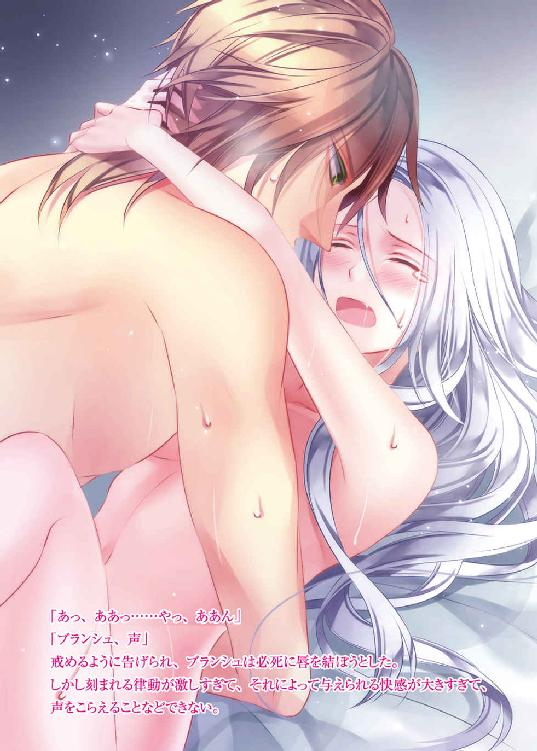
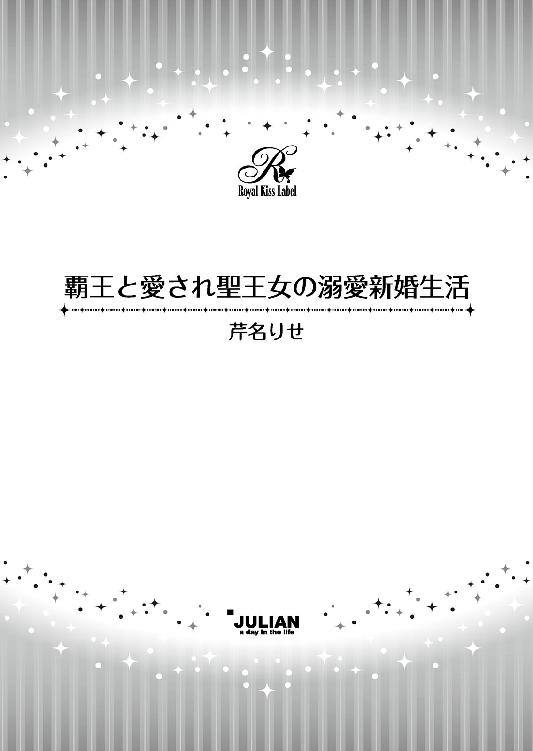
この物語はフィクションであり、実在の人物・団体・事件等とは、いっさい関係ありません。
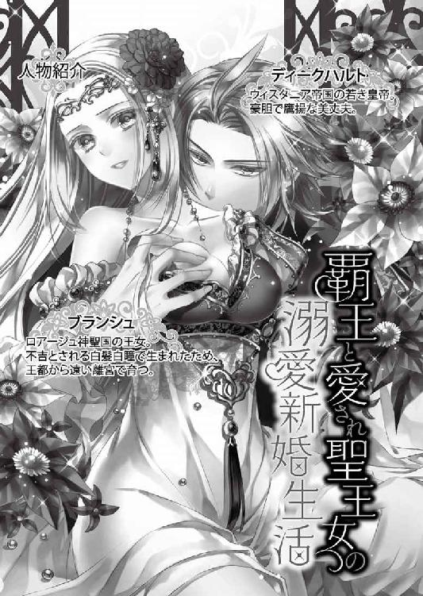
イラスト・蘭 蒼史
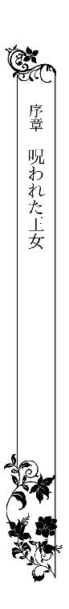
漆黒の夜空に青白い月が、獣の爪痕のような形の光を仄かに灯す夜更け。ロアージュ神聖国のアーディリー城の城内は、昼間のような喧騒に包まれていた。
多くの侍女や使用人が忙しげに廊下を行き交う中、宮廷の要職を務める貴族たちが一堂に会した大広間に、一人の侍女が駆け込み、声高らかに宣言する。
「お生まれになりました！ 王女殿下のご誕生です！」
「おおおお！」
真夜中であるにもかかわらず、その知らせを待ってその場に集っていた人々は、玉座に座すまだ年若い国王へ祝いの言葉を述べるため、我先に駆け寄ろうとした。
「おめでとうございます！」
「お祝い申し上げます！」
しかし祝福に沸く室内の空気に、侍女の次の一言が一石を投じる。
「陛下、王妃様が呼んでおられます。すぐにおいでください」
国王──ルドルフ三世は、怪訝な顔で首を傾げた。
「王妃が？」
お産の直後に国王が産室に呼ばれるとは、何かあったのではないかと、自然と部屋の空気も重くなる。不安に表情を曇らせる国王を、玉座の左隣に立つ鈍色の法衣の青年がそっと促した。
「大丈夫です。今日まで何事もなくこの日を迎えられたのですから......王妃殿下もお生まれになった王女殿下も、きっとご無事です」
その言葉を耳にし、緊張にこわばっていた国王の表情が少し和らいだ。
「ガルニエがそう言うのなら......」
しかし廊下へ出て、目的の部屋が近づくにつれ、異様な雰囲気にまた不安が高まる。待ち望んだ王女の誕生に、城内の人々が浮足立っている様子はどこにもない。誰もがまるで何かに怯えたかのようにびくびくしており、それは侍女に先導されて入った産室の中も同じだった。
「陛下、申し訳ありません......」
いつもは気丈な王妃が寝台の上で涙ながらに頭を下げ、国王は神妙な面持ちで、生まれたばかりの王女が包まれた白い布を侍女から受け取る。
「いったい、何が......」
まさか死産かとここまでくる間に覚悟を固めていたが、包みの中の王女は元気な産声を上げており、忙しく動く小さなてのひらも見えたため、国王は安堵した。それなのに──。
「あ............！」
腕の中の王女をのぞき見て、国王は思わず言葉を失った。
「そんな......！」
白い布にくるまれた王女は、生まれたばかりとは思えないほどに目鼻立ちがはっきりとした可愛らしい赤ん坊だった。本来ならば、将来はどれほどの美姫になるだろうかと、誰もが誉めそやす容貌だが、その小さな頭を覆う柔らかそうな産毛に、国王の視線は釘づけになる。
「......白髪......」
まるで見てはいけないものを見てしまったかのように唇を震わせた国王に、王妃は涙ながらに告げた。
「それだけではありません」
大人たちの戸惑いを知るはずもなく、ふわっと小さな欠伸をした王女が、くっきりとしたアーモンド型の大きな瞳を開く。
「あっ！」
その虹彩の色は淡く、白と言ってもいい色をしていた。
「そんな......まさか、白髪・白目......？」
王女を腕に抱えたまま、ふらりと身体の均衡を失いそうになる国王を、背後につき従ってここまで来たガルニエが支える。
「そう......ですね」
彼もまた細い目をこれまでになく大きく開き、驚きとも畏怖とも取れる表情をしていた。
誰も口を開かず、重い空気が満ちる室内には、王妃がすすり泣く声と、赤子の元気な泣き声が、対照的に長く響き続けた。
ロアージュ国内のムルカという地域に聖地を擁するヴァリド神教は、大陸の多くの国で信奉されている宗教だ。人々の暮らしに深く根づいており、その聖地があるということで、ロアージュ神聖国は古くから、大陸内でも確固たる地位を維持してきた。
そのヴァリド神教において、禁忌とされる者がある。
──それは、白髪・白目の者。
不吉とされ、災いを呼ぶとも言われるその容姿の者たちは、長い歴史の中、弾圧され、ひどい迫害を受け続けてきた。
ロアージュ神聖国第五十七代国王──ルドルフ三世の長女、ブランシュ・ド・ロアージュは、その白髪・白目としてこの世に生を受けた。
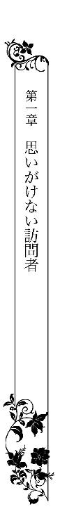
紫紺の空が次第にその色を薄くし、小さな灯火のように淡い橙色へと変わる頃、円錐型の黒い木々に囲まれた静かな湖は、早い朝を迎える。藍色の湖面に浮かぶ水鳥たちが羽繕いを始めると、大きさの異なる様々な種類の鳥たちも、次々湖へと集い始めた。
湖の畔には、石造りの館がある。夜には灰色、昼には白色に見えるその館は、実際には壁も屋根も、全てが貴重な白柱石製だ。数十代前の国王が、都会の喧騒を逃れて余暇を楽しむ場所として設けた。
しかしあまりにも王都から遠く、隣国との国境近くに位置するため、ほとんど使われないまま、外壁の多くは緑の蔦に覆われてしまっている。十八年前から珍しく常住している者がいるが、使用されている部屋は全体の一割にも満たない。広い館内は、ほぼ人の気配がない。
その中でもっとも人の生活の匂いがする、湖に面したとある部屋では、窓のすぐ傍に据えられた寝台の上で、一人の娘が静かに眠りに就いていた。
寒さを凌ぐ掛け布を頭まで被り、己で己を抱きしめるような格好で背中を丸めて眠っているのだが、窓の外から鳥たちの囀りが聞こえ始めると身じろぎする。
「う......ん......」
軽く伸びをし、寝台の上に半身を起こすと、長い髪がさらさらとその背を覆った。腰まである長い髪は、ごく淡い色をしている。寝台から下りて部屋の中央へと向かう娘の後を追ってゆらゆらと揺れ、まるで花嫁が結婚式に被るヴェールのように、小さく白い顔に華やかさを添える。
部屋の隅に置かれた水瓶から杓子で盥に水を入れ、娘がそれで顔を洗おうとすると、癖のない髪が顔の横に垂れ下がった。何度かき上げてもやはり落ちてくる髪は、絹糸のように滑らかで艶やかだ。
邪魔をする長い髪を無造作に背中で束ね、娘がようやく洗顔を終えて服を着替えた時、寝台とは対極の位置にある樅製の扉が、コンコンとノックされた。
「姫様、おはようございます」
「おはよう、ポーラ」
娘が返事をするとすぐに扉が開き、黒いお仕着せに白いエプロンをつけた若い女が部屋へ入ってくる。しかしすでに着替え終わっている娘の姿を確認すると、困ったように首を傾げる。
「また、先に一人で身支度を済ませてしまわれたのですか？」
「ええ」
言葉ほどは、ポーラと呼ばれた女の表情は険しくなかった。怜悧な印象のあるよく整った顔は、どちらかといえばもともと感情を読み取りにくい。いつも同じような表情だ。
しかし言葉だけは、長い髪の娘をやんわりと咎める。
「私の仕事がなくなってしまうので、どうぞそのままでお待ちくださいと、いつも申し上げていますのに......」
「いいのよ。自分でできることは自分でするわ」
腰まである髪を揺らしてかすかに微笑んでみせた娘は、髪だけではなく瞳もごく淡い色をしていた。どちらも白のように見えるが、窓から差し込み始めた朝日の中でよく見てみれば、髪は淡い金色、瞳は薄い水色なのだとわかる。
しかし肌の白さと相まって、常人と比べればかなり全体の色素が薄いことは確かだ。身体の線が細いこともあり、儚げな印象が強い。だがその口調や声音は潔くきっぱりとしており、意志の強い高潔さを感じさせる。
「朝のお祈りをして、湖へ散歩に行ってくるわね」
「はい。それでは朝食の準備が整いましたら、お呼びいたします」
深々と頭を下げたポーラを大回りに避け、娘は廊下へと続く扉へ向かった。
「あの......ブランシュ様」
「何？」
ポーラの呼びかけに従い、ゆっくりとふり返った娘──ブランシュの長い髪が、まだ薄暗い部屋の中に淡い光をふり撒くように、さらさらと揺れる。
その様子に視線を向け、ポーラは開きかけていた口を閉じた。
「いえ、なんでもありません」
目を伏せてしまったポーラに、ブランシュは小さな唇の端をかすかに上げて、笑顔を作ってみせる。
「今日の卵料理は何かしら......楽しみにしているわね」
「......はい。お気をつけていってらっしゃいませ」
「ええ」
癖がなく、かなりの長さがあるため、何をしていても目の前をちらちらする己の髪を視界から排除するように、瞳をいったん固く閉じ、それからまた開いて、ブランシュは部屋の外へと一歩を踏み出した。
湖の畔に立つ館──湖の離宮と呼ばれるこの場所に、ブランシュが来たのは生まれてすぐの頃だ。もちろん本人にその記憶はないが、王都からつき従い、乳母として育ててくれたデボラ──ポーラの母は、そう話してくれた。
ブランシュはこのロアージュ神聖国の国王──ルドルフ三世の長女として生まれたが、その誕生は国民には知らされず、王都から遠く離れたこの離宮で隠すようにして育てられた。
理由はただ、白髪・白目として生まれた──それだけである。
そのためにブランシュは、王女としての立場も、本来受けるはずだった待遇も、国民からの祝福も、両親の愛情も、全て得ることができなかった。
古来より、その容姿の者に関われば不幸になるという噂が広く流布しているため、実際に身の回りの世話をしようという者もほぼいない。下働きの者はしょっちゅう替わる。
デボラだけは乳母としての愛情からか、責任感からか、ブランシュを王女として敬い、大切に育ててくれたが、そのデボラも先年、流行病であっさりと亡くなってしまった。
その死を自分のせいだとは思いたくないが、後を引き継いだ娘のポーラを、ブランシュはなるべく遠ざけ、自分でできることは自分でするようにしている。
実の親からも見放されたような境遇の自分に熱心に仕えてくれるからこそ、決して不幸になってほしくはなかった。
石造りの館を出て、庭園の中に巡らされた長い回廊を抜けると、敷地の端に、鋭く尖った屋根の建物が見えてくる。ヴァリド神教の女神──ファルーナに祈りを捧げるための礼拝堂で、そこで静かに祈ることを、ブランシュは朝夕の日課としていた。
両手開きの大きな扉を開くと、色硝子越しの朝日が床に美しい文様を描く薔薇窓を背に、神々しく佇む女神の像が見える。その手前に設けられた祭壇の前に跪き、神聖国の平和と、父王と弟王子の健康を願い、ブランシュは熱心に祈る。
五つ年下だという弟のミッシェルとは一度も会ったことはない。ブランシュとは違い通常の髪色で生まれた弟は、その生誕時に吉兆が続いたこともあり『幸運の王子』と呼ばれているが、だからこそ不吉な容姿とされるブランシュとは徹底的に関わりを絶たれている。
生まれてからほんの数日間を共に過ごしたという両親の記憶はない。
国王の娘でありながら白髪・白目という忌むべき容姿に生まれついたブランシェにできることは、遠く離れた家族のためにただ祈ることのみだった。
母王妃は、もとはたいへん明るい性格で健康であったのに、ブランシュを産んでからすっかり心と身体を壊し、弟王子の出産後まもなく息を引き取ったと聞いている。その死も、やはり自分のせいなのだとブランシュは受け止めている。せめて父王と弟王子だけは、自分と遠く離れた場所で、長く健康に生きてほしい。
（どうかお願いします。女神ファルーナ......）
真摯な祈りを捧げてから、礼拝堂を後にした。
短く切り揃えられた灌木が幾何学模様を描く庭園を回り込み、再び館のほうへ向かうと、前方に湖が見えてくる。ほんの数刻前まで深い藍色に沈黙していた湖面は、今は朝日を浴びて碧色に煌き、水鳥の羽ばたきによって白い飛沫を上げていた。
「綺麗......」
白と灰色に閉ざされたような空間で一日のほとんどを過ごすブランシュにとって、朝のこのひと時はもっとも心躍る時間だ。夜は黒色に見える木立が緑色を取り戻し、湖も輝く中、館の前の湖畔には色とりどりの鳥たちが集まってくる。
「ごめんなさい、今日はこれだけしかなかったの」
昨夜の夕食の残りのパンくずをブランシュが地面に撒くと、遠く離れた場所からも更に飛んできた。
「待って！ 私はパンじゃないわ......ふふっ」
毎日同じ時間にこの場所に餌を撒いてくれるブランシュに、鳥たちはすっかり慣れており、肩に止まったり、長い髪をいたずらに引っ張ったりするものもいる。
「だめよ、放して......ははっ」
それは一日中胸に何かを秘めたような顔をしているブランシュが、心から笑顔になり、笑い声を漏らす貴重な時間でもあった。
鳥たちに餌をやった後は、長い髪を揺らしながら湖の畔をそぞろ歩く。その周りを鳥たちもついて回る。自分が招くという不幸が人間以外にも影響を及ぼすのかはわからないが、ブランシュが見る限り、鳥たちはいつも楽しそうだ。とても自由で、空腹を満たされ、遊ぶのに飽きると一羽、また一羽とどこかへ飛んで行ってしまう。
「いいな......」
何にも縛られないその羽ばたきを、ブランシュは目を細めて見送った。
「鳥たちがうらやましい......」
様々な制約の中で生きているブランシュは、こうして自由に散歩をしているはずの時でも、あの高い木の枝に咲く白い花にさえも手が届かない。湖の周りを歩き回ることができるのも、夜が明けたばかりの今の時刻、もしくは深夜だけだ。
以前、昼間に偶然迷い込んできた付近の住民に姿を見られた時、ひきつった悲鳴を上げられたことから、昼間に館の外へ出ることが怖くなった。
白金の長い髪をなびかせ、色の薄いドレスを着て湖畔を歩くブランシュの姿は、確かに知らない者が見れば人ではないもののようにも見えたかもしれない。ほっそりとした首筋に華奢な肩。手も足も細く、足音を立てずにまるで草の上を滑るように歩くので、もともとあまり生気が感じられない。
しかしそれにも増して、不吉とされる白髪・白目の人間と出会ってしまったことが、あの住民には恐怖だったのだろうと思うと、外に出ようという意欲はすっかり削がれてしまった。運動不足解消と鳥たちと戯れる目的を兼ねたこの朝の散歩だけでいいと、諦めてしまってからもう随分になる。
最後の一羽が森の向こうへ飛び去ってしまうのを見送ってから、ブランシュは館へ帰ろうとした。いつもならばその前に、朝食の準備ができたとポーラが呼びに来ることが多いが、どうやら今日はまだらしい。ひょっとすると朝から手の込んだものを作ってくれているのかもしれないと、ひそかに心躍らせながら踵を返そうとした時、傍にあった山査子の繁みが大きな音を立てて揺れた。
「きゃっ」
まさか獣でも迷い込んできたのかと、ブランシュは慌ててその場から飛び退こうとした。しかしその動きを、腕を掴むことで制止される。掴んでいるのは獣ではなく、もちろん人間の手だ。
（何......？）
血の気が引くような思いで繁みに視線を向け直したブランシュは、思わず息を呑んだ。
真っ先に視界に飛びこんできたのは、目を射るような鮮烈な赤だった。太陽の光を透かして、自ら光を放つような赤金色。森に閉ざされた湖の畔では初めて見るような色であり、つい視線を引き寄せられてしまう。
（何なの......？）
それはブランシュの手を掴んでいる者の髪の色だった。特に整えているようではない洗いざらしの髪は長さも不揃いで、髪の主の動きにあわせてまるで生きているかのように自由に宙を跳ねる。
繁みから出てきた髪の主は、見上げるほどに背の高い男だ。森の中へ迷いこんでしまった旅人だろうか。麻色の外套の下にシャツにベストといった簡素な服装をしており、長靴を履いている。腰には長い剣も見える。肩幅が広くたくましい体躯で、腕を掴む片手一本でブランシュの動きを簡単に封じ込めてしまった。
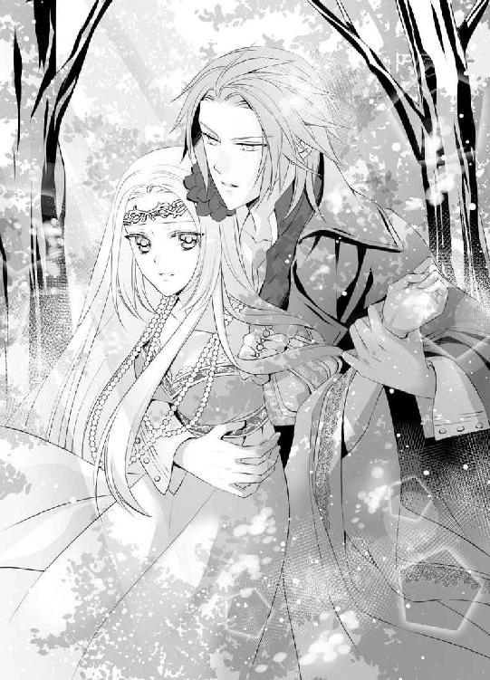
自分の姿を見て驚かないばかりか、向こうから腕を掴んでくる人間がいることが信じられず、男の姿を凝視していたブランシュだったが、その手を早く払い除けなければということをはっと思い出す。
「は、放してください」
手をふり解こうと腕を強く振ってみたが、まったく意味はなかった。
「放すものか、長い道のりを来て、ようやく見つけたんだからな」
わけのわからないことを言いながら、男はブランシュを更に自分のほうへ引き寄せようとする。
「やっ、放して！」
暴れても効果はなく、背後から抱きしめられるような格好になってしまった。
「じっとしていろ。俺は怪しい者じゃない。ディークハルトという。あなたを花嫁として迎えに来た。ロアージュ神聖国のブランシュ王女だな？」
堂々とした張りのある声で紡がれた言葉が信じられず、ブランシュは大きく瞳を見開いた。
（花嫁？）
しかしそれよりも聞き捨てならない言葉が後に続いており、冷えた声で訂正する。
「......違います」
確かにポーラはブランシュのことを「姫様」と呼ぶが、ブランシュ自身は自分を王女だと思っていない。むしろ自分は決してロアージュ神聖国の王女ではないと思っている。
白髪・白目という見かけのために、その地位と待遇が与えられなかったことは、ブランシュの心に大きな影を落としていた。そのためその間違いだけは、適当に聞き流せない。
「私は王女ではありません」
胸に痛みを感じながらもきっぱりと否定したのに、逆にディークハルトと名乗った男からも否定を重ねられる。
「いや、嘘を吐いてごまかそうとしてもわかる。白髪・白目......噂どおりだ。間違いない。それよりも......ここへ来るまでに、見るのも恐ろしい外見だと散々脅されたのに、ぜんぜんそんなことはないじゃないか......言ったやつらは帰ったらすぐに全員招集だな。厳しく問い詰めてやる。怖いどころか美しすぎて......むしろ目のやり場に困るくらいだ」
「美しい？ ......私が？」
聞き慣れない言葉を耳にし、ブランシェは思わず聞き返してしまった。
「そうだ。その容姿なら幼い頃から聞き飽きるほどに言われてきただろうが、俺もそれが一番ふさわしいと思うからあえて言わせてもらう。あなたは美しい」
「............」
この男はいったい何を言っているのだろう。そういう言葉をかけられたことなど、ブランシュはこれまでに一度もない。それどころか自分の外見には嫌悪を抱いており、信じられないものを見るような思いで、背後にいる男の顔を仰ぎ見る。
「どうした？ ん？」
口調の軽さに反して、ディークハルトは思慮深げな濃い緑色の瞳をしていた。佇まいにはどこか油断のならないところもあり、遥か高い位置からその切れ長の瞳で見据えられると、全てを見透かされているような心地の悪さがある。
自分に関われば不幸になるかもしれないという疑惑以前に、ぴたりと身体を寄せられている今の状況に不安があり、ブランシュは隙をついて彼の腕から逃れた。
「あ、おい！」
長い髪を翻しててその場から逃げ出したブランシュを、すぐにディークハルトも追おうとしたようだが、外套の裾が繁みに引っかかったらしく、足止めにあっている。
「っ......くそっ」
その間にブランシュは、館の敷地内へ逃げ帰ることに成功した。息を切らせながら建物の中へ駆け込むと、ちょうどブランシュを呼びに外へ出るところだったらしく、エントランスにポーラの姿がある。
「ポーラ！」
両手を広げて助けを求めるように駆け寄ったが、抱きつく寸前でブランシュはその手を下ろした。相手が自分にとって大切な人であればあるほど、やはり無防備に接触することは怖い。
それなのに先ほどのディークハルトという男は、ブランシュにその警戒をする暇も与えず、勝手に抱きしめてしまった。果たして大丈夫なのかと、背後をふり返る。
「どうされました？」
ポーラに呼びかけられて、ブランシュははっとしたように前を向き直した。突然現れ、勝手なことを言って、自分を強引に抱き寄せたような男の心配をするなど、どうかしている。
「いえ、なんでもないわ」
あれほどに他人と密着したのは、亡くなった乳母のデボラに泣き縋ったのが最後で、ディークハルトの手の感触がまだ腕に残っていることはあえて無視した。
その日の午後は王都から訪れたガルニエ神官に、ロアージュ神聖国の歴史について話をしてもらう予定になっていた。月に二度、ブランシュの様子見を兼ねて教育のためにはるばる来てくれるガルニエは、ヴァリド神教会の中でもかなり高位の神官だ。
ルドルフ三世の片腕として若い頃から相談役を務めており、その的確な助言で、ロアージュ神聖国を何度も危機から救ってきた。誰もが敬遠したブランシュの教育係にも「私ならば神のご加護が厚いので」と自ら名乗りを上げてくれた人物である。
ブランシュにとっても、信頼できるごく少ない相手の一人だった。
「最近、何か変わったことはありましたか？」
講義の後、そう近況を訊ねられるのはいつものことであるのに、朝からおかしな男と遭遇してしまったため、ブランシュは「特にありません」と答える声が妙に上擦ってしまった。
「珍しいですね」
ガルニエが笑ってくれたので、ブランシュも表情を崩す。
「すみません」
「いいえ、謝らなくてもいいのです。たまにそうして笑顔を見せていただければ、王都からここまできた疲れも吹き飛びます。次こそ何か良い報告があることを期待しています」
「はい、今日もありがとうございました」
ブランシュのほうこそ、ガルニエの穏やかな笑みにはいつも救われている。ディークハルトのことも正直に打ち明けて相談しようかと思ったが、やめておいた。
もう二度と会うこともないだろうし、わざわざ報告して、ガルニエや父王に余計な心配をかける必要はないと判断したからだ。しかし──。
翌日、いつものように朝の祈りを終え、湖へ向かおうとしたブランシュは、昨日と同じ場所に赤い髪の大きな男の姿を見つけ、驚きのあまり足を止めた。
「............え？」
ディークハルトは昨日ブランシュの腕を掴んだあの山査子の繁みの前に胡坐をかいて座り、腕組みをしながら深く頭を垂れている。ひょっとすると眠っているのかもしれない。
（いったいいつからここに？ まさか昨日からずっと？）
さすがにそれはないと思いながらも、気になる。しかしブランシュが来たことに彼が気づけば、それはそれでまた面倒なことになりそうなので、起こさないように鳥たちに餌をやり、今日は散歩を省略してすぐに帰ろうと決めた。
ところが鳥たちが集まり、ブランシュが餌を撒き始めるとすぐに、ディークハルトの座るほうから声がする。
「なんだ、本物か......あなたの姿をした精霊が現れて、鳥と戯れているのかと思った」
「............！」
つい先ほど横目で確認した時にはまだ眠っている様子だったのに、突然の声に驚いてブランシュがふり返ってみると、彼はもう地面に座り直し、あの深緑の瞳でこちらをじっと見ていた。
何の気配も感じなかったことにブランシュはたいそう驚いているのに、ディークハルトの態度は実に泰然としている。
「鳥が好きなのか？ ああ、そうじゃないな......どうやら鳥があなたを好きなようだ」
どこに根拠があるのかわからないことを呟きながら彼が手を差し伸べると、ブランシュの肩にとまっていた鳥がすっとそちらへ移動し、ディークハルトの腕にとまった。
「あ......」
ブランシュは毎朝餌をあげているので、鳥が群がるのも当然だと思うが、彼は違う。昨日初めてこの場所を訪れ、今も餌をあげているわけでもないのに、一羽、また一羽と鳥がディークハルトのほうへ移動していくことが不思議でならない。
「どうして......？」
思わず声に出して呟いてしまったブランシュに、ディークハルトが恭しげに下から手を差し伸べた。
「あなたも来るか？ さあ」
それは舞踏会の場で、紳士が令嬢をダンスに誘う際のれっきとした仕草なのだが、そういう場に出たことがないブランシュにはわからない。動物と同じ扱いをされ、からかわれているのだと背を向ける。
「行きません」
そのまま館へ帰ろうとする背中に、ディークハルトの明るい声がかかった。
「ブランシュ王女、俺の花嫁になってくれ」
「なりません！」
率直な求婚には正直、どきりと胸が跳ねたが、それよりもまた『王女』と呼ばれたことが辛く、ブランシュは両手で耳を塞いで、館へと駆け戻った。
次の日も、また次の日も、ディークハルトはブランシュが朝の散歩に出かけると、湖の畔で必ず待っていた。まさかそこで寝泊まりしているのかと嫌味を込めて問いかけると、とても嬉しそうな顔をされる。
「俺に興味を持ってくれたのか？」
「そういうわけではありません。もう来ないでくださいといくら言っても聞き入れていただけないし、毎日いらっしゃるので、よほどお暇なのだなと呆れているだけです」
「手厳しいな......」
苦笑いをしながらも、ディークハルトは自分がどうやって毎朝ここへ来るのかの説明を始める。
「まず、あなたと会ったらすぐに国へ帰る。俺にも仕事があるからな......そこで一日働いて、仕事が終わったらすぐに、馬を駆ってここへ来る。到着はまだ真夜中のこともあるし、もう明け方近いこともある。この場所でうつらうつらしながら待っているとそのうちあなたが現れて、こうして少しの時間を共に過ごす。そしたらまた国へ帰って......そのくり返しだ」
「じゃあ、実はほとんど寝てらっしゃらないのですか？」
ブランシュが驚きの声を上げると、ディークハルトは大きく口を開けて笑った。
「ははっ、だからうつらうつらしていると言っているだろう。毎日ここであなたを待っている間......」
「でも......」
彼がどこからここへ通ってきているのかは知らないが、『国へ帰る』という言い方をした以上、少なくともロアージュ神聖国内が出発地ではない。ここは国境には近いが、それでも隣国の一番近い街に、馬でも二時間はかかる。もっと遠い場所ならそれ以上だ。
そうまでしてここへ通う気が知れず、ブランシュは呆れる気持ちを抑えきれない。
「どうして毎日来るのです？ 来てもあなたが得することは何もないと思いますが......」
ブランシュとほんのわずか、一緒に過ごしているとも言えないほどの時間を過ごすだけだ。今日はまだ長く会話をしているほうだが、ほぼ口を利かない日もある。それでもディークハルトは休むことなく、次の日にはまたこの場所でブランシュを待っている。
「無駄なことはもうやめたほうがいいと思います」
「無駄か......そうだな。でもあなたが俺の申し出を受けてくれたら、今ここでこうしていることも、これまでの日々も無駄ではなくなる......どうだ？ 俺の花嫁にならないか」
「お断りします」
ブランシュがいくらきっぱりと断っても、ディークハルトはまた翌日になると、何食わぬ顔でその場所にいる。
いつの間にかそのことに慣れつつある自分を、ブランシュは自覚していた。
その日は月に一度、ブランシュが盛装し、昼間も礼拝堂で祈りを捧げる日だった。
乳母のデボラが生きていた頃からの習慣で、この日ばかりはポーラに身支度を手伝ってもらうしかない。ブランシュが一人では着られないような豪奢なドレスに身を包み、髪も優美に結い上げるためだ。
ヴァリド神教の大礼の日に当たるので、盛装をして祈りをということだったが、一人で礼拝堂に一日中こもっていることは精神的にも疲れるため、息抜きのために時々、館やその周りを散策してもいいと言われている。
あまり長い時間を徘徊することにはまだ不安があるが、毎日勝手に会いに来るディークハルトとのやり取りのせいで、昼間に少し出歩く勇気も、ブランシュの中にわずかに戻っていた。
（どこへ行こうかしら？）
気がつけば足が勝手に、湖の畔へと向かう。
いつもディークハルトが座ってブランシュを待っている場所を見て、誰の姿もないことに軽く落胆した。
（それはそうだわ、今頃はどこかで働いているはずだもの。それが何の仕事かはわからないけれど......）
彼がもし国境向こうのウィスタニア帝国から通ってきているのなら、体格からして、おそらく騎士か傭兵だろう。帝国は強大な兵力を誇る軍事大国だ。
時間に縛られている様子なのでどちらかといえば騎士か、それとも悠々と自由気ままな雰囲気からしてやはり傭兵かと考え、ディークハルトの職業について、いつの間にか真剣に思案している自分に気がついた。
（私ったら何をしているの......）
どうにも調子が狂う。ブランシュはヴァリド神教で不吉とされる容姿だ。誰からも忌み嫌われる存在のはずなのに、ディークハルトがまるでそんなことは関係なくふるまうので、つい自分でも忘れてしまいそうになる。
（忘れるなんて......）
深い悲しみと贖罪の思いを新たにするため、ブランシュは身を乗り出して湖をのぞき込んだ。そこには長い髪を見事に結い上げた、色の白い娘が映っている。
こうして太陽の光の下で見てみれば、ブランシュの髪は白ではなく、月の光をわずかに溶かし込んだかのような白金色だ。瞳の色も成長と共に色味が濃くなり、淡い水色なのだと今でははっきりと見て取れる。しかし、もう今さらどうしようもない。
白髪・白目の不吉な赤ん坊として、ブランシュから奪われたものは戻ってこない。今後もずっとこの湖の畔の館で、静かに祈りを捧げる人生しかない。
そう覚悟を決めているはずなのに、ふいに耳の奥でディークハルトの声が響く。
『ブランシュ王女、俺の花嫁になってくれ』
もしその求婚を受け入れたなら、いったいどういう世界が目の前に広がるのだろう──一瞬それを想像しかけ、ブランシュはそういう自分を叱咤した。
（私ったら何を考えているの......！ そんなの私に許されることじゃない）
つい甘い夢を見そうになる気持ちを戒めるかのように激しく首を振っていると、湖面に映るぼやけた自分の顔の隣に、そのディークハルトの顔が並ぶ。
「えっ？」
思わず隣を向くと、息がかかりそうなほどすぐ近くに、実際にその顔があった。
「............？ あ......きゃあっ」
ブランシュは驚き、その場から逃げようとした。しかしいつもとまったく服装が違うためうまく動けず、身体の均衡を失い、湖に落ちてしまいそうになる。
危ないところで腕を伸ばし、抱き止めてくれたのはディークハルトだ。背中に回された腕の感触に気まずさを感じながらも、ブランシュはまずお礼を言う。
「あ、ありがとうございます」
「ああ、豪華なドレスが汚れずにすんでよかった。そういう格好もするんだな、意外だ」
「今日はそういう日なので......」
「へえ......」
もしこの服装で彼に会うことがあれば、おそらく褒められるとばかり思っていたので、意外に反応が薄く、肩透かしにあったかのような気分になる。ブランシュは居心地悪く、ディークハルトの腕の中で身じろぎした。
「あの......もう放してください」
「いやだ」
きっぱりと拒否され、対応に戸惑う。
「でも、放していただかないと困ります」
「だろうな」
ディークハルトは鷹揚に返してくるが、ブランシュがもっとも懸念していることは、おそらく彼には伝わっていない。毎日会っている時点でもう手遅れかとも思うが、これ以上彼と関わりを深めたくなかった。白髪・白目の人間に関わると不幸になるという言い伝えが、いつ現実のものになって彼の身に降りかかるかと思うと、それが一番怖い。
「お願いします」
声を震わせながら頭を下げると、腕の力がわずかに緩んだ。
「じゃあ交換条件といこう」
「え......？」
楽しげに声を弾ませて提案されるので、ブランシュは瞳を瞬かせる。
「俺のことはこれから名前で呼んでくれ。それで今日のところはあなたを解放しよう......とても残念だが、今日のところは......な」
「......ディークハルト様......ですか？」
「様はいらない。それにディークでいい」
「ディーク......」
「そうだ。ブランシュ王女」
「あの！」
満足げに微笑まれ、気がつけばブランシュは自分から声を上げていた。
「私も......ただの、ブランシュでいいです」
それを耳にしたディークハルトはますます笑顔になる。
「ブランシュ？」
「はい。それでいいです」
「では......改めてよろしくブランシュ」
「よろしくディーク......」
たくましい腕に抱きしめられているという状況から、ブランシュはこれでようやく解放された。耳にするたびに気持ちが落ち込む『王女』という呼称を、呼ばれなくなる交渉にも成功した。
しかしそれらと引き換えに、かえってディークハルトとの距離は縮んだ気がしないでもなかった。
それからブランシュは、ディークハルトと共に湖畔を少し散歩した。
「じゃあ今日は一日中祈りを？」
「そうです。月に一度のそういう日なので......」
「たいへんなことだな」
「そうでもありません。これが私の務めです」
自然に会話を交わしながら彼と一緒に歩いていることが、冷静に考えてみればおかしい。なるべく関わらないほうがいいという思いは変わらないのに、これまでと違う時間に彼が隣にいるせいかもしれない。
「ディーク......こそ、今日はどうしてこんな時間に？」
名前を呼ぶことにまだ慣れず、ブランシュがぎこちなくその名を口にすると、ディークハルトはいかにも嬉しげに笑う。
「今日は仕事でこちらに用があった。そのついでにのぞいてみたらあなたがいたので、少し仕事を抜けてきた。来てよかった。あなたといつもよりゆっくり過ごせたし、その女神のような姿も見ることができた」
「あ......」
彼は今日の服装には特別何も感じていないと思っていたのに、ふいにそういう言い方をされるので、ブランシュの胸はとくりと跳ねる。
「とても綺麗だ、ブランシュ......このまま攫ってしまいたいくらいだ......どうか俺の花嫁になってくれ」
それはディークハルトと出会ってから、ほぼ毎日のように言われている言葉だ。だが、いつになく真剣な眼差しを向けられたので、きりりとしたその表情に目を奪われ、ブランシュは一瞬返事が遅くなってしまった。
「あ......な、なりません！」
「ははは、やっぱりそうか......」
頭上にあった木の枝に向かって軽く飛びながら笑っているディークハルトこそ、いつもと違う服を着ているからか、別人のようにも見える。
厚地の濃紺の上着に金の釦や縁飾りがついている服は、やはり騎士服なのだろうか。知識として本で読んだことがあるだけで、実際に見たことはないので、ブランシュには正しい判断がつかない。しかし背が高く堂々した体躯の彼によく似合っていることは確かだ。
朝と違って日光が強いこともあり、ブランシュは眩しい思いでその背中を見つめる。日に透けて燃え上がるような色の赤い髪を揺らして、ディークハルトがふり返った。
「ブランシュ、これを」
まじまじとその姿を見ていたことを知られてしまっただろうかと、慌てて顔を伏せたブランシュの頭に、大きな手が触れる。
「え？ 何ですか？」
いったい何をされたのだかわからない。上目遣いでなんとか見ようとしてもその仕草を笑われる。
「なんだ、その顔は......ははっ」
「だってしょうがないじゃないですか」
そろそろ仕事に戻るというディークハルトと別れ、館に戻ってから、もう一度礼拝堂にこもる前に、ブランシュはポーラに頭の上を見てもらった。
「私が飾ってさしあげた髪飾り以外には特に何も......あ、これでしょうか？」
高く編んだ髪からポーラが抜き取ってくれたのは、白い花だった。
「あ......」
それは湖の周りに自生している大きな木の枝に咲いている花で、自分では手が届かないとブランシュがいつも寂しく見上げていたものだ。ディークハルトがそのことを知っているはずはないが、自由の象徴のような思いで見つめていた花を、思いがけず与えられ、胸がざわめく。
「鳥にでももらったのですか？」
ブランシュが鳥たちによく懐かれていることを知っているポーラが、からかい交じりに問いかける。ブランシュは表情を隠すように俯いて、短く答えた。
「そうね」
自分ではとうてい手が届きそうにないものも、ディークハルトならば届く。そして彼は取ったものを、こうしてブランシュに与えてくれる──その事実がとても重要なことのように思え、その花は水を入れた小皿に浮かべて長い間、部屋の隅の棚の上に飾り続けた。
普段ならば、いつの間にかどこからか音もなく現れるディークハルトが、珍しくがさがさと大きく木々を揺らして湖の畔へやってきたのは、それから数日後の朝のことだった。
「今日は遅かったのですね」
鳥たちにすっかり餌もやり終わり、後は彼の到着を待っている状態だったブランシュは、音のしたほうを何気なくふり返り、驚きのために大きな声を上げる。
「どうしたの、ディーク！」
彼は泥だらけで、よく着ている麻色の外套も破れ、シャツの腕には血が滲んでいた。
「たいしたことじゃない。馬が少し足を取られただけだ」
笑顔で答え、ディークハルトは湖の畔に腰を下ろすが、顔色があまり良くない。聞けば昨夜ここへ来る途中で馬が突然棒立ちになり、その背からふり落されたのだそうだ。
しばらく気を失っていたらしく、目覚めてからまた改めて出発したので、すっかり遅くなってしまったとディークハルトは笑う。
ブランシュはとても笑える心境ではなかった。
「だって......」
ディークハルトが乗っているのは彼の愛馬で、長く彼と行動を共にしている。おとなしくて従順で、よく躾けられている。突然棒立ちになるようなことはこれまでに一度もなく、これが初めての経験だったとディークハルトは語る。
「まあ、そういうこともあるさ」
彼は鷹揚に笑っているが、ブランシュにはとてもそうは思えない。ぶるぶると震え出してしまいそうな両手を握りあわせながら、その場に立ち上がった。
「私、館へ戻ってお薬を取ってきます」
「そんな気遣いはいらない。たいした怪我じゃない」
「いいえ、放っておけないもの」
「おい、ブランシュ！」
ディークハルトの制止をふり切って、ブランシュは館へと駆け戻った。
「どうされました、姫様？」
出迎えてくれたポーラに、湖の畔で転んでしまったので擦り傷や打ち身に効く塗り薬が欲しいと伝える。ポーラは何も言わずにそれらを準備してくれたが、ブランシュが使うのではないことはわかっているはずだ。
毎日会っているのだから、ディークハルトと過ごしているところを実際に見たことがあるかもしれないし、その後のブランシュが饒舌すぎることで、誰かと会っているのではという予想も簡単につく。
それでもポーラは何も訊かない。ブランシュも言わないつもりだった。なぜなら──。
（ディークとはもう会わないほうがいい）
ポーラに準備してもらった薬を持って湖へ帰りながら、ブランシュはその決意を新たにしていた。ディークハルトが馬からふり落されたことは、ただの偶然かもしれない。しかしブランシュに関わったために起きた災いかもしれない。
実際には両者を見わける術などないのだが、自分と関わる者は不幸になるのだとブランシュが信じている限り、これからも彼に何かが起こるたび、自分のせいだと悩むだろう。
想像するだけでそれはとても苦しいことで、それぐらいならばもういっそディークハルトには会わないほうがいいと決心する。
「薬を持ってきました。擦り傷にも打ち身にも効くはずです。どうぞ」
「ありがとう、すまない、ブランシュ」
ディークハルトは薬を受け取り、自分で塗布し始めたが、ブランシュはできればその手伝いをしたかった。しかし自分が関われば、彼にまた何かよくないことが起こるかもしれないという思いが強く、身体に触れるのが怖い。
水で濡らした布を準備して、彼が身体についた泥を落としたり、傷口を清めたりするのを、間接的に手伝うに留めた。
少し休むと、やはりもう帰らなければならないとディークハルトが言うので、ブランシュは覚悟を決めて切り出す。
「もう、ここへは来ないでください」
「......どうして？」
驚いたふうに彼は聞き返すかもと思っていたが、声は落ち着いていた。まるでブランシュならばそう言いだすだろうと、あらかじめわかっていたかのような響きにも聞こえる。
「私とはもう会わないほうがいいです。遠くまで毎日通うのも大変だし、こうして怪我することもあるし......」
「俺は平気だ」
「でも......！」
自分が平気ではないのだとは、なぜだか言いづらい。その言葉の裏には、もっと彼に伝えなければならない何かが隠れているような気がする。しかしブランシュは、それが何なのかまだはっきりわからない。
「いくら来ていただいても私の答えは変わりません。あなたの花嫁にはなれません。もっと別の方のところへ行かれたほうがいいと思います」
「それがあなたの本心か？」
ディークハルトの声が突然低くなり、ブランシュは顔を伏せた。緊張のあまり、どきどきと胸から飛び出してしまいそうなくらい心臓の音は大きくなっていたが、両手をこぶしの形に握りしめて頷く。
「............はい」
「そうか」
短い返事と共に、ディークハルトが立ち上がる気配がする。もうこれで彼とは会えなくなるのだと自覚すると、切りつけられるように鋭く胸が痛んだが、ブランシュはそのまま見送ろうとした。
しかしいつも通路代わりに使っている山査子の繁みの前まで進んだディークハルトは、そこでもう一度口を開く。
「じゃあ、また明日、ブランシュ」
「............！」
信じられない思いで、ブランシュは顔を上げた。朝日を背に、赤金色の髪を風に翻らせて、ディークハルトはいつものように笑っている。
おそらくたいそう驚いた顔をしているだろうブランシュを見つめて、深緑の瞳がゆっくりと眇められる。
「なんだ、その顔」
温かく、慈愛に満ちたようなその笑顔を見ながら、ブランシュは思わず胸に熱いものが込み上げてきそうになった。しかし必死にこらえて、頭を左右に振る。
「だめです！ もう来ないでくださいと私は言いました」
白金色の長い髪が、視界の隅をちらちらとする。それはまるでブランシュをこの場に繋ぐ枷のように──。決して忘れてはならない戒めを思い出させようとでもするかのように──。
「でも俺は来る。俺の意志は誰にも変えられない。相手があなたでも、たとえ神でも──！」
「ディーク！」
恐ろしい宣言を撤回させようとブランシュは叫ぶのに、ディークハルトは軽く目を伏せて、緩やかに首を横に振る。
次にこちらに目を向けた時には、ほんのつい先ほどまであれほどの優しさに満ちていた深緑の瞳が、これまで見たこともないような烈しい意志を煌かせていた。
（............え？）
形のいい唇が、誓いを新たにするかのような言葉をきっぱりと紡ぐ。
「俺は俺の意志に従ってのみ行動する。また明日会おう、ブランシュ」
向けられたのは、ブランシュがしばらくその場所から動けなくなるほどの眼差しであり、その佇まいは、彼は何者なのだろうと、彼女が胸を震わせながら考えるほどの覇気に満ちていた。
翌日から、ブランシュは早朝にに湖の畔へ行くことをやめた。突然に餌がなくなってしまうと鳥たちがかわいそうなので、庭師に頼んでパン屑は撒いてもらったが、ブランシュ自身はもう足を運ばない。
「いいのですか？」
ポーラは何度か確認したが、そのたびに笑顔を返した。
「いいの。そろそろ飽きてきたし......これからは昼間に庭園を散歩して、季節の花を植えたり、その手入れをしたりするわ」
「姫様が本当にそれでいいのなら、私は何も言うことはありませんが......」
言外に、ディークハルトとはもう会わなくてもいいのかと確かめられていることは、ブランシュにもわかっていた。だから精いっぱいの強がりで、更に明るく笑ってみせる。
「もちろんいいわ！ どんな花を植えようかしら......そのうち鳥たちがこちらまで遊びに来てくれるように、木に巣箱も作りたいし......」
「そうですね」
本音に背を向けて逆の方向へ向かおうとするブランシュを元気づけるように、ポーラが力強く頷いてくれる。
何気なくその背後に目を向けたブランシュは、窓から見える朝の湖の風景の中に、色鮮やかな赤金色を見つけてしまい、どきりと胸が跳ねた。
（あ......）
湖面の碧色や木々の緑色の中で、ひときわ異彩を放つその色は、今日も湖の畔で輝いている。昨日の宣言どおり、ディークハルトがいつもの場所で自分の訪れを待っているのだと思うと胸が痛んだ。
（怪我は大丈夫だったのかしら？ もう来ないでくれと言ったのに、やっぱり来たのね......）
おそらく彼はそうするだろうとも思っていたが、その姿を見ても自分だけは決して行くまいと、ブランシュはこぶしを握りしめる。長い髪を翻らせて、窓に背を向けた。
「朝のお祈りに行ってくるわ」
「それでは私も、これまでより急いで朝食の準備をいたしますね」
「ありがとう、ポーラ」
もう窓のほうは見ないようにして、ブランシュはポーラと共に自室を後にした。
その翌日も、翌々日も、ブランシュは朝の散歩に行かなかったが、ディークハルトのほうはどうやら来ているようだと、窓から見て確認できた。いつもの場所に座り、身動きしない彼は、おそらくその態勢のまま眠っているのだろう。周りを鳥たちが飛び交っているようにも見えた。
（いいな......私も鳥だったらよかったのに......）
ついそういう思いが胸を掠め、ブランシュは己を諫めるように首を振る。
（ばかね、何を考えているの......）
それでも自然と窓の向こうの湖の景色に視線が行くのは、どうしても止められない。
ブランシュが朝の祈りを終え、朝食を終えても、ディークハルトはその場所から動かなかった。しかし窓辺に座って刺繍でもしようと別室に道具を取りに行っている間に、忽然と姿が消えている。
「あ......」
毎日ブランシュに会いに来ても、ディークハルトは仕事を休んでいないふうだったので、もうそちらのほうへ向かったのだろう。長い時間をかけてここまで来ただろうに、その数十分の一の時間も一緒に過ごしてあげない自分は、ひどく無情な人間のように思えた。
（ごめんなさい......）
しかしここでまたブランシュがディークハルトに会いに行ってしまえば、状況はこれまでと同じに戻る。決して良い返事をもらえない求婚のために、彼は無理をして毎日ここまで通い、ブランシュは自分のせいでいつ彼が不幸な目に遭うかと、不安を抱えて過ごす。
それはどちらにとっても好ましい状態とは思えなかった。
（だからこれでいい......私のことをひどい女だと思って、もうここへ通うのをやめてくれたらいい）
しかしその時はなかなか訪れなかった。
雨が降り出したのは、ある日の夕方のことだった。ディークハルトが湖の畔に姿を見せるようになってからはほぼ毎日良い天気が続いていたので、こういう時、彼はどうするのだろうと、ブランシュはつい考えてしまう。
雨足は次第に強くなり、ブランシュ自身も夕方のお祈りに行けないので、自室で済ませた。嵐のような雨風から窓を守るため、木製の雨戸を閉めにポーラが来るだろうと思い、先に自分で閉めておこうと窓へ向かう。
雨のために通常より早い日暮れを迎えた窓の外の景色は、もうほぼ何も見えないが、湖の畔の辺りに赤金色が見えた気がした。
（え？ そんなはずないわ......）
この雨の中、しかも今の時間から、翌朝来るかもわからない自分をディークハルトがあの場所で待っているのだとしたらさすがに無謀すぎる。あり得ないと思いながらブランシュは窓に顔を近づけてみたが、確かにそこには彼が座っているように見える。
「そんな！」
ブランシュはつい大声を上げてしまった。
「この雨の中？」
いったいどういうつもりなのだろう。いくら考えてみても、答えは一つしか思い浮かばない。「俺は俺の意志に従ってのみ行動する」と、最後に会った日に彼は言い切っていた。ブランシュに毎日会いに来ると──自分の意志で決めたことに則り、それを本当に実行しているのだ。
結果、何日間ブランシュに会えなくてもそれが覆されることはなく、天候にも左右されない様子を目の当たりにし、ブランシュは吃驚する。
「なんて人なの......」
自分はどうするべきかと思案した。
日が暮れたとはいえ、まだ夜になったばかりだ。夜明けまでは十時間ほどもある。雨は強くなるばかりで、やむ気配はない。このままあの場所で雨に打たれ続けていたら、いくら体力に自信がある彼でも体調を崩してしまうかもしれない。
ブランシュはひそかに決意し、壁にかけてあった外套に手を伸ばした。
「仕方がないわ」
自分に言い聞かせるように呟きながら、それを頭から被り、自室を出る。
暗い中では前も見えないと思いカンテラを持ったが、館から一歩を踏み出した瞬間、横風に煽られて消えてしまいそうになった。
「あっ！」
慌てて外套の中へ入れ、その後は足もとを照らすようにしながら慎重に一歩ずつ進む。外套で身体全体を包み、それと繋がる頭巾を頭に深々と被っていても、打ちつける雨の感触はとても強かった。風も激しく、今にも足もとをすくわれてしまいそうになる。
「きゃっ」
時々風に煽られながらも、よろよろとようやく湖の畔にさしかかった時、前から人が来る気配がした。
「ブランシュ？ まさか本当に？ それらしい人影が来ると思ったら......この雨の中、いったい何をしているんだ」
雨が吹きつけてくる方向に立ち、その大きな身体でブランシュの前に盾を作ってくれながら、ディークハルトは驚いたように問いかける。
ブランシュは草色の外套の下で、きりっと顔を上げた。
「あなたこそ！ どうしてこんな天気の日にも来るのですか？ 私はもう来ないでくれとお願いしたのに、それでも毎日、毎日......」
感情の高ぶりと共にこみ上げそうになった涙をこらえ、ぎゅっと唇を噛みしめたブランシュの肩に、ディークハルトの大きな手が乗る。
「それをずっと見ていたのか？」
「ち、違います！ 私はただ......」
「そして心配になって、ついに出てきたのか？ もしそれが俺の策略だったらどうする？ あなたはまんまと騙されたことになるぞ」
冗談めかして訊ねられても、ブランシュは首を横に振った。
「だとしたらディークはあまり利口ではないです。計画が無茶で、無謀すぎます......」
「確かに......」
ディークハルトは苦笑しながら、ブランシュを胸に抱きこんだ。
「少しだけ俺に時間をくれるか？ あなたと話がしたい。その後はちゃんと館まで送る。いつもの場所へ行こう。ここよりは雨風をしのげる」
「......はい」
ブランシュはそれをディークハルトの詭弁だと思っていたが、実際に繁みのすぐ近くに腰を下ろすと、雨も風もさほどひどくは感じなかった。草木が壁の役割を果たしてくれている。
そのおかげか、革製の外套を着ているからか、実はディークハルトはそれほど濡れていない。
それに比べて普段のドレスのまま、その上に薄い外套をはおっただけのブランシュは、ここまでくる間にすっかりびしょ濡れになってしまっていた。
「それで......誰が無謀だって？」
自分が着ていた革の外套をブランシュの頭にかけてくれながら、ディークハルトが訊ねる。
「それは......」
ブランシュにはもう、彼を責めることはできなかった。
「私かもしれません......」
「ははは、そう素直に落ち込まないでくれ。姿を見たのも久しぶりなのにあまりいろんな顔を見せられると、すっかり舞い上がって、言わなければならない言葉も忘れてしまう」
「舞い上がって......」
それはつまりは嬉しいということなのかと、頬を染めるブランシュの肩を、ディークハルトが抱く。
「抱きしめるぞ、そのままじゃ風邪をひく」
「あ......」
ブランシュは軽く抗ったが、そんなものはものともせず、ディークハルトは白金色の頭を、もう胸に抱きしめてしまった。そうしながら頭のすぐ上から、問いかけてくる。
「元気にしていたか？」
「はい」
聞き慣れた声が身体に直接響き、ブランシュは安堵のあまりに涙が浮かびそうになった。その顔を見てその声を聞いただけで、ブランシュのほうこそ確かな喜びを感じている。その自分の状態に戸惑いを覚える。
「朝の散歩をやめてどうしていた？ すっかり運動不足になったんじゃないか？」
からかうように問われても、ブランシュは現状を淡々と、正直に告げた。
「昼に庭園を歩いていたので大丈夫です。時々は夕暮れも......」
「そうか......」
ため息を吐くように、ディークハルトは言葉を紡ぐ。
「でも鳥たちが寂しがっているから、やはりいつものあの時間にあの場所を散歩してくれ。俺がどうしても邪魔になるのなら、もう来ないから......」
「え......？」
思いがけない言葉を耳にし、聞き返すようについ、ブランシュはディークハルトの腕の中で顔を上げてしまった。しかしすぐ目の前に彼の顔があり、慌ててまた頭を下げる。その状況と今の言葉で、頭の中はすっかり混乱した。
（どうして......？）
ディークハルトは確か、己の意志によってのみ行動し、誰にも左右されないのではなかっただろうか。そのように言い切っていたし、実際そう行動しているように見えたので、急に本意を翻したかのような今の言葉が、ブランシュはすぐには信じられない。
その驚きが伝わったのか、再びディークハルトが口を開く。
「確かに俺は俺の決めたようにしか行動しないが、それで誰かを不幸にしたいわけじゃない。あなたの幸せを壊したかったわけじゃないんだ。悪かった......本当に迷惑ならもう来ない」
「あ......」
何と答えていいのか、ブランシュにはわからなかった。
確かに朝のあのひと時はブランシュにとって一日でもっとも楽しい時間だが、余計にそう感じるようになったのは、ディークハルトが現れてからだ。
鳥たちに勝手に話しかけるのも楽しかったが、確かな答えを返してくれる彼を相手に、話をするのはもっと楽しかった。この離宮から出たことがないブランシュには知らないことが多すぎて、ディークハルトが聞かせてくれる話の何もかもが面白く、身振りを交えて話してくれる姿を、穴が開くほどにいつもじっと見ていた。
周囲に若い男がおらず、その存在自体が珍しかったこともあるかもしれない。しかしその表情や言動に視線が釘づけになってしまうのは、ディークハルト本人に対する興味が大きかったからだ。その思いを伝えることができればいいのだが、どう言ったらいいのかわからない。
口にしていいとも思えなかった。もう彼とは会わないほうがいいと、決断したのはブランシュだ。それでも会いに来てくれたディークハルトを放置して、それなのに彼のほうから別れを告げられると、まるでこの世の終わりのような心境になっている。
来ないでくれといくら自分が言っても、おそらくこれからも彼はあの場所に通ってくるのだと、どこかで信じていた気持ちがあったのかもしれない。そしてその彼に会いに行くのではなく、遠くからただ見ていることを楽しみにしている気持ちが──。
自分はどこまで自分勝手で無情な人間なのかと、ブランシュはディークハルトに申し訳なくなる。
「どうした？」
決意を告げても特に返事もせず、深く頭を下げてしまったままのブランシュに、ディークハルトが問いかける。それでもブランシュは、まだ頭が混乱していて考えもうまくまとまらないまま、口を開くことはできなかった。
思いがけず自分の卑怯な一面にも気がついてしまい、彼と視線をあわせることもためらわれる。そして何より──どういった感情でか、勝手に瞳からあふれ出した涙を見られたくない。
ただ縋るように、その上着の胸もとを強く掴みながら、何度も頭を横にふり続けた。
「ブランシュ？」
身体を抱きしめていた腕を解いたディークハルトが顎に手をかけ、ブランシュを上向かせようとする。何度逃れてもその手に捕まり、ついに顔をのぞき込まれた。
「泣いているのか？」
驚いたように問いかけられるので、必死に首を横に振る。
「違います！ これは......雨に濡れただけです」
しかしその間も涙はますます溢れ、ブランシュの白い頬を濡らしているのだからごまかしようもない。
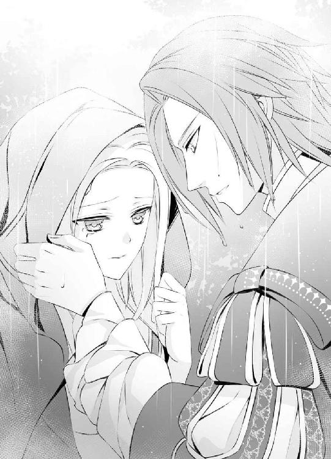
「そうか、雨か......」
涙を指で拭ってくれながら呟いたディークハルトの声は、どういった感情でか震えているように聞こえた。いくら拭っても止まらないブランシュの涙を、それでも懸命に拭きながら、ディークハルトの顔が近づいてくる。今にも鼻と鼻が触れてしまいそうなほどまで近くに寄られたことは初めてで、ブランシュがどきりと胸を跳ねさせた時、唇に唇が重なった。
（え......？）
いったい何が起こったのかわからず、ブランシュは瞳を大きく見開いた。唇に彼の柔らかな唇の感触がある。それはブランシュがこれまで体験したことのない感覚で、抗うことも忘れて、ついされるがままになる。
「んっ......」
長く重なった唇は、離れたかと思うとまたすぐに重なってきた。ひょっとしてこれは口づけなのではないだろうかと、ブランシュは靄がかかったような頭の隅でちらりと思う。
親子や兄弟などの近しい間柄の相手と、もしくは愛しあう男女の間で交わされるものだと知識では知っていても、これまで経験がない。ブランシュには挨拶で頬に口づける相手さえも、今までいなかった。それなのにこうしてディークハルトと唇を重ねている状況が信じられない。
「ん......っ......ぁ」
角度を変えて何度も唇を重ね直され、ブランシュはその合間に慌てて呼吸をしているような状態で、塞がれた口からおかしな声が漏れてしまう。
「んぅ......ぁ......んっ」
溢れる涙を拭ってくれていたはずのディークハルトの手は、いつに間にかまたブランシュの背中に回っていた。先ほど抱きしめられていた時よりも明らかに強い力で、彼の身体に身体を押しつけるようにして抱きすくめられる。
「う......んっ、あ......」
これほどぴったりと誰かと身体を密着させたことも、唇を重ねたこともこれまでになく、最初の驚きが引くとブランシュはたまらなく怖くなった。ディークハルトの胸を叩き、首を激しく左右に振って、なんとかその唇から逃れる。
「......ク！ ......ディーク！」
しかし唇は離れても、抱きしめる腕は解いてもらえなかった。
「だめ！ 放して！」
これほど自分と密着してしまい、彼は大丈夫なのだろうか──それが怖い。今まで誰からも受けたことがなかったため、口づけもつい受け入れてしまったが、それを心から後悔する。
「どうしよう......どうしよう、私......！ ね、お願い、ディーク！ 放して！」
完全に混乱しきっているブランシュの首もとに、ディークハルトは顔を伏せてきた。
「あなたが何を心配しているのか、やっとわかった。自分に触れたら俺が死ぬとでも思っているのか？ 大丈夫、ブランシュ。そんなことは起こらない......絶対に起こらない」
「でも！」
これまで信じてきたものを、生きてきた世界を、あっさりと否定されても簡単には信じられない。半狂乱のブランシュの頬を、ディークハルトが大きな手で包み込み、優しく撫でる。
「俺に口づけられるのがいやなら、本気で抵抗しろ。でもそれ以外の何かが理由なら、抵抗しないで受け入れてくれ。大丈夫だ、ブランシュ......あなたのその不安は俺が全部取り除いてやる。身を以って何度でも証明してやる。ブランシュ、俺は大丈夫だ」
「あ......」
心に染みるようなその声に、ゆっくりと伏せられた切れ長の深緑の瞳に、つられるようにブランシュも瞳を閉じてしまった。ほんの先ほどまで唇の上に感じていたディークハルトの唇の感触が、実際のものとしてまた身体に刻まれる。
「ん......んっ......」
宥めるように頬を撫でながら、ゆっくりと何度も唇を重ねられた。それはブランシュの身体からすっかり力を奪ってしまうほど甘美で、ふらりと倒れそうになったブランシュは、そうすることをあれほど怖がっていたはずなのに、自分からディークハルトの胸に身体を預けてしまう。
「んっ......ふぁ......ぁ」
これほど身体を密着させては彼に災いが降りかかるのではないかと、心配しているような余裕もなかった。力の抜けた唇の隙間から侵入してきた彼の舌に深く舌を絡められ、呼吸さえ奪うように激しく吸い上げられる。
「んっ、ん......んう」
上顎も歯の裏も、舐められていないところはもうどこにも残っていないほどに口の中を蹂躙し尽くされて、ようやく長い口づけから解放された。
「はあ......はっ......あ」
ディークハルトの胸に顔を伏せ、肩で大きな息をくり返すブランシュの耳もとに、彼は静かに語りかける。
「俺に話してくれ、ブランシュ......あなたが不安に思っていることを全部。これまで苦しんできたことも......」
「はい......」
それからブランシュは、長く心の中に抱えていた痛みを、全てディークハルトに打ち明けた。
雨と風が激しい中でのことだったが、木々の繁みに守られ、隙間もないほどにぴったりと抱きあっている二人には、互いの胸の鼓動がかなり早くなっていることも含め、どれほど小さなものでも、相手の声だけはしっかりと聞こえた。
ブランシュが長い自分語りを終えた時、雨足は少し弱くなっていた。
「それじゃあこれまで、自分に関わる者は不幸になると、ずっとそう思っていたのか？」
「はい。そういうふうに教えられましたし、実際に私を生んだ母も育ててくれた乳母も、亡くなってしまいましたから......」
「しかしそれはただの偶然じゃないか？ そもそも俺の国では、白髪・白目の者を不吉とする迷信はない。まあ、珍しいことには変わりないが......」
「そうなのですか？」
思いがけない話に、ブランシュは瞳を瞬かせた。
確かにディークハルトには、ブランシュを恐れている様子はない。それは初対面の時からそうだった。一目見ただけで付近の住民に逃げられたこともあるブランシュの腕を、自ら掴みに来たのだ。
「俺の国とは......？」
「ああ、ウィスタニア帝国だ」
「ウィスタニア帝国！」
思っていたとおりの国名を出され、ブランシュは感嘆の息を吐いた。それではやはりディークハルトは隣国から、毎日この場所まで通ってきていたのだ。
「おかしなことに、ほぼ真逆の言い伝えならウィスタニアにもある。白髪・白目の聖王女が、国を繁栄に導くというものだ。公にはされていないが、ロアージュ神聖国には今、その聖王女がどこかに隠されているという噂があって、俺はあなたに会いに来た。探し出して必ず花嫁にしようと思っていた」
「そうだったのですか......」
彼がこの離宮を訪れた理由を初めて明かしてもらい、ブランシュは驚くばかりだった。『聖王女』という呼称を、ブランシュは知らない。そういえば出会ったばかりの頃、しきりとディークハルトが自分にそう呼びかけていたことを思い出す。
「ごめんなさい。私はその『聖王女』ではありません。この容姿のせいで、神聖国の王女と認められていないので......」
これでもうディークハルトにとって自分は何の価値もないのではないかと胸を痛めていると、肩を抱いて彼のほうへ引き寄せられる。
「それは単にもともとの目的だ。あなたと会って、花嫁にしたいという気持ちはますます強くなったが、それはあなたが『聖王女』かもしれないからじゃない。ただ、あなただからだ......」
「ディーク」
抱きしめてくれる腕に縋るように、ブランシュは頬を押し当てた。
「恐ろしい外見だなどという言葉に惑わされず、ここまで来てよかった。おかげであなたに会うことができた。俺はこれからも、誰の言うことにも惑わされず、自分の目で見て、自分で感じた事実だけを信じる......あなたに会いにきたことが、これまで生きてきた中で一番、自分を褒めてやりたい決断だ」
「ディーク......」
頬に頬を寄せるようにして顔を近づけられるので、ブランシュは鳥の羽のような睫毛をそっと伏せる。ディークハルトと静かにまた唇を重ねて、そうできる幸せを噛みしめた。
「............っん」
お互いの気持ちを再確認するかのような口づけの後、ブランシュの白金色の髪を撫でながら、ディークハルトが問いかけてくる。
「俺の花嫁になってくれるな、ブランシュ」
「......え？」
「あなたが俺の求婚を退け続けていたのは、その悪い迷信のせいなのだろう？ それがわかって心底ほっとしている......原因がそれなら、そんなものは気にしなくていいと、何度でも言えるからな。でももし本当に俺を嫌っているのなら、そろそろ諦めなければならないと思っていたところだ......さっきも言ったように、俺はあなたを不幸にしたいわけじゃない。幸せにしたい。できれば俺の手で......」
「ディーク......」
「返事は？ ブランシュ」
できることなら今すぐ頷いてしまいたかった。しかしブランシュには、自分が傍にいればディークハルトを不幸にしてしまうかもしれないという恐れ以外にも、まだ気になることがいくらもある。とても彼のように、自分の気持ち一つで行動できるほど強くはなれない。
「でも私......」
心の中にある不安を言葉にするべきかブランシュが悩んでいると、それに先んじてディークハルトが口を開く。
「あなたはただ、自分の気持ちのままに返事をしてくれればそれでいい。ロアージュ神聖国への連絡も、話しあいも、必要なことは全部俺がやる。そうと決まったら、もちろん正式に使者を立てて、求婚もする。ここからこっそりとあなたを連れ去るのではなくて、ちゃんとした手順を踏んで花嫁として迎える。祖国と家族のために朝夕の祈りを捧げる時間は、俺の国へ来てからも確保すると約束しよう。なんならあなたのための礼拝堂を建ててもいい。大勢の人間に囲まれるのが苦手なら、ここと同じような静かな環境の場所に住めばいい。それがどんな辺境の地でも俺も一緒に住む。仕事にはそこから通えばいい。現に今もそうしているようなものだからな......離れたくない人がいるのなら連れていけばいいし、持って行きたいものはなんでも持っていっていい。他に希望は？」
まくしたてるように話した後、最後にもう一度顔をのぞき込んで訊ねられる。ブランシュの迷いなど、全て見透かされてしまっているかのようなその笑顔が眩しい。
それだけの条件を並べられれば、さすがにもうブランシュがつけ足すことはなかった。
「ないです」
首を横に振ると、ディークハルトはすっと表情を引き締める。
「よし......ここからが一番大切だ。あなたの容姿のことや、それにまつわる心配や問題、自分が今置かれている状況などを全て抜きにして、ただあなたの気持ちを問いたい......俺の花嫁になるのはいやか？」
「............」
ディークハルトの言うように、全ての問題を抜きにして、ただブランシュが自分の気持ちと向きあうのならば答えは簡単だった。
「......いやなはずないです」
勇気を出して初めのひと言を口にすれば、後は次々と本音が口をついて出てくる。
「何も気にせずそうなれたらどんなにいいだろうと......何度も思いました。でも私には無理だと、いつも諦めていました」
「無理じゃない」
「ええ。あなたがそう言うのなら本当に大丈夫なのだろうと、今はもう信じることができます......ディーク。もしそれが許されるのならば、私はあなたと一緒にいたい」
気持ちの真剣さを表すように、胸に縋る手につい力がこもってしまう。
「あなたの花嫁になりたいです」
「よく言った」
ブランシュの白金色の頭を胸に抱きこむように、抱きしめてくれている腕に一瞬ぎゅっと力がこもる。それからまた腕を緩めて、ディークハルトは腕の中のブランシュの顔をのぞき込むようにして、口づけた。
「必ず幸せにする」
「はい......はい」
幸せというものを果たして自分が望んでもいいのか──心の奥に根強く巣くう不安を、今だけは忘れるように努めて、ブランシュはその口づけを誓いの印として受け止めた。
二人がお互いの気持ちを確認している間に、いったん弱まった雨はまた強くなった。約束どおりブランシュを館まで送り届けてくれたディークハルトが、雨の中、湖の畔で夜を明かすと言うので、ブランシュは思わず引き留める。
「だってまた雨が強くなっています」
「だが雨の夜に馬で帰るのも危険だからな......やはり夜が明けるまで待ってから帰る。繁みの傍にいればそれほど濡れないだろう、じゃあ」
今にも駆け出して行ってしまいそうな腕を、ブランシュは夢中で引いた。
「館に泊まってください。客間を用意します」
「え？ でも......」
戸惑う様子のディークハルトの腕を掴み、少し顔を伏せながら説明する。
「使用人たちはほぼ通いなので、夜は私の身の回りの世話をしてくれるポーラと、庭師と、私の三人しか館にはいません。庭師のエルマーは、高齢なのでもう寝ていると思います。ポーラは......ディークの話をちゃんとしたことはないけれど、きっと知っているので、客間もすぐに準備してくれるはずです。だから......」
「知っているって......え......ちょっと待て......それはいったいどういうふうに？」
ディークハルトが珍しく動揺している様子なのを意外に思いながら、ブランシュは軽く首を傾げる。雨に濡れた白金色の髪がぱらりと揺れる。
「たぶん、ディークが毎朝私を湖の畔で待っていたことと、少しの時間を二人で過ごしていたことぐらいは......いけなかったですか？」
急に不安になりブランシュは問いかけてみたが、ディークハルトの動揺はそういったものではないらしい。
「いや、知られていたら困るというわけじゃない。ただ知っていてあなたが湖へ行くのを止めなかったということは、そのポーラという侍女は、それを黙認していたということか？」
「......そうだと思います」
答えていてブランシュも改めて気づかされた。それではポーラは、ブランシュがディークハルトと会うことを悪いことだとは思っていなかったのだ。
常にブランシュのために動いてくれているような侍女なので、そのポーラが止めずに行かせてくれていたということは、それがブランシュにとっていいことだと判断していたとも解釈できる。
（ポーラ......？）
その意図を確かめるためにも、一度ちゃんと彼女に話をしなければと思った。しかし──。
「だが今、改めて顔を合わせるのも気まずいな......」
ディークは困ったようにぽつりと呟く。
「俺を認めてくれていたのなら尚更、これまでのお礼とちゃんとした挨拶は、できれば正式に結婚を申し込みに来た時にしたい......」
何かを思案するように宙を仰ぎ、それからおもむろにブランシュへと視線を戻した。
「だからブランシュ、今宵はよかったら、あなたの部屋へ泊めてもらえないだろうか？」
「え？ ......ええっ？」
何気なく聞き返してから改めてその言葉を理解し、ブランシュの白い頬は真っ赤に染まった。
「でも！ あの......っ」
焦るブランシュを落ち着けようと、ディークハルトが説明を足す。
「いや、ただ部屋の隅においてくれるだけでいい。特別な準備は何もいらない。繁みの傍で夜を明かすつもりだったのを、あなたの部屋の隅でさせてもらうだけだ。何も迷惑はかけないようにする」
「でも、客間でちゃんと休んだほうが......」
「その準備をしてもらうのが申し訳ないからな......それにあなたの大切な侍女に初めて会うのに、びしょ濡れじゃ情けないだろう。俺にも少し格好つけさせてくれ」
「あ、着替え......エルマーのものでよければ借りてきます！」
すぐにでも駆け出していこうとするブランシュを、ディークハルトが呼び止めた。
「ブランシュ！ それよりも部屋へ......！」
ブランシュは毛先から雨が滴る長い髪を翻らせてふり返る。
「私の部屋は、湖に面した南側の一番奥です。先に行っていてください」
自室へディークハルトを連れていくのが恥ずかしく、手短に場所を説明すると、急いで背を向けた。どくどくと大きく心臓が鳴っている。
庭師の部屋へ入ると寝ている老人を起こさないように気をつけて、そっと着替えを一組借りた。
夜の廊下を自室へ急いで戻り、扉を開けた瞬間、ブランシュは上げそうになってしまった悲鳴を慌てて飲み込んだ。
「きゃ......！」
こちらに背を向けたディークハルトが、ちょうど濡れたシャツを脱いでいるところだった。見事に筋肉のついた広い背中がすぐ目の前にあり、ブランシュは目のやり場に困る。
「あの......」
「ああ、もう来たのか......先に濡れた服を脱いで乾かし始めようとしていたんだが、思ったより早かったな」
顔だけこちらをふり返っていつものように笑いかけられても、焦りがいっそう大きくなる。
「あの、これを......」
「ああ、ありがとう」
着替えを手渡すのにもびくびくしてしまい、ディークハルトが受け取るか受け取らないかのうちに慌てて手を引いたので、声を立てて笑われた。
「ははは、なんだそれは......俺は猛獣か？」
「だって......！」
この離宮で育ったブランシュは、ごく限られた人間としか会ったことがない。ポーラや庭師や使用人を除けば、後は月に二度ここを訪れるガルニエぐらいだ。その中に若い男は存在しなかった。
接し方でも戸惑う部分が多いのに、裸の身体などどこへ目を向けていいのかわからない。俯いているうちにディークハルトの明るい声が響く。
「よし、着替え終わった。でも、やはりちょっと小さかったな......」
「あ......」
声につられて顔を上げたブランシュは、庭師のシャツが肘の少し下までしか覆っていないディークハルトの腕を見て、表情を和らげた。
「本当ですね」
庭師は小柄な老爺で、ディークハルトはたくましい若者なのだから当然だ。肩のあたりは窮屈そうなのに、身体周りはちょうどいいところを見ると、小太りの庭師と違い、ディークハルトの身体はよく鍛えられて引き締まっているらしい。
「............」
先ほどちらりと見た背中も確かにそうだったと思いかけ、ブランシュはぶるぶると首を振る。
（私ったら何を考えているの？）
その一連の動作を、ディークハルトは楽しそうに見ている。
「あなたも着替えたらどうだ？ そのままでは風邪をひく。それともここで湯浴みをするか？俺ならのぞかないように努力するから」
「あ......」
確かに雨で濡れた身体を温めるには湯浴みが一番だが、同じ部屋にディークハルトがいる中でできるはずもない。ブランシュは自分のぶんの着替えを腕に抱え、いったん隣室へ行くことにした。
「湯浴みは......いいです。私は隣の部屋で着替えてきます」
「そうか、それは残念だ」
「ディーク！」
軽口に見送られて部屋を出て、隣室で着替えてまた部屋へ戻ると、ディークハルトが暖炉に火をおこし、室内を暖めてくれている。
「ああ、そういう格好を見るとやはりどきりとするな」
暖炉の前の椅子に座っていたディークハルトに、これまで見たこともないような表情を向けられ、ブランシュのほうこそどきりと胸が跳ねた。熱を帯びたような眼差しが、じっと自分に注がれる。思わず着たばかりのゆったりとした夜着の胸もとを、そうとは意識せずにかきあわせてしまう。
「どうぞ」
沸かしていたお湯で淹れてもらったお茶のカップを手渡され、両手で包み込むように握りながらも、ブランシュはディークハルトからは一番離れた窓際の椅子に座った。
「ありがとうございます」
その様子をふり返って笑われる。
「そんなに警戒しなくても、無茶なことなどしない。いや......あなたが気にしているのはそういうことではなかったな」
おもむろに立ち上がるとカップを手に、彼はブランシュのすぐ傍へとやって来た。
「あまり傍にいると俺が不幸になるかもしれないと......また怖くなったか？」
「あ......」
自室の扉を開けて彼の姿を認めた瞬間、脳裏を掠めた思いを見事に言い当てられ、ブランシュはうなだれた。
「......はい」
「それは単なる迷信だと、さっき身を以って教えたつもりだったが......」
伸ばした指先で唇に軽く触れられ、湖の畔で何度もディークハルトと口づけを交わしたことを思い出す。
「ごめんなさい」
それでも胸に深く刻まれている不安は、簡単には払拭できない。
王家に不幸があるたび、神聖国の政治情勢が不穏になるたび、身近にいてくれた人がいなくなるたび、ブランシュはガルニエに悲しそうな表情で告げられた。
『残念なことです、ブランシュ様』
朝夕の祈りが足りないのかと思い、その時間を長くしても、自分自身の生活を厳しくしても、状況は変わらない。
『残念なことです、ブランシュ様』
せめてこれ以上、身近な存在を失うことだけは避けたくて、もう何年もポーラにも触れないように気をつけてきたのだ。それを突然変えようとしても、そうすぐには改まらない。
唇に触れた指からも身を引いたブランシュを見て、ディークハルトが問いかけてきた。
「何度でも俺が証明してやると言っただろう......なんなら今すぐ証明しようか？」
自分が手にしていたカップをいつの間にか近くのテーブルへ置いていたディークハルトは、ブランシュの手からもそれを取り上げる。
「あ......」
背後にあった窓に両手をつかれ、ブランシュはディークハルトの腕と腕の間に閉じ込められるような格好になった。
「やめて、ディーク......」
怖くて身体が震え始める。これほど自分に近づいて、彼は本当に平気なのだろうか。突然苦しみ出して、命の危険に晒されたりしないだろうか。いったん悪い想像を巡らし始めると、もう切りがない。
「ブランシュ......」
顔を斜めにして近づけてきたディークハルトの胸を、ブランシュは拒絶するように強く押し返してしまった。
「やめてください！」
口づけを中断された彼との間に、いつになく重い空気が流れていることを感じる。これまで聞いた中でもかなり低い声で、ディークハルトが問いかけてくる。
「それは口づけを......か？ それともあなたの不安を取り除こうとすることを......か？」
ブランシュは懸命に首を横に振った。
「どちらも......です。どちらも私にとっては同じことです」
「しかしブランシュ、それではいつまでもあなたの世界は変わらない。この館を出て俺の花嫁になっても根本は同じだ。自分は傍にいる者を不幸にするかもしれないと怯え続けて、一生を過ごすつもりか？」
「だって本当にそうだもの！」
張り上げた声と共に、それまで懸命にこらえていた涙も溢れ出してしまった。ぽろぽろと透明な涙をこぼしながら、ブランシュはディークハルトに自分の思いをぶつける。
「お母さまが亡くなったのは私のせいです！ デボラが流行病に罹ったのも、それが治らなくて亡くなったのも私のせい......お父さまが国の統治に昔のような情熱を持てなくなってロアージュ神聖国がじわじわと衰退しているのも、弟の身体が弱いのも私のせい......全部私が、白目・白髪で生まれたせいなのです！」
ブランシュ自身はごく当たり前のことを言っているつもりなので、それが他人から見て、どれほど歪んだ考えなのかという自覚はない。それなのにディークハルトに憐れみ交じりの視線を向けられ、憤りの思いが大きくなる。
「私は世界が変わることなんて望んでいません......望んでいるのはただ、変わりのない日々です。昨日と同じように今日が過ぎる。ただそれだけのことがどれほど嬉しいか......それが理解できない人に、私のことはわかりません！」
激しい拒絶の言葉をぶつけて、ブランシュは顔を伏せた。
ディークハルトは何も言わない。ブランシュの強情さに呆れてしまったのだろうか、これまで散々心を砕いてくれたのに、そのすべてを突っぱねるような言葉に失望してしまったのだろうか。
沈黙に耐えかねて顔を上げた瞬間、ブランシュは大きな手で顎を掴まれて動けないように固定され、そのまま噛みつくように激しく、ディークハルトに唇を塞がれた。
「んっ？ んんっ！」
逃げようとしても、強引に顔を上向けられる。呼吸を奪うように深く口づけられて、絡めた舌を吸い上げられる。
「んっ、ふう......っん、......ぁ」
湖の畔で彼とは何度も口づけたが、こんなに激しく自由を奪われるようなものではなかった。ブランシュの様子を見ながら徐々に深めていくようなもので、どれだけ手加減して、大切にされていたのかと身を以って知る。
「んんっ......う、んっ......」
呼吸がうまく継げず、唇の端から淫らな声が漏れるのを止められない。口の中をぐちゃぐちゃにかき混ぜられながら、たくましい腕に抱きしめられる。
「んっ......ん、ぁ......っ」
必死に押し返そうとする腕ごと抱きしめられ、そのまま身体を椅子から抱え上げられてしまった。手足をばたつかせるブランシュをものとせず、ディークハルトは椅子のすぐ横にある寝台へと運ぶ。
「んう......うっ」
寝台に寝かされ、その上に彼も身体を重ねてきた。いつも横になった時に眺めている天井の模様が、ディークハルトの背後に見え、ブランシュは混乱する。
「やっ......あ、ディーク......やめて......」
解放されたばかりの唇で切れ切れに懇願を重ねたが、ディークハルトはブランシュの上に重ねた身体を除けてくれなかった。それどころか夜着の胸もとを乱し、脱がせてしまおうという素振りをみせる。
「何を......？ あっ......や、だめ......ぇ」
胸もとを押さえようとしたブランシュの手ごと夜着が強引に引き下ろされ、真っ白な肌がディークハルトの眼下に晒された。しかし彼の表情はぴくりとも変わらず、そのことがかえって怖い。
「ディーク......やっ、あっ」
首筋に柔らかな何かが押しつけられた感触があった。それが彼の唇だと悟り、ブランシュは悲鳴を上げて抗う。
「やっ、やめて......いやあっ」
のしかかってくる身体を押し返そうとした細い腕を掴み、唇を首筋から胸もとへと移動させながら、ディークハルトは語る。
「自分が関わることで相手を不幸にしてしまうと、どうしてもあなたが不安になるのなら......それは間違いだと俺が何度でも教えてやる。誰よりも親密に関わって、あなたにそんな呪いのような影響力などないと証明する。いやなら本気で抗ってくれ、これから他の誰にもできないような関わり方をするから......」
「え？ ああっ......」
大きく瞳を見開くブランシュの胸の膨らみのすぐ傍に、ディークハルトは唇を移動させる。ブランシュは緊張に身体を硬くする。
「やっ、ああっ」
「俺の花嫁になると言ってくれたあなたに、俺にしか許されない関わり方をする」
まるで言葉を肌に刻むように、唇をまったく離さずに言い切り、それからディークハルトはブランシュの胸の膨らみを軽く吸った。
「あっ、いやっ......」
人よりも白い肌は、それだけでつきりとした痛みを感じ、赤い鬱血の痕を残す。ディークハルトの唇が離れた瞬間、それがブランシュの目にもくっきりと見え、どくどくと胸の音が大きくなった。
「やっ、だめ......」
彼がこれから何をしようとしているのか、ブランシュにもなんとなくはわかる。本来は夫婦となった男女がおこなうはずの行為を、強行しようとしているのだ。それが具体的にどういうことかはわからないが、確かに彼の言うとおり、他の誰もできないような親密な関わり方には違いない。
「だめです、ディーク......やめて......あっ......」
怖いからなのか不安だからなのか、頭に響くほどにどくどくと音を大きくした心臓が、今にも胸を突き破って飛び出してきそうな気がする。しかし実際にそこにあるのはディークハルトの赤金色の頭で、自分の素肌の上にそれが伏せられていることが信じられず、ブランシュは大きく呼吸を乱す。
「あっ、あっ、あぁ......」
ディークハルトの唇は、初めてブランシュの唇を奪った時のように、白い肌を丁寧にたどった。滑るように移動し、時々軽く吸い上げて、様々な刺激でブランシュの初心な肌を刺激する。
「あんっ......あ、や......」
肌は震え、粟立っていると自分でもわかっていた。
「怖いか、ブランシュ？」
全ての動きは止めないままにディークハルトに問いかけられ、ブランシュは必死に首肯する。
「はっ、はい......は......ぁ」
「それは、今すぐにでも俺の心臓が止まってしまいそうで？ それとも俺にこうされることが？」
「あ......ぁ、どちらもです......っん」
「そうか......だったら、俺にされていることにもっと意識を集中させて、他のことなど何も考えられないようにしてやる」
物騒な宣言と共に、ディークハルトの手が再びブランシュの胸もとに伸びた。途中まで晒された状態でディークハルトの口づけを受けていた胸の膨らみが、完全に晒されるまでに夜着の襟もとを引き下げられてしまう。
「やっ！ あっ......ああっ！」
白い胸の膨らみを丹念になぞっていた唇が、明らかな意志を持って、その先端でかすかに色づく小さな突起に寄せられた。そこを舌で舐められ、唇で挟まれて上下に揺さぶられると、激しい感覚がブランシュの身体を突き抜ける。
「やっ、あん......だめ！ いやぁ......あっ」
他の部分に唇を寄せられるのとは、衝撃の大きさも、感じるものもまるで違っていた。むき出しになった神経に、直接触れられているかのような気がする。吸われても舐められても刺激が強すぎて、ブランシュは身体をがくがく揺らして大きな声を上げてしまう。
「いや......ディーク......そこ......っ、あ......やっ、あんっ」
自分と関わることで彼に何か不調が起こるのではという考えが、ディークハルトの思惑どおり、今だけはブランシュの頭から吹き飛んだ。今はそれよりも、身体に与えられる感覚が強すぎて、それを受け止めるだけで精いっぱいだ。
その場所を誰かに触れられるのは、もちろん初めての経験だった。誰に触れられてもこれほど耐えがたい思いがするのか、それとも相手がディークハルトだからなのか、ブランシュが確認することはおそらく今後もない。
ディークハルト以外にこういう行為を許すなど、考えることもできないし、おそらく彼も許さない。相手がディークハルトだから、こうして本来隠しておくべき素肌に淫らに触れられても、かろうじて正気を保っていられた。
たった一人──花嫁にしてほしいと自ら願ったほどの人だから。
だからこそ決して失いたくないのに、こうして濃密に触れあうことで彼に何かが起こることが怖いのに、ディークハルトはブランシュのその恐れを強く否定する。それを間違いだと理解させるための行為に、ますます拍車がかかる。
「やっ、あっ、ああっ」
両方の胸の膨らみの頂点を交互に舐められ、ブランシュは大きく背をしならせて悶えた。恥ずかしいので大きな声など上げたくないのに、淫らな声が止まらない。
「あんっ、やっ......あっ、あ......」
ディークハルトの手はブランシュの動きを利用して、夜着を更に脱がせようとしているようだった。剥き出しになった胸の膨らみから、その下の白い腹、細くしまった腰と次々にあらわにされ、ブランシュは焦りを覚える。
「やっ、だめ......ディーク！ やめて......ぇ......」
それ以上脱がされては、誰の目にも晒してはならない部分まで、彼の眼下にさらけ出すことになってしまう。なんとしてもそれだけは阻止しようと、ブランシュはうまく繋がらない言葉を必死で紡ぐのに、ディークハルトは手を止めてくれない。
ブランシュがもっとも身悶えしてしまう胸の先端の突起を更にねっとりと舐め上げながら、夜着をするりと腰の下まで引き下ろしてしまった。
「あっ、あっ、や......見ないでぇ......」
もう休むだけなので、身体の線を整えるような造形下着は身に着けておらず、ただ下半身を覆うだけのドロワーズを穿いていたブランシュは、それをあらわにされてしまい、ぽろぽろと涙をこぼす。
胸の膨らみに長く顔を伏せていたディークハルトは、ようやくそこから顔を上げ、慰めるようにブランシュの涙に唇を寄せた。
「泣くな、ブランシュ」
「だって......あ、だってぇ......」
あられもない格好にされ、むき出しになったままの胸の膨らみは、ディークハルトの唾液に濡れて淫らに光っている。それを恥ずかしく思いながらも、ブランシュにはどうする力も残っていない。
いつの間にか全身からすっかり力が抜けていた。寝台の上に力なく投げ出した腕を持ち上げようとしても、それさえ億劫で、今強引に彼に何をされても、そのまま受け入れることしかできないだろう。
しかしディークハルトは、そんなブランシュを力ずくでどうにかするつもりではないらしい。頬を伝う涙を吸いながら、耳もとに問いかけてくる。
「いやか？ ブランシュ」
彼に胸を弄られながら何度もそう叫んでいた自分を思い出し、羞恥に顔を赤らめながらブランシュは頷く。
「はい......」
「それは、こうして俺に触れられるのが？ それとも俺が死んでしまうのが？」
「あ......」
その発想がいつの間にかすっかり頭から抜け落ちていたことに驚き、ブランシュは目を瞠った。あれほど心を蝕んでいた思いなのに、ディークハルトの生死に関する恐れを、今の自分は束の間でも忘れていた。代わりに感じていたのは、全身に広がる耐えがたい感覚と、醜態を彼の前で晒してしまうことへの羞恥だ。
それをできるだけ正確に伝えようと、ブランシュは力なく首を左右に振る。
「違っ......どちらも違......ます......ただ、恥ずかしくて......」
今、何よりも大きいのはその気持ちだった。それを正直に口にすると、ディークハルトの声音が少し優しくなる。
「かわいいことを言って......」
何度か頭を撫でてくれた手が胸の膨らみに下り、豊かな丸みを手のひらですくい上げるようにして、強弱をつけて揉んでくる。
「あっ......や......」
「まるで清らかな女神を無理やり汚そうとしているようで、珍しく罪の意識を感じていたのに......そういうふうに言われると、もっと啼かせてしまいたくなる」
反対の手が脇腹の横を滑り、ドロワーズへと下りた。
「あっ、だめです......」
逃げようとするブランシュの腰を追い、そのままドロワーズの中へ滑り込む。
「やっ、ああっ」
下着の中へ手を入れられた羞恥で、なんとかそれをやめてもらおうとブランシュは腰を揺らめかせた。
「だめです。だめ......触らないで......あっ」
「だから、そういうふうに言うとますます触りたくなるから......あなたは少し俺のことを学んだほうがいい、ブランシュ」
「そんな！ ......あっ......」
ディークハルトはブランシュの太腿を撫で上げ、脚と脚の間に指を滑り込ませた。誰にも触れさせてはいけない場所に、長い指が到達するのを感じ、ブランシュは悲鳴を上げる。
「あ......そんな！ ......やあっ......」
指はぴたりと閉じていたあわいを開き、その内側にまで触れてきた。
「ああっ、あっ......」
ブランシュは恥ずかしさのあまり両目を瞑り、なんとかその状態から逃れようと体を捩るのに、ディークハルトは執拗に攻める。
胸を掴んでいた手を背中に回して細い身体を抱きしめ、胸への刺激は唇で続行しながら、脚の間に滑り込ませた手で秘所を丹念になぞる。
身体のいたるところを一度に刺激され、ブランシュはとてもついていけない。
「待って、ま......ああっ」
胸の頂を強く吸われながら、敏感な粘膜を何度も指で擦られた。
「濡れているな」
突起を舌で転がされながら、かけられる言葉の意味がよくわからない。
「え？ 濡れ......あ......ああっ」
「あなたの中から、蜜が溢れてくる。これは俺を迎え入れるのに必要なものだ。歓迎してくれているのか？」
「......私......わからな......です......っん」
「だろうな」
離宮に閉じ込められて育ったようなブランシュは、これまで限られた人間としか会ったこともなく、男女間のことなどわかるはずもない。それはおそらく一生知るはずのない感覚だったかもしれないのに、ディークハルトによってまざまざと身体に刻まれていく。
「だめです......あっ、こんな......」
熱い蜜をますます溢れさせようとでもするかのように、入り口を撫でていたディークハルトの指が、胎内にかすかに侵入してきた。ブランシュの身体はそれを易々と受け入れてしまい、本人は大きく瞳を見開いて狼狽する。
「そんな......！ あっ、ああっ」
自分の身体の中に他人が入ってくるという状況が信じられない。しかもその感覚は思わず腰が揺らめいてしまうほど官能的で、自分の身体が悦んでそれを受け入れているように感じ、恥ずかしくてたまらない。
「だめ......もう、や......」
体を捩って逃げようとしても、体重をかけて抑え込まれ、更に奥まで指を進められた。緩く出し入れされ、下腹の奥から湧き上がってくるようなぞくぞくする感覚に、ブランシュは激しく首を左右に振る。
「やっ......やんっ」
「ブランシュ」
顎を掴んでその動きを止められ、ディークハルトに唇を塞がれた。口腔内に侵入してきた舌が、舌を絡め取ろうとする動きに、つい従順に応じてしまう。
「は、ふ......ん、んんっ」
ディークハルトと舌を絡めながら、指では深く胎内を探られていることにはっと気がつき、ブランシュは身悶えした。
「んんっ......っう、ぁ......」
他の誰にもできないような親密な関わり方を──と彼が宣言していた言葉を思い出し、火がついたかのように全身が熱くなる。
確かにこんな濃密な関わり方は、他の者ではできない。ディークハルトだけができることだ。しかしそれは、程度で言えば、実際にはまだ軽いものに過ぎない。その事実を、ディークハルトが改めてドロワーズに手をかけたことで、ブランシュは思い知る。
「ん......な、に......？」
ブランシュの胎内から長い指を引き抜いたディークハルトは、そのまま一気にドロワーズを下げた。
「やっ......いやっ......！」
指の侵入を許し、溢れる蜜をかき出されて、太腿まで濡れてしまっている部分を外気に晒され、ブランシュは恥ずかしさに身体を捩る。
「いや......やん......っ」
しかしディークハルトは、ブランシュの身体を覆っていた最後の一枚であるドロワーズを、白い脚から完全に抜き去ってしまう。
そうしながら彼自身も服を脱ぎ始めたので、ブランシュは更なる焦りを覚えた。
「な、何を......？」
ディークハルトの下で、脚を大きく左右に開かされ、裸の身体に裸の身体を重ねられる。胸にも腹にも人肌の温かさを感じ、ブランシュは恐怖を思い出した。
「あっ......だめ......」
肌と肌をこれほど密着させて、いいはずがない。身体じゅうがほぼ彼と重なってしまっている。怖いと首を振るのに、それしきではもうディークハルトを制止できず、先ほど指を挿入れられていた身体の中心に、熱いものをあてがわれる。
「いやっ......」
これから何をされるのかの知識はなくても、自然と腰が引ける思いはあった。逃げようとするブランシュの腰を両手で掴み、ディークハルトはゆっくりと自分の身体を擦りつけてくる。
「大丈夫だ。俺に不幸など起こらない。あなたと一つになっても、平気だと笑ってみせる」
「一つ......？ あ、いやっ......」
意味がわからず首を傾げるブランシュの秘所に先ほどから押しつけられていた硬いものが、柔らかな粘膜を割る感覚があった。
「なっ......あっ......！」
それが自分の胎内に押し入ろうとしていることを知り、ブランシュは驚きと怯えに大きく瞳を見開く。
「ディーク！ ......いや、ああっ」
それは未開の隘路をこじ開けるようにして、ゆっくりとブランシュの胎内に侵入してきた。熱くて硬く、かなりの大きさがあるそれがディークハルトの身体の一部だとはわかるが、やはり信じられない思いがある。
「いや......いや、あっ......」
身体を引き裂かれるかのような痛みがあった。とても受け入れきれないほどの大きな熱の塊が、強引に体の中央を穿っていく。息をするのも苦しく、瞼の裏で火花が散るような衝撃を感じるのに、ブランシュの身体はそれを呑み込む。悲鳴を上げながらも、奥へと受け入れる。
「ああっ......あ、あ......っつ！」
「ブランシュ、身体の力を抜け。そうすれば少しは楽になる」
「できな......っ、わから......な......っうん」
自分の身体のどの部分に、今、力が入っているのか、どうすればそれを抜くことができるのか、ブランシュにはもうまったくわからなかった。大きなもので刺し貫かれているような部分の感覚ばかりが鋭く、その他は身体から切り離されてしまったかのように感じる。
自分の胎内に、どくどくと脈打っているようなディークハルトの身体の一部が深々と挿入っていることが、いまだに信じられない。
「あんっ、や......いや......」
自分とこういうふうに深く繋がってしまい、ディークハルトは本当に無事でいられるのかが怖かった。今にも苦しみだすのではないかと思うと恐ろしくて、ブランシュは必死に懇願する。
「もうやめ......やめ、あっ......ディーク......っ」
ブランシュの腰を持ち、その華奢な身体の更に奥までを穿とうとしていたディークハルトは、喘ぐブランシュに問いかける。
「それは俺とこうして繋がるのがいやだからか？ 他の男がいいか？」
そういうふうに訊かれれば、ブランシュは首を横に振るしかない。
「ちがっ......あなたじゃなきゃ、やっ......っあ」
他の男にこういうふうに身体を拓かれるなど、考えたくもない。
「じゃあ、こんなに親密に触れあって、俺に何かがあるのじゃないかと思うと怖い？」
「あっ、はっ......はい......だから、もう......っ」
やめてくれと涙ながらに懇願するのに、ディークハルトは仰け反る白い喉に口づけを落とす。
「だったら、やめない。あなたがどれほどいやがっても、この身体の奥まで俺のもので埋め尽くす」
「ディーク！ ああっ......っ！」
恐ろしい宣言と共に、実際に更に身体の奥までを拓かれる感覚があった。これ以上受け入れることなどもう無理だと思うのに、最奥を抉られ、ブランシュの身体はそれを従順に受け止める。
必死に拒否の言葉を紡ぐ口よりも、こんなふうに彼と親密に触れてはいけないと考えてしまう頭よりも、実際に彼を受け入れているその部分が、ブランシュの本音をもっとも正直に語っていた。
強く締めつけ、柔らかく受け止める。その中を、ディークハルトはゆっくりと大きく出入りする。
「ああっ......や、あ......っん」
引き攣るような痛みを訴えるその場所は、硬いもので粘膜を擦られるたび、身体の奥から湧き出てくる蜜で、潤いを増しつつあった。それがディークハルトの動きを滑らかにし、二人の交わりを濃密にしていく。
「はっ......はあっ......あんっ」
大きく引き出され、また大きく押し入られるたびに、身体の中を作り変えられていくかのようだ。ディークハルトを受け入れる場所として、その硬さや大きさや熱さを教え込まれているような気がする。
ブランシュの身体は嬉々としてそれを受け入れ、その感覚に馴らされていく。始めは痛く苦しいと思った行為が、今はもうぞくぞくするような感覚を生む行為でしかない。
「あんっ、あっ......ああっ」
熱い息を漏らして、縋るようにディークハルトの背に腕を回した。すると彼もブランシュの身体を抱き直してくれ、お互いを抱きしめた格好のまま、緩やかな抽挿が続けられる。
「あぁ......ああっ、ディーク......っん」
自分がどれほど淫らな声を上げているのかも、その動きに必死でついていこうとするかのように、いつの間にか彼にあわせて身体を揺らしていることも、ブランシュには自覚がなかった。
ただディークハルトが作り出す大きなうねりが強烈すぎて、他のことは何も考えられない。気づけない。置いていかれないように夢中で縋りつくだけだ。
腰を使って大きく貫かれても、涙がこぼれないように懸命にこらえ、受け止める。
「はああんっ......あっ」
彼のものを受け入れている場所は、自分の身体の一部ではないかのように感じた。激しく擦られ、何度突き上げられても、その行為を悦ぶようにディークハルトのものを受け止め、ますます濡れる。
しかし確かにブランシュの一部に違いない。その証拠にその場所から生まれた快感が、次第に身体の他の部分にも飛び火しつつある。そこを激しく突かれながら、ディークハルトの分厚い胸に押しつぶされる胸の膨らみが気持ちいい。もっともっとと互いを求めるように、絡めあう舌が気持ちいい。背中を撫でる大きな手のひらの感触にさえも肌が敏感に反応して、何度もわなないた。
「あんっ、あ......あっ、は......ああんっ」
ここではないどこかへ、意識を連れ去られそうになる。
「ブランシュ」
背中に回していた手を首筋に誘導されたので、ディークハルトの首にかじりつくように腕に力を込めた。寝台から浮いた腰を両手で掴まれ、そこに腰を打ちつけるようにして身体の最奥を穿たれる。
「はんっ、はっ、ああっ！」
がくがくと大きく揺さぶられながら、蜜を滴らせるその場所に、何度も彼を受け入れた。そのうちに何か大きなものが迫ってくるように感じて、ブランシュは怖くなる。
「あっ、あ、っだめ......あっつ」
「何がだめなんだ、ブランシュ」
「わか......ない、でも何か......あっ、ああっ」
何かの予兆のように、身体の奥がびくんびくんと引き攣る。それはつられて身体まで跳ねてしまうほどの大きな刺激で、だからブランシュはそっとしておいて欲しいのに、その場所を探るようにディークハルトが腰を使って大きく胎内を突いてくる。
「ここか？ ......それともここ？」
「ちが......ちがっ......やんっ、だめぇ......っ！」
ブランシュがひときわ大きな声を上げてしまう場所を探り当てると、そこを狙うように重点的に突き始めた。
「そうか、ここか......」
「きゃあ！ ......っ、いや......いや、ぁ......やめてぇ......！」
息も吐かせないような激しい突き上げに、ブランシュは首を振って悶える。徐々に迫るように感じていた何かの上に、否応なく押し上げられた。
「ああああんっ、あぁ......！」
びくびくと胎内が激しく痙攣し、最奥に受け入れていたディークハルトのものを強く締めつける。その場所と共に全身がこわばって、自然と背が仰け反る。
「ああんっ......あぁ......」
激しい収斂を続けている場所の奥から、熱い蜜がこれまでで一番、どっと湧き出る感覚があった。ひくつく胎内にその蜜を塗り広げようとするかのように、ディークハルトのものが大きく出入りする。
「やっ、やめ......やあっ」
ほんのつい先ほどまでとは感じる刺激の大きさが違いすぎて、少し動かれるだけで、ブランシュは鼻にかかったような声を上げて、がくがくと身体を揺らしてしまう。
「待って......や、私の身体、へん......へんです......っん」
「ああ、一度極めたからな、敏感になっているんだろう」
「極める......？ あ......」
ディークハルトの説明がよくわからず、ブランシュは瞳を瞬かせる。
「最高の気持ちよさを感じただろう？ 俺にこうされて」
言いながらディークハルトは彼のものをブランシュの胎内から引き抜き、そしてまた大きく打ち込む。
「あああっ！ あっ......やめ......てっ......あぁん」
ばちゅっと水音を響かせて身体の中央を穿ったその熱棒に、ブランシュは大きな悲鳴を上げさせられた。下半身からすっかり力が抜けるような、腹の奥がぎゅっと窄まるような、腰のあたりがぞくぞくするような、この感覚を「気持ちいい」というのかは、ブランシュにはよくわからない。
しかしディークハルトと激しい口づけを交わすようになってからその感覚を知り、先ほど胎内のある部分を何度も突かれて、その頂点に押し上げられたように感じたことは確かだ。
あまり胎内を出入りされていると、またその場所に連れていかれそうで怖く、ブランシュはディークハルトの胸に顔を埋めて懇願する。
「もう、や......怖い......っん」
白金色の頭に唇を寄せるようにして、ディークハルトが問いかけてきた。
「その『怖い』は、また極めてしまいそうだからか？」
つまりはそういうことだったので、恥ずかしさに頬を染めながらも、ブランシュは素直に頷く。
「はい......やっ......」
「よし」
ディークハルトが満足げに唸ったので、もうそこで開放してもらえるのかとブランシュは思った。しかし──。
実際にはディークハルトはブランシュの身体を抱き直し、そこからまた抽挿を再開する。
「やぁ！ ......っ、だ......だめなのにぃ......あっ」
ブランシュの訴えにも、もう耳を傾けてくれない。もう一度その頂点へ連れていくのが目的とばかりに、快感を生む場所を重点的に突かれ、震える襞を擦りたてられる。
「い、や......ああっ！ あ......ぁ......いや、あぁん」
一度知ってしまった頂点に、ブランシュが押し上げられるのは早かった。びくびくと蜜壺をわななかせて、身体をぐったりと弛緩させると、ディークハルトが嬉しげに囁く。
「だいぶ慣れてきたな。これならまだいけそうだ。たっぷりと覚えさせておこう」
「そん......な！ ......ああっ！」
その言葉を耳にしただけで、ブランシュの身体の奥ではまた新しい蜜が沸き、気持ちとは裏腹に、胎内はこれから続くだろう行為を期待するように、ディークハルトのものを強く締めつけてしまった。
その後も何度か、その「極める」ということを経験させられ、ブランシュはそのうちに疲れて眠ってしまった。それはディークハルトも同じだったようで、ブランシュが夜中に目を覚ました時、彼はすぐ隣で、すやすやと安らかな寝息を立てて寝入っていた。
ブランシュは彼の腕に抱きしめられた格好だったが、耳を押しつけたたくましい胸の奥から、規則正しい心音が聞こえ、思わず涙が浮かぶほどに安堵する。
（よかった......）
ブランシュとあれほど濃密な関わり方をしても、ディークハルトは突然の不幸に見舞われたりなどしていない。こうして無事に生きており、ブランシュの隣にいてくれる──それが何にも代えがたく嬉しい。
自分に関わったものは必ず不幸になる──その思い込みの呪縛から、ディークハルトのおかげで、ようやく一歩を踏み出せた夜だった。
翌日、ブランシュはまだ夜が明けないうちに目を覚ました。普段は窓から差し込む朝日を肌に感じ、起きるのだが、それよりもっと強い何かを間近に感じ、微睡から意識を覚醒させる。
（何......？）
瞼を開いてみると答えはすぐにわかった。すぐ近くから、強い意志を感じさせるような深緑の瞳がまっすぐにブランシュを見つめている。
「............！」
思わず悲鳴を上げそうになる前に、その瞳はよりいっそう近くへ迫った。
「おはよう、ブランシュ」
ゆっくりと唇を重ねられ、胸の音を大きくしながら、同じ言葉をブランシュも返す。
「おはよう......ディーク......」
昨夜彼と身体を重ね、今もまだ裸のまま抱きあっている状況が、とても信じられなかった。
他人と接触することにあれほど怯えていたはずなのに、それをものともせずに迫るディークハルトと濃密に触れあい、ついには身体の奥まで彼を受け入れてしまった。
それでもこうして、ディークハルトには何の変化もなく、いつものように笑ってくれることに心から安堵する。
「よかった......」
ぽつりと呟いたブランシュの白い頬に、ディークハルトが頬を寄せた。
「泣くな」
自分ではそのつもりはなかったが、いつの間にか涙が頬を伝っていたらしい。しかしそれは決して恐怖や悲しみの涙ではない。ディークハルトの無事を喜ぶ涙で、そうであることを嬉しく思うと、ますます涙が溢れてくる。
「はい......は......い......」
懸命に頷きながらも、はらはらと涙をこぼすブランシュを見つめるディークハルトの表情は、どこまでも優しかった。
「無茶はしないと言いながら、昨夜はずいぶん無理をさせてしまった......すまない。どうにかしてあなたの不安を取り除きたかったんだが、途中から己の欲望に目が眩んだかもしれない。あなたがあまりに美しくて、魅力的で......どうしても俺のものにしたくなった......悪かった」
思いがけず謝罪の言葉をくり返されるので、ブランシュは必死に首を横に振る。
「謝らないでください！ ......わかっています。私のためだって、ちゃんと......」
行為は確かに少し過ぎたものだったかもしれないが、そうまでしてもこうしてディークハルトは無事でいるということを、ブランシュに確信させてくれるものでもあった。
それに彼の動きの何もかもが、優しく気遣い、それでいて激しく求めるものばかりだったので、それを嬉しく感じこそすれ、嫌悪の思いなど微塵もわかなかった。
その気持ちをいったいどう伝えたらいいのかに迷う。
「大丈夫です。あなたが謝るようなことは、本当に何も......」
うまく紡げない言葉の代わりにせめてもと、裸の身体にまわされている腕を自分に引き寄せて頬をつけると、強く抱きしめ直される。
「そうか、そう言ってもらえるのなら、よかった」
「あっ......」
ディークハルトと今まで以上に身体がぴったりと密着し、ブランシュは顔を赤らめた。
お互いに何も身に着けていないまま、掛け布にくるまって眠ってしまっていたので、強く抱きしめられると直接全身で彼を感じる。それは今、肌が接触しているところばかりでなく、昨夜ディークハルトを深く受け入れた場所も同じで、いまだに押し入られている時の感覚が鈍く残っている。
それが恥ずかしく、身震いしたブランシュの頬にディークハルトが唇を寄せてきた。
「ブランシュ......」
身体の奥に響くような声で名前を呼ばれ、思わず吐息のような声が漏れる。
「はい......っ、ぁ......」
声に誘われるように、背中にあった大きな手が、ブランシュの素肌を撫で始めた。
「あ......ぁ......っ」
一晩ですっかり官能を覚えさせられた身体は、ただそれだけの行為で悩ましげに動き、可憐な唇は甘い声を上げてしまう。それに呼応してディークハルトの手はブランシュの身体の前面に移動し、豊かな胸の膨らみをすくい上げるように弄び始める。
「ん......んうっ」
唇を重ねられ、舌を絡められると、もう何も抗うことはできなかった。閉じあわせていた脚の間に滑り込んできた手を素直に受け入れ、恥ずかしい場所をまた指で弄られる。
「んんっ......っあ」
強く舌を吸い上げてブランシュの唇を解放したディークハルトは、すでに蜜を滴らせている身体の中心を指でかき混ぜながら問いかけてきた。
「確かに自分のものにしたつもりなのに、もう一度、またもう一度と何度も欲しくなる......すっかりあなたに溺れてしまっているな......いいか？」
熱をたっぷりと含んだ声に激しい鼓動が治まらず、身体は熱くなり、思考もうまくまとまらないが、ブランシュはディークハルトの胸に縋りつきながら深く頷く。
「は、い......ああっん」
言葉と同時に寝台に仰向けにされ、大きく脚を開かされた上にディークハルトが身体を重ねてきた。すでに熱く蕩けていた場所に熱いものが当たり、ブランシュが緊張を覚えた次の瞬間には、もう熱棒が粘膜を割っている。
「ああっ......あっ......！」
それを受け入れたのは昨夜が初めてであるのに、まるでそこに収まるのが当たり前であるかのように、身体の奥深くまでディークハルトのものが一気に押し入り、ブランシュは深く息を吐いた。
「あっ......は、ぁ......」
ディークハルトがぴったりと身体を重ねてくる。
「辛くないか？」
押し入られている圧迫感はどうしてもあるが、それに伴う痛みや苦しさなどはない。それよりも緩やかに出入りをするディークハルトのものが作り出す甘美な刺激のほうが大きく、早くも淫らな声を上げてしまいそうになり、ブランシュは必死に唇を引き結ぶ。
「大丈夫......です......っん」
「そうか。よかった」
もっと深く彼のものを受け入れられるように、更に脚を大きく開かされた。
「あ......っ......ぁ」
淫らな姿態を強いられている恥ずかしさや、こらえようとしてもどうしても漏れてしまう嬌声を聞かれる恥ずかしさはあるが、それ以外の憂いの気持ちは、今はない。
あれほど怯えていた他人との接触を、これ以上ないほどの深さで何度もくり返され、それでもディークハルトが無事でいてくれたことは、ブランシュの確かな安心となった。
この人と決めたただ一人の相手と、こうして普通の男女のように抱きあうことができる幸せを、改めて実感する。
「もう離せなくなってしまいそうだ。ずっとこうして、あなたの胎内に挿入っていたい」
情熱的な言葉を耳に囁きかけられながら、深く挿入された熱棒で身体の奥を何度もかき混ぜられた。
「あんっ......あっ......はぁ......っん」
自然と腰が揺らめいてしまい、与えられる快感を貪欲に享受する。
「何度でも、何度でも......俺のものにしたい」
襞を擦るようにして大きく出入りされ、びくびくと身体が跳ねる。深く奥を突かれると、こらえきれずに淫らな声を上げてしまう。
「あ、ああっん......あっ、あ......っ」
「ずっと傍にいてくれ、ブランシュ。俺の花嫁」
腰を寝台から持ち上げられ、更に激しく熱棒を打ちつけながら、懇願された。ブランシュは返事をしたいのに、これまでより深くなった挿入のせいで、言葉を発しようとしてもほぼ自分の喘ぎ声に消されてしまう。
「あっ、あんっ......ああぁっ！ ......は......いっ、ん」
それでも懸命に首肯すると、奥を穿つディークハルトの動きが更に激しくなった。
「俺だけのものでいてくれ」
「は、い......ああっ、ああああっ！」
執拗に刻まれる律動に耐え切れず、嬌声を上げてブランシュが背中をのけ反らせた瞬間、胎内で彼のものがこれまでになく大きく膨らむのを感じた。
「あっ、あっ......！」
耐えがたい快感と、押し上げられた絶頂の余韻に、瞳に涙を浮かべるブランシュの胎内で、それは弾けるように奔流を迸らせる。
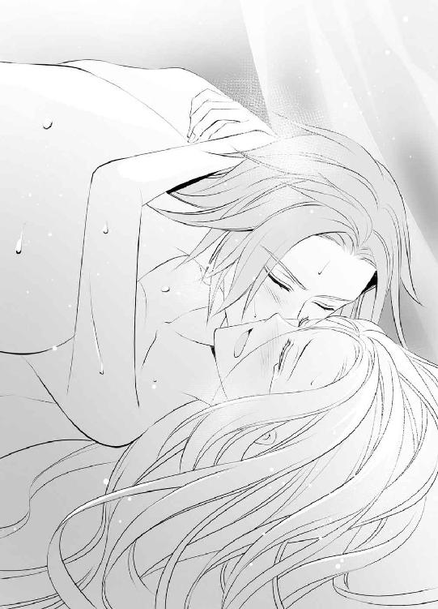
「ああっ！ あぁ......っ」
身体の奥深くに熱いものが浴びせられる感覚がし、ブランシュはまた肌をわななかせた。震える襞の隙間まで余すところなく浸食するように、それはどくんどくんといつまでもブランシュの胎内に欲望を吐き出し続ける。
「俺のものだ、ブランシュ」
これがいったいどういうことなのかよくわからないながらも、ディークハルトの言うように、自分の全てを彼に征服されてしまった感がある。それは決していやなことではなく、これまでなるべく誰とも関わらないように心がけて生きてきたブランシュにとって、涙がこぼれるほどに嬉しいことだった。
「はい、は......い......」
「何があっても、絶対に離さない」
まだ深く身体を繋いだまま、華奢な肢体を強く腕に抱きしめられながらの宣言は、ブランシュの心と身体に鮮烈に刻み込まれた。
その後、ディークハルトに手伝ってもらって身体を清め、乱れた寝具を整え、すっかり雨が上がった朝焼けの中に帰っていく彼の背中を切ない気持ちで見送ってから、ブランシュは日課のポーラの訪れを受けた。
「今日も、もう着替えてしまわれたのですね」
いつものように首を傾げながら部屋へ入ってきたポーラの目に、自分はどう映っているだろうか。普段と違うと思われなければいいが、あまり表情の変わらないポーラの顔を見ていても、その考えていることまではわからない。
「雨が止んでよかったですね」
南向きの窓を開けて、新鮮な空気を部屋の中へ取り入れようとしてくれているポーラに、ブランシュは勇気を出して声をかけた。
「そうね。あの、ポーラ......私......」
しかし、まずは何を言ったらいいのかわからない。昨夜ディークハルトをこの部屋へ泊めたこと。彼と身体の関係を持ったこと。そもそも彼の花嫁になると約束したことを話さなければならないとわかっているが、あまりに多くのことが一度にありすぎて、何から話していいのかが難しい。
「私......」
呼びかけたはいいもののその後の言葉が続かず、何度も口を開きかけては閉じてをくり返すブランシュに、ポーラのほうから話しかけてきた。
「これで、帰りは濡れずにすまれますね。もともと体力には自信があられる方でしょうが、風邪など召されることもなく、また明日も元気な姿を見せてくだされば、姫様も嬉しいのではないですか？ こちらも元気な姿をお見せできるように、今日は少しゆっくりと休まれたらいかがでしょう......姫様がのんびりされている間に、私が髪や肌の手入れを念入りにします」
心なしいつもより表情を柔らかくして語られる言葉の数々に、ブランシュは信じられないような思いだった。
「ポーラ......？」
これではディークハルトのことをうっすらと気がついているどころではない。ブランシュと彼の間にあったことを、何から何まで知っているかのようだ。
まさかという思いで大きく瞳を見開くブランシュに、ポーラが珍しく笑ってみせる。
「大丈夫です。姫様の決断は間違っていません。あの方の想いは本物だと私も思います。きっと姫様を幸せにしてくださるでしょう。おそらく傍に寄り添っているだけでお互いにそうなのだろうと、いつも遠くから拝見しながら思っていましたから......」
「ポーラ！」
ブランシュは今度こそ、大きく両手を広げて彼女に抱きついた。ポーラはその身体を優しく抱き止め、背を撫でてくれる。
そうすることで彼女を不幸にしてしまうかもしれないことが怖く、もう長い間避けていた抱擁だったが、それはブランシュの思い込みだと、ディークハルトが昨夜身を以って証明してくれた。
まだかすかな不安は残っているが、感謝と喜びの思いを込めて、ポーラに抱きつけることがこれほど嬉しい。
「知っていたの？ いつも見ていたの？」
涙声で問いかけるブランシュに、ポーラは頷いてみせる。
「ええ。いつかあの方の情熱が、姫様の心の戒めさえも断ち切って、自由にしてくださる日が来ればいいとひそかに応援しておりました。ですから私には何の報告もいりません。ただ一言......よかったですねと、お祝いの言葉を言わせてください」
そこでいったん言葉を切り、ポーラはブランシュの顔をのぞき込んだ。
「よかったですね、姫様......ずっとこの時が来ることを願っておりました。姫様がすべての憂いを超えて、それでも求める相手といつか出会える日を......」
「ポーラ！」
自分とあまり背格好の変わらないポーラに抱きつき、ブランシュは子供のように泣きじゃくった。ブランシュにとって姉であり、母のような存在であり、たった一人の友人であるポーラが、宥めるように背中を撫でてくれる。
「おめでとうございます、姫様」
「ありがとう......っ」
祝福の言葉に応えるのは、涙に咽ぶブランシュにはとても難しいことで、何度もしゃくりあげながらようやく感謝を言葉にすることができた。
頼もしい相談者を得たブランシュは、これから自分はどうするべきかについて、ようやく具体的に考えることができるようになった。ディークハルトの花嫁になると心に決めても、どうしたらいいのか迷うばかりだった全てのしがらみを、ポーラと話しあうことで一つずつ解決していける。
「それでは王室への報告は、私にお任せください。この離宮から出てはならないと決められているわけではないので、あの方さえよければ、姫様はもう一緒に行かれても構わないと思います」
「そうなの？」
思いがけない言葉に、ブランシュは大きく瞳を見開いた。
「私はてっきり......自分はここから出てはいけないのだと思っていたわ......」
ポーラは少し申し訳なさそうに声を曇らせながら、ブランシュに正しい説明をくれる。
「姫様がこの離宮にいらっしゃるのは、そういう理由からではありません。王都には留め置けなかったからです。ですが......」
ポーラはまだ何かを言いかけたが、それはおそらく慰めの言葉なのだと思い、ブランシュは途中で遮った。
「いいの、大丈夫。それはわかっていたから......私、ここが好きだからいいのよ。静かで綺麗で......ポーラもいてくれるし、鳥たちもいる。それに......」
もしブランシュが王都で王女として暮らしていたなら、決してあり得なかっただろうディークハルトとの出会いに思いを馳せ、きりっと顔を上げた。
「ディークと出会わせてくれた場所だもの、私、ここが好きよ。ここで暮らせたことにとても感謝しているわ」
「そうですね......」
慰めるように背を撫でてくれたポーラに、ブランシュは訊ねた。
「でも、すぐにというのはさすがに急ぎすぎではないかしら？ ディークの都合もあるだろうし......」
「あの方なら明日にでも、喜んで連れていってしまわれそうですけれどね」
「ええ......」
からかうように指摘され、ブランシュは顔を赤らめる。恥ずかしさをごまかすようにしばらくドレスの襞を指でなぞっていたが、ふとあることに思い当たり、ポーラの顔を見直した。
「そうだわ。あと三日でガルニエ様が来られる日でしょう？ そこでこのことをお話しして、いつがいいかご相談するのはどうかしら？」
これまでブランシュと王室を繋ぐ架け橋となってくれていたのは、ガルニエだ。神官という立場からも、もっともよい助言が貰えるのではないかとブランシュは瞳を輝かせたのだが、それを聞いたポーラはきっぱりと首を横に振った。
「いいえ。ガルニエ様の次の訪れを待たず、行かれて大丈夫です。後のことは私が全てうまく采配いたします」
「え？ でも......」
確かにポーラはブランシュの身の回りの世話をするたった一人の侍女として、多くの権限を与えられているようだが、だからといってブランシュが離宮を出て誰かの花嫁になるというほどの重要なことを、独断で決めていいのだろうか。
後でポーラが困った立場になりはしないかと、それが怖く、ブランシュはなかなか頷けない。
「それほど急がなくても......許可の連絡を待って、ポーラも一緒に行けるようにしてもらってからでも......」
厳しい態度だったポーラが、その言葉を耳にして少し軟化してくれた。
「私もご一緒にともし姫様が望んでくださるのでしたら、後で必ず追いかけます。どこまでもご一緒しますよ」
「ありがとう、ポーラ」
その腕に白金色の頭を寄せるブランシュに、ポーラは一言ずつ言い含めるように語る。
「だからどうぞ、何も心配なさらず、なるべく早くあの方とお発ちください。以後の始末をして、私もすぐに追いかけます」
「............わかったわ、ポーラ」
そこまできっぱりと言い切られれば、ブランシュに反対する理由はない。翌日、いつものように湖の畔に現れたディークハルトに話をし、その日のうちに彼に連れられて離宮を出ることとなった。
荷物はなく、ほぼ身体一つでの早急な旅立ちだった。
ディークハルトが乗ってきた馬に共に乗せてもらいながら、ブランシュは本当にこれでいいのだろうかと何度も背後をふり返る。ロアージュ神聖国とウィスタニア帝国の国境に位置するあの湖の離宮は、連なる岩山の陰になり、すでに見えなかった。
離宮から出たことがないブランシュにとっては、今、目の前に広がる光景さえ生まれて初めて見るものばかりだ。神聖国から遠ざかるごとに緑が少なくなり、赤茶けた地面が広がる道程は埃っぽく、気温も高いように感じる。
「あなたの肌は白すぎて、帝国の日差しに負けてしまいそうだ」
ディークハルトが頭から被せてくれた外套が日陰を作ってくれるため、ブランシュ自身はそうまで思わなかった。
「そうでしょうか？」
しかし道端の草花が萎れている様子を見ると、確かに水分が足りていない感がある。湖の畔に建ち、いつも緑が繁っている離宮で育ったブランシュには考えられない。
国境を越えて少し進んだだけでこれほど気候が変わるのかと、驚きを隠せなかった。
「帝国が特別なわけじゃない。どちらかといえば神聖国が特別だ」
「あ......」
何かの書物でか、ガルニエの講義でか、ブランシュもその話は聞いたことがある。ヴァリド神教の聖地を有するロアージュ神聖国は、様々な面において他の国々より恵まれており、その事実がより信仰を広めることにも繋がっているらしい。気候も然り、地形も然りだ。
知識としてこれまで頭の中に蓄えられていたことが、五感を通してこうして目の前に示されることは面白く、これからの生活を思うとブランシュの心は躍る。まだ見たことのない世界に胸が弾む。
しかしそれと同時に、長い間忘れてはならないと思い込んでいた自分への戒めも、思い出してしまった。
神からも祝福されたその神聖国の王女として生を受けたのに、自分は神聖国では忌むべき白髪・白目という姿に生まれついてしまったのだ。その事実だけは、たとえ祖国を出ても、今後も影のようにブランシュにつきまとう。
「どうした？」
俯いたブランシュの顎に手をかけ、ディークハルトが顔を上向かせる。深い愛情に満ちたその眼差しを受け止めるのに、自分は本当にふさわしいのだろうかという憂いも、おそらく完全には拭い去れないだろう。しかし──。
「何も......」
再び俯こうとしたブランシュを、ディークハルトは強引に上向かせ、唇を重ねた。
「んっ......」
長く呼吸を奪い、ブランシュが思わずその胸に縋るようになってから、ようやく解放してくれる。
「......は、あ......っ」
大きく肩で息をする華奢な身体を、手綱を持ったままの両手で強く抱きしめた。
「何も考えるな。気にするな......あなたのことは俺が必ず守る。あなたはただ、こうして俺の腕の中にいればいい」
「............はい」
迷いも憂いも全て受け止めるかのような言葉に、ブランシュが胸を詰まらせながら頷けば、殊更明るい声で、前を向くように促される。
「それよりもほら......最初の街が見えてきた。初めてのウィスタニア帝国、あなたのその澄んだ瞳にはどう映る？」
声に従って前を向き直したブランシュは、遥か前方に小さな家々が軒を連ねる光景をじっと見つめた。立ち並ぶ家々は、壁も屋根も茶色く、どうやら土と木材からできているようだ。石造りの離宮しか知らないブランシュにとってはそれだけでもの珍しく、瞳を凝らす。
「たくさん人がいるのですね......」
家々の間を多くの人が行き交っているのが見え、ブランシュは身体を硬くした。
抱きしめてくれているディークハルトには、その緊張がすぐに伝わったのだろう。憂いを吹き飛ばすような明るい声で笑われる。
「大丈夫だ。挨拶してこよう」
「............え？」
ブランシュが驚きの声を上げる間もなく、ディークハルトに鐙を打ちつけられた馬が、これまでより走る速度を上げる。
「あの......っ」
口を開くこともままならなくなり、ブランシュはディークハルトの胸にしがみついて顔を伏せた。
「大丈夫だ。ブランシュ」
風が頬を掠める間でも、その声だけはしっかりとブランシュの耳に届き、不安や緊張を和らげてくれる。
「はい」
ディークハルトの言うように、全てを彼に委ねてみようと決意してブランシュが瞳を閉じるとすぐ、馬は再び速度を緩めた。
おそらく街へ入ったのだろう。二人が騎乗した馬以外の馬のいななきや、人々が話をする声が一度に耳に飛び込んでくる。
「............」
大勢の人の中に入るという経験がこれまでになく、ブランシュはなかなか瞳を開けられないでいたが、馬が脚を止め、背後に座っていたディークハルトの下りる気配がするため、恐る恐る開いてみる。
「さあ、ブランシュ」
先に下りたディークハルトに手を差し伸べられたので、彼の肩に縋るようにしてブランシュも馬を下りた。しかし今度は顔を上げづらくなった。不揃いな灰色の敷石が並ぶ道路をじっと見つめていると、ぱたぱたと軽やかな足音が二人のもとへ駆け寄ってくる。
「ディーク様！ お帰りなさい」
あどけない声は小さな子供のものだろうか、ディークハルトが普段より優しい声で答えている。
「ああ......ただいま、マリー。でも俺の家はここじゃなくて、まだ半日も進まないといけない街にあるって、いつになったら覚えてくれるかな？」
問いかけには子供ではなく、また別の声が答えた。
「たぶんずっと無理でしょう。ディーク様が、すぐに「ただいま」って答えてしまうから、マリーにはわかりっこありませんよ」
「そうだな」
はははと声を上げてディークハルトと笑いあっているのは、声からしておそらく中年の男性だ。
「待って！ ひょっとしてついに、念願が叶ったんじゃないですか？ そちらはもしかして、ずっと迎えに行ってらっしゃった花嫁様......？」
「きゃあっ、すごい！」
「えっ、ついに？」
興奮した声がいくつか上がったところからすると、周囲には女性も数人いるようだ。しかしブランシュは顔を上げてそれを確認することが怖い。いつのことだったか、湖の畔に偶然迷い込んだ近隣住民が、自分の姿を見て表情を引き攣らせた顔が、目の前をちらちらする。
両手を強く握りあわせたブランシュの恐怖に珍しく気づいていないのか、ディークハルトは嬉しそうに語る。
「そうだ。俺の花嫁だ。ようやく連れてくることができた。な、ブランシュ」
名前を呼ばれ、顔を上げてみなに挨拶するように促されているのだとはブランシュにもわかった。しかし顔を上げることが怖い。
「どうした？」
屈託のない声で問いかけられ、ブランシュは決意を固めた。自分の容姿が他人から恐れられるかもしれないからと、これからもずっと下を向いて生活していくわけにはいかない。離宮を旅立って外の世界へ出た以上、人の目に晒されることは当然なのだ。
それにディークハルトの話によれば、白髪・白目の人間を不吉とする風習はロアージュ神聖国特有のものらしい。そうであれば、すでにウィスタニア帝国の領土であるこの街で、ブランシュが恐れられることはない。
しかも彼に接する人々の様子を見ていると、ディークハルトがどれほどこの街の近くの街道を頻繁に通っていたかがよくわかる。ブランシュに会うために毎日通っていたのだと思えば、その誠意になんとか応えたかった。
震える手を励まして、ブランシュは頭に被っていた外套の頭巾部分を取る。さらさらと白金色の髪が頬の横へ滑り落ちてくる。手をこぶしの形に握り直し、ブランシュはようやく顔を上げた。
「初めまして、ブランシュです」
なけなしの勇気を拾い集めて顔を上げたブランシュにとって、彼女を見た人々の反応は、背筋が凍るようなものだった。
「え......？」
「白髪・白目......？」
二人の周囲を取り囲んでいた人々が、息を呑んで立ちすくみ、ブランシュは激しい後悔の念に囚われる。
（やっぱり、髪や目の色を晒すんじゃなかった......！）
もう一度慌てて俯けてしまった顔を、今度こそ二度と上げられそうにない。アーモンド型の大きな瞳にみるみる涙が溢れ、今にもこぼれ落ちてしまいそうになる。
（もう無理......！）
踵を返してその場から逃げ出してしまおうとした時、目の前に伸ばされた腕にやんわりと抱き止められた。
「え......？ ディーク？」
みなの前でディークハルトはブランシュをそのまま抱きしめたばかりか、両腕に抱き上げて、白い頬に頬ずりさえする。
「あんまりあなたが綺麗で、みんなすっかり驚いてしまったな、ブランシュ」
「ディーク......」
決してそうではないとブランシュは思ったが、曇りのない声で彼にそう言われると、否定の言葉は出せなかった。彼が言ったことが真実ならどんなにいいかと、胸が張り裂けるような思いばかりが大きくなる。
「ディーク、私......」
「大丈夫だ。何も心配いらない。あなたには俺がついている。俺の大切な花嫁......」
瞳から溢れ出した涙に次々と唇を寄せながら囁かれるので、ブランシュは縋るようにその胸に顔を埋めた。
「はい、ディーク......」
白髪・白目という自分の容姿に、街の人々が驚いたように静まり返り、身動き取れないでいることはブランシュにもわかっている。
しかしディークハルトの腕に抱きしめられれば、自分は確かに、奇異の目で見られる容姿ではなく、彼に愛されるただの花嫁だと実感できる。それに徹しさせてくれるこの人と出会えたことを、ブランシュは何度でも神に感謝せずにはいられない。
（女神ファルーナ......本当にありがとうございます）
口には出せない言葉の代わりに、声を殺して泣き始めたブランシュの頭に、ディークハルトが頬を寄せてくれた感触がした時、思いがけない方向からあどけない声が響いた。
「ディーク様のお嫁さん？ どうしたの？ どこか痛いの？」
二人のすぐ傍から聞こえる小さな子供の声に、大人の女性の声が重なる。
「具合が悪いようなら......うちでちょっと休みますか？」
「いや、だったらうちで！」
「いいや、うちで！」
次々と名乗りを上げる声が周囲に響き、ブランシュは首を傾げた。
（え......？）
声はどれもブランシュのためを思ってかけられたもので、そこには嫌悪の感情はない。むしろ善意に満ちた、思いやり深い声ばかりで、まさかという思いでディークハルトの胸に伏せていた顔を上げ、涙に濡れた瞳をもう一度だけ開いてみた。
瞬間、ほうっと感嘆するようなため息が、二人を取り囲む人々の輪のあちらこちらから聞こえる。
「すごい。本当に白髪・白目だ......」
「初めて見た......」
呟かれる言葉は確かにブランシュの容姿を珍しがるものだが、決して非難めいたものではない。その証拠に、思ったよりも近くにあの小さな少女が立っており、まん丸に見開いた瞳と目があった瞬間、少女はいかにも嬉しそうに表情を輝かせる。
「綺麗なおめめ......お空の色ね！」
大きく上空を見上げた少女につられるように、ブランシュも空を仰ぎ見た。湖を有し、目にする何もかもの色彩が濃かったあの離宮と違い、水の少なそうな乾燥した土地柄のせいだろうか、今ブランシュの目に映る空の色は、確かにごく淡い色をしている。
「あ......」
瞳の端からぽろりと涙をこぼしたブランシュの長い髪を、ディークハルトが嬉しそうに一房、手に取った。
「目だけじゃないぞ、ブランシュは髪もほら......綺麗だろう？」
「うん！ きらきらお星さまの色！」
少女の声を、ブランシュは嬉しさに胸を詰まらせながら聞いた。もう我慢ができなかった。どこまでも誇らしげに自分のことを語ってくれるディークハルトに、今すぐ抱きついて、この気持ちを伝えずにはいられない。
「ディーク！」
首に両腕をまわして抱きつくと、ぽんぽんと宥めるように背中を叩かれた。
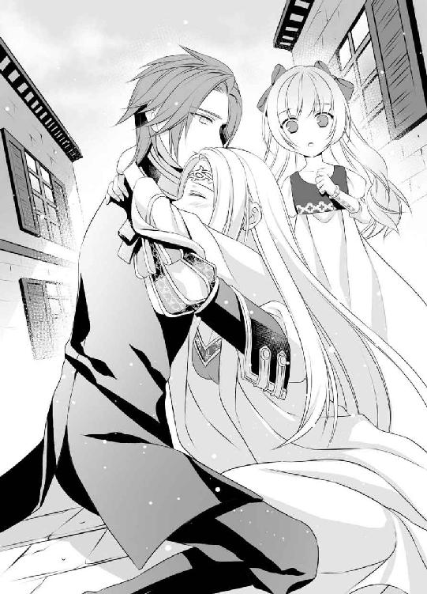
「その上、ほら......俺のことがこんなに大好きだからな。毎日会いに行った甲斐があった。最高の花嫁だ」
「よかったね、ディーク様。とっても綺麗なお姫様......素敵な花嫁さんね」
「ああ」
「おめでとうございます」
「おめでとう！」
祝福の声の輪は次第に大きくなり、それまで息を詰めたように黙り込んでいた人々が、ディークハルトとブランシュに向かって一斉に口火を切る。
「俺、白髪・白目の人に生まれて初めて会いました......感動です！」
「だろうな。俺もそうだ」
「まるで人ではないかのような美しさですねえ......あ、いえ、悪い意味じゃなくて、それほど綺麗ってことで......」
誰かの失言にも、ディークハルトは笑顔で応対する。
「まあな、確かに妖精なんじゃないかと、俺もよく見間違える。だがそれ以上近づくなよ。ブランシュは俺の花嫁だ」
「そんな大それたこと考えていませんよ。毎日欠かさず会いに行かれていたのを、街を挙げて応援していたんですから......なあ」
「そうですよ！」
もの珍しそうではあるが、好意の塊のような視線の中央に自分がいることが、ブランシュは信じられなかった。
傍にいた小さな女の子が、かわいらしい手でブランシュのドレスを軽く引く。
「本当に大丈夫？ マリーの家に来る？ お薬おいしくないけど、元気になれるよ」
「............！」
自分に向けての問いかけだとはわかっていても、人とこうしてやり取りすることに慣れておらず、ブランシュは一瞬言葉に詰まる。
「ブランシュ」
後押しするようにディークハルトから優しい声をかけられ、必死で首を横に振った。
「大丈夫です。身体の具合が悪いわけではないの......心配してくれて、どうもありがとう」
ブランシュから直接お礼を言われた少女の顔が、嬉しさ誇らしさできらきらと輝く。
「......うん！」
満面の笑顔で母親のもとへ駆け戻ると、その光景をじっと見ていた人々から、今度は我先にとブランシュへ声がかかった。
「ロアージュ神聖国の王都から来たのですか？」
「聖地はどういうところ？ 本当に水に限りがないの？」
「あなたのようにきれいな方が、たくさんいらっしゃるのですか？」
「え......あの......」
その勢いに押されぎみのブランシュを、ディークハルトが腕に庇う。
「こらこら、そんなにいっぺんに話しかけるな。質問なら今度来た時に、俺がいくらでも答えてやる」
「えー、ディーク様が......ですか？」
「それじゃ今までと同じじゃないですか」
不満げな声を上げる人々を見渡し、ディークハルトはブランシュを再び腕に抱き上げた。
「先はまだ長いからな、ここでのんびりしてはいられない。今日のところはもうこれで出発する」
「えー、もう少しいいじゃないですか」
「ディーク様のケチ」
「何とでも言え」
人々の非難を一蹴し、ブランシュを先に馬に乗せると後から彼自身も飛び乗る。
「あなたと話したい者にいちいち対応していたらきりがない。みんな興味津々だからな......それよりも今は、早く二人きりになれる場所に着くように、先を急ごう」
「ディーク？」
ブランシュの驚きの声を軽い口づけで封じ、ディークハルトは言葉どおり、すぐに馬を歩ませ始めた。
「また遊びに来てね、お姫様」
「ええ」
手を振って見送ってくれたマリーに対してだけ、ブランシュは笑顔で返事をすることができたが、それを見た人々からはまたどよめきのようなため息が漏れる。
「なんて美しい......」
「綺麗だ......」
その様子を満足そうに見ながらも、ディークハルトはわざと背を向けるようにして馬を走らせた。
「すっかりみんなあなたの虜だ。こうなることはわかっていたが......」
そこで言葉を切り、二本の腕の間に座るブランシュの上に、そっと身を屈めてこめかみのあたりに口づける。
「だが俺の花嫁だ。大切な人だ。誰にも譲れない......」
真剣みを帯びたその声にどきりと胸を跳ねさせ、ブランシュは背後に座るディークハルトをふり返った。
「もちろんです」
もう一度下りてきた唇を今度は唇で受け止め、これ以上ない幸せを感じながら前に向き直った。
そこからディークハルトの暮らす街までは半日ほどかかるので、馬の背からふり落されないように彼の腕に縋っていられるのならば、眠っていてもいいと言い渡された。
「でも......」
手綱を持って馬を走らせているディークハルトは寝るどころか休憩もできないのに、自分ばかりが休むわけにはいかないとブランシュは首を振る。
「私も起きています」
しかし飛ぶように視界を過ぎていくのは同じような風景ばかりで、馬の背にはしっかりと厚い布を敷かれて快適性を上げられていたこともあり、気づけばいつの間にかすっかり眠ってしまっていた。
「ブランシュ......おい、着いたぞ」
「......え？」
ディークハルトの呼びかけに驚いて目を開けると、目の前には見たこともない光景が広がっていた。夕暮れの中で鈍く光る灰色の石壁を有した巨大な建物。それは視線を巡らしても端が見えないほどに左右に長く続いており、見上げても頂上がうまく確認できない。
「あの......ここは？」
首を傾げるブランシュより先に馬を下り、続けてブランシュも下ろしてから、ディークハルトはそこにいた銀色の甲冑姿の人物に馬の手綱を渡した。
「ああ、ウィスタニア帝国の城──ファンテス城だ」
「えっ！」
その大きさといい、甲冑姿の男たちが見張りのために何人も巡回していることといい、ひょっとしてそうなのではないかとブランシュも思ってはいたが、まさか本当にそうだとは驚いた。
本の中で読んでいた、もしくは話に聞いていた一国の城の中に、ディークハルトはブランシュの手を引いて躊躇なく入っていく。
「待って！ 待ってください！」
目配せだけで城門を通り抜け、尖塔に囲まれた巨大な城へと続く石畳を迷うことなく歩き続けるディークハルトに、ブランシュは必死に声を上げる。
「どうしてお城へ？ 仕事場を見せてくださるというのなら、それはまた後日でも......それよりもまずはあなたの家へ向かいましょう、ディーク」
ひょっとすると叫びを無視してそのまま歩き続けるかとも思ったが、ディークハルトは思いがけなくそこで足を止め、その後を小走りで追っていたブランシュは、広い背中に危うくぶつかりそうになった。
「きゃっ」
「やっぱりな」
柔らかく抱き止めてくれながら、ディークハルトはため息を吐く。
「え？」
彼はいったい何に納得したのだろうかと首を傾げるブランシュの手を強く引き、そのまま腕に抱き上げてしまった。
「どうやらあなたは何か誤解しているようだ」
「え......何が？ 何をですか？」
慌ててディークハルトの首に抱きつきながらも、その格好のまままた歩き出され、ブランシュは急いで問い返す。
「ここは確かに俺の仕事場には違いないが、家でもある。そういうことだ......」
「家？ 家って......え？」
一国の城を家と呼ぶ──その地位にある者はかなり限られるということに思い当たり、ブランシュは瞳を瞬かせる。
「え......？」
呆けてしまったようなその表情を、目を細めて眺め、ディークハルトはかすかに苦笑した。
「あなたはいったい、何者の花嫁になったつもりだったんだ？ まさか一介の騎士に過ぎない男か？」
「だって......」
そういったことはあまり頭になかったと、ブランシュは首を振る。
「おそらく騎士か傭兵をされているのだろうと、思ってはいました。でもどちらでもよくて......私にとって大切なのはあなたであることなので、ディークの仕事が何でも、私は特に......」
その答えを聞いたディークハルトの腕に力がこもった。
「確かに。俺もあなたがロアージュ神聖国の王女でも、そうでなくても、どちらでもいいと思った。ただあなたなら......そうか、同じように思ってくれていたのか。それは嬉しい」
その場で足を止め、顔を斜めに近づけて口づけられてしまいそうだったので、ブランシュは慌ててディークハルトの胸を押す。
「ディーク！ あの......みなが見ています！」
そこは城門から城館へと向かう通路の途中で、甲冑を着た人物や騎士服の男や煌びやかな衣装に身を包んだ男女など、実に多くの人が行き交っている。
ブランシュは外套の頭巾を頭から被っているので人相は見えないだろうが、ディークハルトはそのままで、あからさまに遠巻きにされながらもかなりの視線を浴びているのに、そういったことにはまるで躊躇しない。湖の畔に二人きりでいる時と同じように、好きなようにブランシュに触れようとする。
それを阻止しようと両手で突っぱねたが、それぐらいでは抑止にならず、ディークハルトはなおも顔を近づけようとする。ブランシュは頬を真っ赤に染めながら声を上げた。
「ディーク！ まずはあなたの部屋へ向かいましょう。それから......」
言いかけて、はっと口を噤んだがもう遅い。ディークハルトはすでに蕩けそうな笑顔になってしまっている。
「そうだな。早く二人きりになれる場所へ行くんだったな。あなたもそう望んでいるようだから急ごう」
「ちがっ......私、そんなこと望んでいません！」
「ははは」
ディークハルトが大きな声で笑いながら大股で通路を急ぎ、石造りの壮麗な城の中に躊躇せず入り、ブランシュを連れて行ったのは、巨大な扉の前だった。
城の中のかなり奥まった場所で、そこへ続く廊下には全て真紅の絨毯が敷き詰められており、扉には金の装飾が施されている。
扉の左右に置かれた美術品も、壁に飾られた絵画も、どちらも見るからに高級そうで、その前でようやく腕から下ろしてもらっても、ブランシュは戸惑わずにいられない。
「あの......」
「入るぞ」
言葉と同時にディークハルトが押し開いた扉の先に広がっていたのも、落ち着いた雰囲気の豪奢な部屋だった。一つの部屋だけで、ブランシュが湖の離宮で祈りを捧げていたあの小さな礼拝堂ほどの広さがある。
一度に十人が座れるような応接セットも、壁際に置かれた猫足の飾り棚も、全て細かな彫刻が施されており、それを金色に彩色されている。高い天井からは水晶のシャンデリアが下がり、蠟燭が灯された燭台一つとっても、贅沢なものだ。毛足の長い花模様の絨毯が敷かれた部屋の奥には大きな机があり、その前では二人の男性が何かをしていた。
呆けたように部屋の内装を眺めていたブランシュは、彼らの姿を認めてどきりと胸が跳ね、頭に被っていた頭巾を深々と被り直す。
途中の街で受けた人々の賞賛の声は、ブランシュを勇気づけてくれたが、誰もがそうだとは限らない。その男たちはブランシュの姿を見たらどういう反応をするのかと考えると、やはり胸が詰まるような思いがする。
扉の開く音に従ってすでにこちらを見ていた男たちは、ディークハルトに向かって一斉に口を開いた。
「遅い。いったい今何時だと思っている？ 約束の時間を守れないのなら、馬鹿なことはもうやめろといつも言っているだろう」
厳しい声と共に鋭い眼差しを向けてきたのは、ディークハルトと同じような背格好の黒髪の男で、細い目もとは怜悧な印象がある。
対して、その隣にいるのは鮮やかな金髪の美青年で、華やかな笑顔でディークハルトに応対する。
「オスカーは、朝から評議会の老人たちに嫌味を言われたから苛々しているんだよ。ディークがふらふらしているのはオスカーがちゃんと見張ってないからだってね。あれ？ ......誰？」
ディークハルトの隣に立つブランシュの姿に目を留め、彼は藍色の瞳を大きく見開いた。
「まさか、ついに連れて来ちゃったの？」
嬉しげに首を傾げ、こちらに駆け寄って来ようとするのでブランシュは焦る。慌ててディークハルトの後ろに姿を隠すと、そのディークハルトが制止の言葉を発した。
「やめろ、ユリウス。それ以上近づくな」
「えー」
ユリウスと呼ばれた青年は不満そうな顔をしながらもそこで足を止めたが、オスカーという黒髪の男もその横に並び、改めてこちらに視線を向けてくる。
「まさか本当に......聖王女を攫ってきたのか？」
「いや......」
ロアージュ神聖国の王女を指すらしい『聖王女』という呼び名に心を痛めながらも、ディークハルトに腕を掴んで引き寄せられるまま、ブランシュはその隣に立つ。
「ブランシュは自分の意志でここへ来た。俺の花嫁になると言った。な？」
「はい」
覚悟を決める時だと唇を引き結び、ブランシュは頭に被っていた頭巾を取った。白金色の髪が、さらりと肩から身体の前面に落ちてくる。
「初めまして、ブランシュです」
彼らは自分の髪色と目の色を見て、いったいどういう反応をするのだろう。怯えるか、嫌悪の思いをあらわにするか、それとも──。
もし否定的な態度を示されても動揺しないでいようと、ブランシュはディークハルトの腕を掴み、毅然と顔を上げ続けたのに、二人が見せたのはそういう反応ではなかった。
「初めまして、僕はユリウス・アーカルド。すごいなあ、本当に髪も目も白いんだね。とっても綺麗だ」
ユリウスは実に嬉しそうににこにこと笑いながらこちらへ来ようとするので、またディークハルトに止められる。
「ユリウス、お前は来るな」
「えー」
彼こそ口を尖らせる仕草まで優美な、実に美しい男性だとブランシュは思った。
「......その男に脅されたのではないですか？ 何か弱みを握られたのでは？」
真摯な眼差しで問いかけてくるオスカーは、はじめの印象ほど怖い人物ではないように感じた。礼儀正しくブランシュを気遣ってくれる。
「だったらそうおっしゃってください。私が責任を持って神聖国へお返しします。あなたのように美しい姫が、その男の犠牲になることはない」
「いいえ......私は本当に、自分で望んでここへ来ました」
ブランシュも緊張を強くしながらではあるが、返事をすることができる。
「なんてことだ！」
しかしブランシュからディークハルトへと視線を移した途端、オスカーの眼差しはまた鋭くなった。
「ちゃんと神聖国に許可はもらったんだろうな？ 突然連れ帰ってくるようではとてもそうは思えないが......」
「もちろん正式な許可はこれからだ。だが内諾は得ている。そうでなければさすがに俺でも、突然連れ帰ったりなどしない」
「どの口が言う！ いつも勝手なことばかりして、その後の処理に私がどれだけ苦労していると思っているんだ」
「いやぁ......いつも悪いな、オスカー。今回も頼む」
にやりと笑ってオスカーの怒りをかわすディークハルトの横顔を、ブランシュは思わず仰ぎ見た。
「どうした？」
「あの......」
おそらくオスカーとユリウスはディークハルトの仕事仲間で、日頃から親しくしている間柄なのだとはわかる。しかしここは城のかなり奥まった場所にある豪奢な部屋で、三人がいったい何を仕事としているのかを考えると、身も竦むような思いがする。
廊下を行き来していた衛兵たちによって、いつの間にか閉じられていた背後の大きな扉と、頭上に輝くシャンデリア、壁にかけられた歴代の皇帝と思われる人物たちの肖像画の列を眺めながら、ブランシュは恐る恐る口を開いた。
「ひょっとしてオスカー様は、このウィスタニア帝国の皇帝陛下ですか？ ディークはその補佐官とか......？」
「あー......」
きまり悪げに頭を掻いているディークハルトに代わり、ユリウスが答えをくれた。
「その逆だよ、逆。聖王女様」
「え......逆？」
オスカーも憮然とした顔で、こちらを見る。
「そう。残念ながらこの国の現在の皇帝は......あなたの隣にいるその男です、聖王女殿下。私のほうが、彼の補佐官を務めています。ユリウスは第二補佐官です。本当にその男の花嫁になるつもりでここへ来られたのなら、どうかこれからは我々の余計な仕事が増えないよう、なるべくその男が城を空けないように、あなたからも注意していただけるとありがたい。なにしろその男のせいで我々まで、万年寝不足だ」
「オスカー。こうしてブランシュが来てくれたんだから、俺が城を空けることはもうないに決まっているだろう？ 大切な花嫁のためにも、これからは仕事熱心な夫になる」
「どうだか！」
二人のやり取りはまだ続いているようだったが、ブランシュの耳にはもう入ってこなかった。
（そんな！）
ディークハルトがこのウィスタニア帝国の皇帝であったことに大きく動揺している。
帝国制を取っているこの国の皇帝は世襲制ではない。交代の時期にもっともその地位にふさわしい人物が選ばれ、皇帝の座に就く。
確かにディークハルトは親しみやすく、どこへ行っても誰からも好かれるような人柄だが、だからこそ皇帝という地位とは結びつかなかった。もっと厳めしい──オスカーのような人物が、強大な軍事力を誇るこの国の頂点に君臨しているのだとブランシュは勝手に思い込んでいた。
（本当に？）
確かめるように何度もちらちらと視線を向けるブランシュに、ディークハルトが少し腰を曲げて顔を近づける。
「どうした？」
「いえ......」
彼がこの国の皇帝であったことに驚いている話をしたいが、ユリウスやオスカーもいるこの部屋ではどうしても緊張してしまい、ブランシュはいつものようには話せない。
その戸惑いに気がついてくれたのか、ディークハルトはブランシュの手を引き、部屋の右奥にある扉の前へと進んだ。
「ここは執務室だが、この奥は俺の私的な休憩室だ。急ぎの仕事を終わらせてしまうから、奥で待っていてくれ」
「でも......」
初めての場所でディークハルトの傍を離れることが怖く、ブランシュが表情を曇らせると、頬に軽く口づけられる。
「あ......」
「すぐに行く。約束する。あなたが待っていると思えば、倍の速さで仕事も進むはずだから......な？」
念を押すようにもう一度、今度は逆の頬に口づけられるとブランシュももういやとは言えなかった。ディークハルトの邪魔をするような花嫁にはなりたくないという思いもある。
「わかりました」
ブランシュが目の前にある扉の取手に手をかけると、ディークハルトはほっとしたようにその大きな手で白金色の頭を撫で、次の瞬間にはもう踵を返した。
「よし！ すぐに終わらせるぞ、オスカー！ ユリウス！」
「お前が言うな」
「嘆願書は山のようだし、面会希望も長蛇の列だけどね」
「いや、絶対すぐに終わらせる！」
声高らかに宣言するディークハルトの声を聞きながら、ブランシュは恐る恐る休憩室の扉を開けた。扉を抜けた先は、中央に天蓋つきの大きな寝台が据えられた、寝室兼居間のような場所だった。
ディークハルトが言っていたように、正規の寝室は別にあり、ここは仕事の合間の休憩に使うのだろうが、それでもかなりの広さがあり、贅の限りが尽くされている。丸テーブルを挟んで向きあう椅子の一脚に座ってみても、柔らかすぎてブランシュはまったく落ち着かない。
「............」
ブランシュが暮らしていた湖の離宮は、ロアージュ神聖国の王室の持ちものであり、貴重な白柱石で造られ、調度品も豪華ではあったが、何もかもが古かった。
それに比べてウィスタニア帝国のファンテス城は、外観こそ歴史を感じさせる古い石造りだが、内装は新しく、しかもかなりの金額がかけられていることがわかる。いたるところに飾られている美術品も、こうしてブランシュが腰をかけている椅子一つとっても、おそらく大陸で一番の高級品が集められているに違いない。
そこには国力の差があからさまに表れているように感じ、ブランシュは胸が痛くなった。
国内にヴァリド神教の聖地を有するロアージュ神聖国には、長い歴史があり、もともと他国からも一目置かれるような存在だった。歴史的には力を弱めた時期もあったが、ブランシュの父であるルドルフ三世は若くして王位に就き、政治にも熱心で、十八年前までは、神聖国は新たな繁栄への道を歩みつつあった。
それを覆したのが、他でもない──ブランシュの誕生である。
跡継ぎの誕生を心待ちにしていた国王と王室にとって、白髪・白目という容姿で王女が生まれたことはかなりの打撃となったようだ。それ以来王妃は身体を壊してついには亡くなり、国王は政治への意欲を失くし、神聖国が衰退の一途をたどっているのは、自分のせいなのだとブランシュは申し訳なく思う。
（ごめんなさい）
王都から遠く離れた離宮で暮らしながら、己の罪を懺悔し、王国の復興を願うことはブランシュの日課だった。それはこうして異国へ来ても、やはり変わらない。
（女神ファルーナ......どうかお願いします）
普段より熱心に、長く祈りを捧げているうちに、背後で扉が開く気配がした。
「............え？」
まさかもうディークハルトの仕事が終わったのかと思ったが、そのはずはない。いくら彼が急ぐと言っても、さすがに早すぎる。
予想は的中で、先ほどブランシュが通ってきた扉とは別の、おそらく廊下へ直接通じていると思われる扉から、揃いのお仕着せに身を包んだ若い女たちがぞろぞろと室内へ入ってきた。
「あ......」
この城で働く侍女たちなのだろう。大きな水瓶を抱えて一列に並び、衝立で仕切られた部屋の奥へと運んでいくので、ブランシュは思い切って声をかけてみる。
「あの、何か......？」
しかし侍女たちは誰も口を開かない。それどころかブランシュに視線を向けようともしないので、椅子から立ち上がり、自分の目で確かめるしかなかった。
衝立の裏をのぞいてみると、タイル張りになった床の上に陶器製のバスタブが置かれている。侍女たちが持つ水瓶からそこにお湯が注がれている様子を見て、湯浴みの準備をしてくれているのだと理解した。おそらくディークハルトが命じてくれたのだろう。
長く馬に乗り、埃っぽくなっていた身体や髪の汚れをこれで落とすことができると、ブランシュは嬉しくなる。
「ありがとうございます」
しかし誰からも返答はなく、まるでそこにいない者のように扱われることには悲しさを覚える。
湯を溜め終わった侍女たちは、手桶や布や海綿などを準備しながら、互いに顔を見あわせている。お互いに一言も口を利かず視線だけで意志の疎通をしながら、それでも誰もが必死に何かを避けようとしていることは、ブランシュにもわかった。
（そうよね）
誰がブランシュの湯浴みの手伝いをするかを、懸命に押しつけあっているのだろう。視線を向けたくもない相手に、触れるなどとてもできない心境は、ブランシュにも理解できる。
離宮にいた間、ブランシュは極力ポーラの手を煩わせたくなく、湯浴みも一人でしていた。ここでもそれで特に不都合はない。
「あの......後は一人でやれますので、大丈夫です。ありがとうございました」
また無視されるかもしれないと思いながらも頭を下げると、今度は、侍女たちは我先にと部屋を出て行った。そのうちの誰一人として、ブランシュに返事をしたり視線を向けたりする者はいなかった。
「やっぱり、そうよね......」
途中の町の人々は驚きながらもブランシュを受け入れてくれたし、ディークハルトの補佐官であるオスカーとユリウスもごく普通に接してくれたため、ブランシュは自分の外見がとても珍しいということを、少しの間すっかり失念していた。
恐れを抱かれることは覚悟していたはずなのに、その少しの油断が、かえって胸の傷を大きくする。
「そうだったわ......」
込み上げてきそうになる熱いものを必死に我慢しながら、ブランシュは着ているものを脱ぎ、衝立の向こうへ入った。
身体の汚れを落とし、温かなバスタブに浸かると、心が慰められるような気がした。他の者がどうであれ、ディークハルトの態度は優しく、いつもブランシュを大切にしてくれるものだ。
その彼の花嫁としてこの国へ来たのだから、その他の人々の態度を気にすることはない。それを憂えるよりは、ディークハルトが与えてくれた多くの幸せを、どうやったら自分も彼に返すことができるのかに頭を悩ませるほうがずっと前向きだ。
「でもまさか、皇帝陛下だとは思わなかった......」
飾らない態度から、その本当の身分を予想することはとても無理だったことに思いを馳せていると、ふいにすぐ近くで声がした。
「それは俺の話か？」
「え......」
扉が開いた気配さえなかったのに、ブランシュが驚きに背後をふり返ってみれば、ディークハルトはもう衝立を回り込んで目の前に立っている。
「きゃあっ」
何も身に着けていない裸体で、バスタブに浸かっていたブランシュは悲鳴を上げ、胸の膨らみを両腕で隠した。しかしディークハルトはそれを気にした様子もなく、バスタブに近づいてくる。
「本当はもう少し早く切り上げて、あなたを俺が洗ってやりたかったんだが......やはりもう洗い終わったか？」
自分は裸だというのに普通に話され、恥ずかしい思いをしながらもブランシュは正直に頷いた。
「はい」
「そうか......あーあ」
バスタブのすぐ横で膝をついたディークハルトは、ブランシュの肩にこつんと額を乗せる。バスタブいっぱいの湯は少し身じろぎすると溢れてしまうので、彼の服が濡れそうだとブランシュは焦る。
「あの、ディーク......濡れてしまいます」
「構わない」
ディークハルトは低く呟き、ブランシュの背後に移動した。何をするのかと思っていると、バスタブの外に長く垂らしていた髪を持ち上げられる。
「髪も自分で洗ったのか？」
「はい......」
かなりの長さがあるので完全に洗えたかはわからないが、できるだけの努力をしたと自負しながらブランシュが頷くと、ディークハルトは深く息を吐いた。
「じゃあ次こそは俺が洗おう。ずっとそうしたいと思っていたんだ」
祖国では忌み嫌われる白金色の髪に口づけを落とし、大きな手で梳いてくれる感触が心地いい。その感覚に集中するようにブランシュがバスタブに背を預け、思わず両目を閉じると、顔を上向けられ、口づけられた。
「んっ......んぅ」
揺らめくお湯に半ば浮いた胸の膨らみに、ディークハルトの手が伸びてくる。
「あ......っ......」
ブランシュが慌てて身体を起こしたため、バスタブから湯が溢れた。
「ディーク......んっ......服が濡れてしまいます......っん」
「構わないと言っているだろう」
後ろから両腕をまわし、ディークハルトはブランシュの胸の膨らみを掴んだ。湯の中で自分の胸が彼の手に弄ばれている光景が、ブランシュの眼下に広がる。
「あ......や......っ」
身体の奥に甘い痺れが走り、何かが溢れる感覚がしたので、ブランシュは急いで両脚を閉じあわせた。しかしディークハルトは手を胸から移動させ、脚の間に滑り込ませてくる。
「あっ、あ......ぁ」
ブランシュの裸の背中にぴったりと胸をつけているような格好で、ディークハルトの服はもう完全に濡れてしまっているだろうが、ブランシュにそれを気にしている余裕はない。敏感な部分に指先で触れられ、湯の中でびくんびくんと身体を震わせてしまう。
「も、だめ......です......っん」
脱力するブランシュに深く唇を重ね、それからディークハルトは力の抜けた身体を両腕に抱き上げた。
「やっ......あ......」
何も身に着けていない裸体が、大きな硝子の窓から差し込む日の光の中であらわになってしまい、ブランシュは身体を捩る。大きな布でその身体を包み、軽く湯を拭いてから、ディークハルトは衝立の向こうの寝台へと運んだ。
「待って！ 待ってくださ......きゃあっ」
寝台の上に下ろされたブランシュの上に、ディークハルトも乗ってくる。シーツの上を逃げようとしたブランシュは、彼の顔の前で大きく脚を開かされてしまった。
「やっ、だめ......っ！」
慌てて閉じようとしても、両膝をシーツにつけるようにして力ずくで開かされてしまう。それでも抗議の声を上げようとするブランシュに、ディークはしーっと声を控えるように合図した。
「まだ隣の部屋にオスカーとユリウスがいる。聞かれたくなかったらなるべく声を出さないでくれ。というより俺が聞かせたくないので、こらえてくれブランシュ」
「そんな......あっ！」
涙を浮かべるブランシュの脚の間に、何を思ったのかディークハルトは顔を伏せてきた。そんな場所を間近で見られるなど耐えられないと、ブランシュは懸命に脚を閉じようとする。
「いや！ いやです、ディーク！」
「ブランシュ、声」
ディークハルトはそれだけ告げると、ブランシュがはっとしている間に、その場所により深く顔を埋めてしまった。彼に見られていると思っただけで、身体の奥から蜜が湧き出てしまっていた場所に、唇をつけて強く吸われる。
「きゃあんっ、あっ......いやあ......っ」
「ブランシュ、声」
必死に両手で口を覆い、声をこらえようとしても、とても我慢できなかった。ディークハルトがブランシュの恥ずかしい場所に顔を伏せている。それだけでも耐えがたい羞恥なのに、そこに口づけられたり、舐めたり吸われたりする。
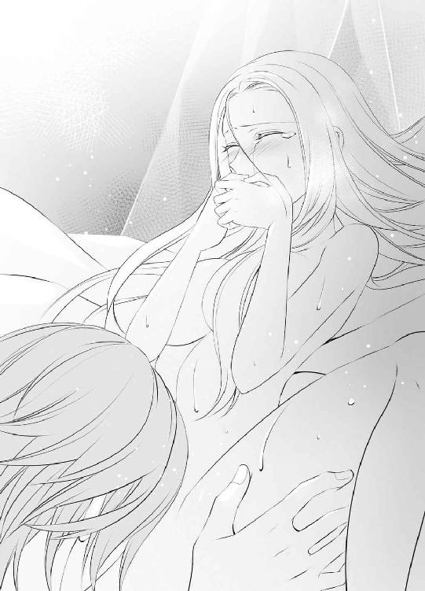
指先で少し触れられただけで身体の奥に響くような快感を覚える場所に、それらの刺激はあまりにも強すぎて、ブランシュは大きく腰を上下させながら悶えずにはいられない。
「んっ、んんっ......っ、あ......」
声が隣室に漏れないように、自分でこらえなければならないので尚更だ。喘ぎにして発散できない快感がどんどん身体の奥にたまっていくようで、もうすぐにでも極めてしまいそうになる。
「待って......ま......やんっ......んっ」
身体に思考と気持ちがついていかず、涙声で訴えるブランシュを無視して、ディークハルトは蜜口のすぐ上にある小さな突起を唇で挟んで強く吸い上げた。
「ああああっ、いやあっ」
すさまじい快感が身体を突き抜け、ブランシュは白い肢体を大きく上下させて極めた。びくびくと痙攣する蜜口からどっと溢れ出した愛液を、ディークハルトが唇をつけて啜る。
「あっ、あんっ」
その行為すら刺激になり、ブランシュは続けてそのまま極めてしまいそうになるのに、腰を捩って逃げようとしても腰骨を掴んだディークハルトが放してくれない。
「やっ......もう、や......あんっ」
「ブランシュ、声」
大きな嬌声を上げてしまった後ではもう遅いのではないかとも思ったが、ブランシュは懸命に唇を噛んだ。その間もディークハルトはブランシュの股間から顔を離すことなく、まるで動物のようにぴちゃぴちゃと音を立てて、とどまることなく溢れ続ける愛液を舐めている。
「んっ......んう......んんっ」
出せない声の代わりに腰を揺らめかすブランシュの脚の間から、ようやく彼が顔を上げてくれた時には、ブランシュの白い頬はすっかり涙に濡れていた。洗ったばかりの髪が乱れかかり、あえかな吐息を漏らす唇を、愛おしげにディークハルトの指先がなぞる。
「なんて顔をしてるんだ、ブランシュ。赤く上気した頬をして、快感に蕩けた目をして......このままめちゃくちゃにしてしまいたくなる」
ごくりと嚥下するディークハルトの喉を見上げ、ブランシュは力なく首を左右に振った。
「や......いや......」
それなのにディークハルトはブランシュの脚を大きく開かせ、服を脱いだ自身の身体をその上に重ねてくる。
「もっと乱してしまいたくなる」
「いや......ああっ」
恐ろしい宣言に、ブランシュがもう一度首を振った時、熱い塊が身体の中心を割った。すでに一度極めて敏感になっていた胎内を、大きく硬いもので強引に奥まで擦られ、ブランシュは背をしならせて悶える。
「ああっ、ああん」
シーツから浮いた背中に腕をまわしたディークハルトに、身体がぴったりと重なるほどに抱きしめられ、そのまま大きく上下に揺さぶられた。
「あんっ、あっ、あっ」
身体の奥深くまで受け入れた彼のものが、抜け落ちそうなほどにまで引き抜かれ、また奥まで押し込められる。それは身体の中をぐちゃぐちゃにかき混ぜられるような乱暴さで、強く突かれる場所が次々と変わり、ブランシュは息も吐けないのに、ディークハルトは激しい抽挿をやめる気配はない。
「あっ、ああっ......やっ、ああん」
「ブランシュ、声」
戒めるように告げられ、ブランシュは必死に唇を結ぼうとした。しかし刻まれる律動が激しすぎて、それによって与えられる快感が大きすぎて、声をこらえることなどとてもできない。
「やっ......無理......無理です......っん」
涙声の訴えに、ディークハルトが小さく笑った気配がした。ブランシュが固く閉じていた瞳を開こうとすると、噛みつくように唇に唇が重なってくる。
「んんっ！ んんう......っ」
口づけでブランシュの唇を塞ぎ、ディークハルトの動きはますます激しくなった。
腰に腰を打ちつけるようにして連続で最奥を突かれ、ブランシュはあっけなく快感の頂に押し上げられる。
「んんんっ、ん......ん──っ！」
それでもディークハルトは抽挿を緩めてくれない。びくびくと脈動する蜜壺を穿つように、強引に腰を打ちつけてくる。
「ん、んっ、んんっ！」
快感に震える蜜襞を何度も擦りたてられ、ブランシュは全身を震わせてもう一度極めた。
細かい痙攣のような蠕動がブランシュの胎内ではずっと続いているのに、ディークハルトはまだ交わりを解いてくれない。蜜口から滴り落ちるほどに溢れた愛液を泡立てるように、ぐちゅぐちゅと淫らな音を結合部から響かせて、それでもまだ大きな抽挿を続ける。
「やっ......ぁ......あっ」
口づけを自ら解き、ブランシュは掠れる声で懇願した。
「もぅ......あ......やめ、んんっ」
「いやだ、ブランシュ」
「だって......あ......私の身体、へん......あっ、変なんです......あっ」
「どういうふうに？」
「ずっと......びくびくして......あっ......も、だめなのに......ああっ、また来ちゃう......っんん」
びくんびくんと身体を痙攣させ、ブランシュはディークハルトの腕の中で、もう何度目かしれない頂点を極めた。それなのに彼が解放してくれる気配はない。
「何度でも達けばいい。快感に溺れたあなたの姿はとても魅力的だ。真っ白な肌が薄桃色に染まって、全身から甘い香りが漂って......まるで誘うかのような蠱惑的な目をしている。何度でも、いつまでも、狂わせていたい」
「いや......あ......や......ああんっ」
淫らな姿態を表現するディークハルトの言葉がまた新たな刺激となって、快感に喘ぐブランシュをこれまで以上に苛む。
重ねていた身体を起こしたディークハルトがブランシュの脚をより大きく開かせ、彼のものを突き入れられる角度が変わり、シーツの上で華奢な身体を何度も跳ねさせた。
「あんっ、あっ......いや......ぁ」
「いやじゃないはずだ。あなたの身体は悦んで俺を受け入れている。それどころかもっと奥へと誘おうとする。優しく包み込んで強く締めつける。もうとても離せない。ずっとこうしていたい」
「だめ......あ、だめです......そんなの......ぅ......っん」
「わかっている。だからあともう少しだけ、こうさせていてくれ。あなたの身体に忘れられないように俺を刻む。そのうち自分からも欲しがるくらいになるように......」
「いや......こわ......いっ......あっ！」
そんなあさましい女にはなりたくないとブランシュは必死で抗うのに、ディークハルトのいうとおり、身体は喜々として彼のものを受け入れているとわかる。
ディークハルトのものが作り出すうねりのあまりの心地よさに、自然と腰を揺らし、いつの間にか彼の動きにあわせて身体が勝手に動いてしまっている。
「あっ......あ......こんな......！」
それでも淫らな性分だとは思われたくなく、言葉だけは必死の抵抗を試みるのに、それをまた戒められる。
「ブランシュ、声」
「あ......」
口を閉じれば、肉体の快楽を貪欲に求める淫らな身体しか、そこにはなかった。ディークハルトの激しい律動を受け止めながら、白い肢体がシーツの上で艶めかしくくねる。
「ンっ......んんっ......っう」
「なんて淫らなんだ、ブランシュ......神々しいほどに美しい身体が、ひどく煽情的に動いて......ため息が出るほど綺麗だ......」
恍惚とした声で呟きながら数回大きく熱棒を出し入れしたディークハルトが、ブランシュの胎内の最奥で、大きく膨らませた楔から熱い飛沫を迸らせた。
「あっ、ああんっ」
身体の奥でそれを受け止めたブランシュは、腰を高くせり上げて悶える。
「も......もう、許して......あっ」
弱弱しげな声と裏腹にいっそう艶を増した白い肢体が、ディークハルトの嗜虐心を煽ってしまったとは、ブランシュは知らない。
胎内ですぐに硬さを取り戻した熱棒に、快感に震える襞をまた擦られ始めた。
「悪いが、まだ離せない」
「そんな......あっ、ああっ」
言葉に反してすぐに律動に順応し始める柔肌を愛しげに腕に抱き直し、ディークハルトは再び深い律動を刻みだした。
その後しばらくの間、ブランシュは本当に身体を開放してもらえなかった。ディークハルトがようやく交わりを解いてくれたのは窓から差し込む光が傾きかけようかという頃で、これでよかったのだろうかと不安になる。
「あの......よかったのですか、ディーク」
先に服を着終わって寝台から下りたディークハルトに、ブランシュは力なくシーツの上で横たわったまま問いかける。
裸の身体に掛け布は巻いていたが、そこから腕さえ持ち上がらないほどにすっかり疲弊してしまっていた。ディークハルトがまったく離してくれず、泣いても懇願してもずっと身体を揺さぶられ続けたのだから当然だ。その間に数え切れないほどに快感を極め、身体の奥に何度も彼の精を受けた。泥のように身体が重く、まったく動ける気がしない。
それに対してディークハルトのほうは、まるで何事もなかったかのように元気で、ブランシュは彼が少し恨めしくなる。
「何がだ？」
頭を撫でながら問いかけられたので、ささやかな反抗のつもりで掛け布を鼻まで引き上げ、顔を半ば隠すようにしながら答えた。
「お仕事です。オスカー様とユリウス様が隣室で待ってらっしゃるのでは？」
「ああ......」
しかしディークハルトは掛け布ごと、ブランシュを抱きしめてしまう。
「きゃあっ」
「あれは嘘だ」
「............嘘？」
発せられた言葉が意外すぎて、うまく理解できず、ブランシュはつい聞き返してしまった。ディークハルトはまるで悪びれた様子もなく、晴れ晴れとした表情で頷く。
「ああ。ああ言えばあなたが声をこらえようとして苦悶するだろうと思い、その姿が見たくてわざと言った。だが想像以上に艶めかしくて、すっかり離せなくなってしまったな......うん、次からもぜひそうしよう」
「ディーク！」
恥ずかしい声をディークハルト以外の男に聞かれてはならないと、ブランシュは必死の思いだったのに、実はそれは嘘だったと告げられ、冷静ではいられない。
「ひどいです！」
懸命に抗議するのに、ディークハルトはまるでこたえている様子ではない。逆に、嬉しげに笑っている。
「でもあなたがここで待っていると思ったから、普段より倍の速さで仕事ができたのは本当だ。後であいつらに確かめてもいい。これ以上効率がいいことはないので、これから毎日、俺が仕事をしている間はここで待っていてくれ。どんどん仕事が速くなって、あなたと過ごす時間が日ごとに長くなることは保証するから」
「そんな保証いりません！」
悔しさのあまりとうとう頭の上まで掛け布を被ったブランシュを、ディークハルトはそれごと強く抱きしめた。
「何と言われても、俺はもうあなたを離さない。明日も明後日もその次も、ずっと傍にいる」
「............！」
それはブランシュの心を震わせるような宣言で、こういうふうに意地を張った格好で聞きたかった言葉では決してない。
ブランシュは恐る恐る、掛け布から目までを出した。すぐ前にディークハルトの顔があり、一瞬驚いたが、溢れんばかりの愛情に満ちた表情で見つめられると、もう一度掛け布を被り直す気にはなれない。ディークハルトにされるがまま、掛け布を顔の下まで下げられ、啄むように優しく口づけられた。
「誓うよ、ブランシュ。あなたをもう離さない」
「はい......はい」
溢れそうになる涙を必死にこらえ、次の口づけを誓いの標とした。
その日からブランシュは、皇帝の花嫁としてファンテス城で生活するようになった。妃として正式にお披露目をするのは評議会が日時を決定するのを待ってからになるが、先に神の前での誓いを済ませ、ディークハルトの花嫁となった。
しかし、湖の離宮のあの小さな礼拝堂とは比べものにならない巨大な聖堂で、荘厳な雰囲気の中、執り行われた式に、神聖国側からの参列者はいなかった。
『おかしいな......あなたを花嫁に迎えたいという連絡は王室に正式に送ったし、許諾の返事ももらったんだが......』
ディークハルトはしきりに首を傾げていたが、ある意味これが現実なのだろうとブランシュは思う。
確かにウィスタニア帝国では、ブランシュの容姿は珍しがられこそすれ忌み嫌われるものではないが、祖国に帰れば不吉として避けられるものだ。他国へ嫁いでくれて厄介払いができたと喜ばれることはあっても、わざわざその姿を見届けようという奇特な者はいなかったのだろう。
十八年間あの湖の離宮で暮らしていても、ガルニエ以外の訪問者は皆無だったことからも、その事実は明白だ。
『いいのです。私は一人でも......』
気丈に答えながらも、実を言えば寂しかった。身の回りの世話をしてくれる侍女たちとは、まだ満足に会話を交わせていない。『必ず後を追う』と約束したポーラも、何か不都合があったのか、いまだに到着していない。
（ポーラ......大丈夫だったのかしら......？）
やはり事後のことを彼女に全て託して、急いで神聖国を出るべきではなかったのではないかという思いが日増しに大きくなる。
（私のせいで責められていなければいいけれど......）
不安な毎日の中でブランシュの心の支えは、やはりディークハルトだった。
「悪い、待たせたな」
始めの日に宣言したように、執務中はブランシュを休憩室で待たせることにしたディークハルトは、約束どおりその訪れを日に日に早くしている。
「いいえ、私は少しも待っていません」
彼と別れ、再会までの間に読もうと思っていた本がまだ半分も終わらないうちに、ディークハルトが帰ってくることもあった。
オスカーと顔をあわせても苦情は言われないので、まさか仕事の手を抜いているわけではないのだろうが、ブランシュは不思議でならない。
「本当に......もう終わられたのですか？」
疑問を口にしてみると、大きな手でくしゃりと頭を撫でられた。
「もちろんだ。さあ、今日はユリウス主催のサロンへ行くぞ」
「あ、はい......！」
手を引いてすぐに出入り口の扉へと向かわれるので、ブランシュも慌てて後を追う。
仕事を急いで終えた後は、この部屋で艶めいた時間を過ごすかのように語っていたディークハルトだったが、実際には毎日違ったところへブランシュを連れていった。それは王宮内であったり、とある貴族の邸宅だったり、街の中の建物だったりと実に様々だ。
それらの場所には、決まってこの国の要人や、主だった貴族、貴族の令嬢・子息などが集っており、彼らにブランシュを紹介し、宮廷に早くなじませようという思惑があるのだとはすぐにわかった。
しかしほぼ他人と接することなくこれまで生きてきたブランシュにとって、多くの人と対峙する場所はどうしても苦手だ。ついディークハルトの後ろに隠れてしまいたくなる。
「これはこれは......噂に聞いたとおりのお美しさですね。ぜひこちらへ来て、私の隣に座られませんか？」
「あ、あの......」
豪華な応接室で十人余りの若い男女が語らう中、初対面の紳士からの誘いにブランシュが戸惑っていると、ディークハルトがすっと間に割って入る。
「残念だがフィオルーテ伯、どこへ行っても、ブランシュの隣は俺だと決まっているのでその誘いには乗れないな......さあ、ここへ......ブランシュ」
攫うように連れ去られることは、ブランシュにとってこの上ない救いだったが、令嬢たちの目から見ても憧れの光景だったらしい。
「本当にうらやましいですわ......！」
ディークハルトが少し席を外すとその隙に、同じぐらいの年齢の令嬢たちからうっとりとした表情で、ブランシュは何度も訴えかけられた。
「他の男の傍になんておいておけない、自分のものだという独占欲を、人目もはばからず示してもらえるなんて......乙女の理想ですわよね！」
興奮ぎみに頬を染める気持ちは、実を言えばブランシュにはよくわからなかったが、ディークハルトに大切にされていることへの感謝の気持ちは強かったので、素直に頷く。
「ええ......」
「しかも相手が、あのディークハルト様ですのよ！ これまで戦いや政治に関しては数々の武勇伝があっても、女性の噂などまったくなかった方ですのに......でもそういう方に限って、この人と決めた相手に対しては、誠実で情熱的な愛情を示してくださるものなのですね......本当にうらやましい！」
「でもそれはやっぱり、ブランシュ様が特別にお綺麗だからではないかしら？」
「確かに！ 髪と目のお色も珍しくてとても綺麗だけど、肌も透きとおるような白さですものね......いったいどんな手入れをしてらっしゃいますの？」
「あの......」
美しいドレスに身を包んだ令嬢たちに囲まれ、好奇心に満ちた目を向けられていることがブランシュはいまだに信じられない気持ちがする。
ほんの少し前まであの湖の離宮で、限られた者としか会わず、静かな祈りに明け暮れる日々を送っていた自分が──と思うと、まるで夢の中にいるようだ。
しかし実際にはブランシュ自身も、ディークハルトが選んでくれた豪華なドレスを着て見事に装っており、その容姿の端麗さも相まって、どこから見ても城の奥で大切に育てられた可憐な姫君にしか見えない。自然と遠くから紳士たちの視線も集まる。
多くの注目を浴びながら、ブランシュは恐る恐る口を開いた。
「いえ、私は特に何も......普通に洗っているだけで......」
どきどきと胸の音を大きくしながら、こんなつまらない返答で令嬢たちに呆れてしまわれないかを危惧していると、風のように隣に帰ってきたディークハルトが、説明を足すかのごとくその続きを語ってくれた。
「おそらく内面の美しさが滲み出ているんだろう......ブランシュは日々、祖国のために祈りを捧げる生活をずっと送ってきた。今もまだそれを続けている。神の恩恵をその一身に受けていても、何も不思議はない......」
語りながら隣に座るブランシュの長い髪を一房手に取り、愛おしげに唇を寄せるので、周りの令嬢たちからはほうっと感嘆の息が漏れる。
「私も......これからもっと信心深くなりますわ！」
「私も！」
多くの決意表明の中心で、ブランシュはディークハルトに寄り添い、赤面するばかりだった。
これまで女性の噂がまったくなかったというのが信じられないほどに、彼はブランシュを下にも置かない完璧な特別扱いをする。
「何か食べるものを取ってこよう。何がいい？」
「あ、それぐらいは私が......！」
慌ててブランシュが席を立ちかけると、もう一度座るように指示される。
「いいから、あなたは座っていればいい」
微笑みを残して去っていく後ろ姿に、また令嬢たちのため息が漏れる。
「本当に素敵！ うらやましいほどの溺愛ぶりですわね」
「あ......はい」
それは多くの人の前でためらいなく示されるばかりではなく、ブランシュと二人きりの時もいかんなく発揮された。
「あの......こんなにたくさん、困ってしまいます、ディーク......」
ブランシュが戸惑いの声を発したのは、自由に使うようにと与えられた自室に、次から次へと新しいドレスや靴やアクセサリーが運び込まれてきたからだ。
真新しいクローゼットも靴棚も小物入れ用の引き出しもすぐに満杯になり、ブランシュは驚くばかりなのに、ディークハルトはさらにまだ注文するという。
「遠慮することはない。あなたは俺の花嫁、この国の皇妃なのだから、身分に見あう服装をすることも仕事の一つだ」
「でも......！」
ディークハルト自身は普通の騎士たちとさほど変わらない服装であるのに、自分ばかりがとブランシュはためらうが、笑顔で一蹴される。
「まあそれは建前で、実際は俺がいろんな服を着たあなたの姿を見てみたいだけなので......そこはもう諦めてくれ。ほら、これなんかどうだ？」
腰に腕をまわして彼のほうへ身体を引き寄せられ、淡い朱色のドレスを目の前に掲げられた。ごく薄い生地で作られているそれは、襟もとが大きく開いたナイトドレスで、ブランシュは頬を真っ赤に染める。
「そ、そんなドレス......どこへも着ていけません！」
「ははは、当然だ。俺だけが目にするものだからな」
ディークハルトは声を上げて笑いながら、ドレスをブランシュに当ててみせた。
「白い肌によく映えて、とても綺麗だろうな......」
瞳に甘さを滲ませて、耳もとに囁きかけるようにして告げられると、ブランシュの胸の鼓動はどきどきと落ち着かなくなる。
「あの......あっ」
恥ずかしさに俯くブランシュをドレスごと抱きしめ、ディークハルトは細い首筋に口づけを落とした。
「早く見たい。だがまあ......これを着たあなたがどれだけ美しくても、すぐに脱がせてしまうことになるだろうが......」
柔らかな唇が肌をたどる感触に、思わず漏れそうになる熱い息をこらえながら、ブランシュはディークハルトの胸を軽く押し返す。
「もうっ......ディーク......！」
「ははは」
ディークハルトは再び声を上げて笑いながら、ブランシュを抱きしめていた腕を解き、肘掛け椅子の背もたれにかけてあった違うドレスへと手を伸ばす。
「まあ、そのドレスは夜の楽しみに取っておくとして......こちらのドレスを着たあなたを、今度はどこへ連れて行こうか......晩餐会か......それとも舞踏会か......？ まあどこへ行っても、注目の的になることは間違いないな。ドレスにあわせて宝石も選ぼう。綺麗な髪を、次は結ってみるか？」
ブランシュの装いに想像をめぐらしているディークハルトの嬉しそうな顔を見ていると、ついブランシュ自身の表情も緩む。
「あなたと一緒なら、私はどこへでも......格好もお好きなように......」
「そんな笑顔を見せてくれるのなら、ますます贈りものがしたくなるな」
実際には贈られたドレスやアクセサリーよりも、それを披露するディークハルトの嬉しそうな様子に、ブランシュの表情もどんどん和らいでいくのだが、満足げに抱きしめられ、唇を重ねられると、もとの理由はもうどうでもよくなる。
「俺の大切なブランシュ......」
「ディーク......」
ディークハルトの腕の中でこの上ない幸せを噛みしめながら、ブランシュは部屋中に点在する色鮮やかなドレスの数々を見た。窓から差し込む光の中で、その豊かな色彩が目に眩しい。
（綺麗......）
まるで現実のことではないかのような幸福感は、大好きな人の腕の中であればこそ顕著だった。
その日ブランシュは、自室として使うようにと与えられた部屋で午後のひと時を過ごしていた。すると二間続きの隣室に、人の入ってくる気配がする。
「あ......」
昼下がりのこの時刻は、仕事が終わったディークハルトと共に過ごすため、ブランシュは自室を空けることが多い。それを知っている侍女たちが、どうやら掃除の時間に充てているらしいのだが、今日はディークハルトの仕事がまだ終わりそうになく、ブランシュは自室で控えていた。
（どうしよう......）
ここは自分に与えられた部屋なのだから堂々と座っていればいいはずなのだが、侍女たちと仲がいいという関係からはほど遠いため、ブランシュは落ち着かない気持ちになる。
かけていた椅子を立ち、部屋の中を眺め、うろうろと歩き回ったが、身を隠すのにいいような場所はない。しかし隣の寝室からこの居間へ、侍女たちがやってくる気配はまだないので、ひとまず落ち着くことにした。
（ひょっとしたら寝室だけ整えて、帰ってしまうかもしれないし......）
部屋の主であるにも関わらず、掃除に来た侍女に気を遣う状況はおかしいが、それはブランシュの容姿が普通ではないので、仕方のないことだと受け止めている。
もし侍女たちが部屋に入ってきてもせめて一番遠くなるようにと、部屋の端に座っていたのに、隣室の会話が漏れ聞こえてきた。
「いい加減に意地悪するのはやめましょうよ、ハンナ......」
「そうよ、仕えるようになってからもう一月以上よ？ その間、ほぼ話をしないなんてやっぱり不自然だし、気分も悪いわ......」
「私だったらとても耐えられない」
「私も」
言葉の端々から、どうやら自分について話されているのだとわかり、ブランシュは緊張を強くする。
（............！）
意図的に自分と会話をしないことについて語られているようなので、いけないと思いつつもつい耳をそばだててしまう。
隣の部屋にブランシュがいるとは思いもせず、侍女たちは熱心におしゃべりに興じている。
「だって！ 私はずっと前からディークハルト様に憧れていたのよ！ それをあんなぽっと出の女に......！」
「ディークハルト様って......皇帝陛下とお呼びしなさいよ、ハンナ」
「そうよ。それにその陛下が、どうしても花嫁にしたくて自ら迎えに行かれた方じゃない......それを、ぽっと出の女って......！」
「そんなの！ 数ある武勇伝の中の一つにしたかったのに決まっているわ！」
ハンナと呼ばれた娘の小さな叫びと、しきりにそれを諫めようとする周囲の声に、ブランシュの胸はどくどくと大きな鼓動を刻み始めた。
自分が出会うよりも前から、ディークハルトに憧れていた娘が侍女の中にいる。それだけでもどう対応していいのか戸惑うのに、彼女が口にした言葉がやけに胸に刺さる。
（数ある武勇伝の中の一つ......？）
背筋がひやりとするような思いでその言葉を受け止めたブランシュの耳に、更に衝撃的な言葉が聞こえてきた。
「確かに、海の向こうの大陸まで珍しい花を探しに行ったり、田舎の町を壊滅させた危険な動物をご自分で退治したり、そういうことが好きな方ではあるけど......」
「だから噂を聞いてじっとしていられなかったのよ。これはひょっとすると『聖王女』かもしれないって、宮廷内でも囁かれていたじゃない......ディークハルト様ならきっと、自分で確かめに行かれると思ってた！」
「でもそれで連れて帰ってこられたってことは、やっぱりあの方、花嫁というより『聖王女』としての効果を期待されてるんじゃない？ 国を繁栄に導くという......若くて綺麗だから、陛下も今は夢中になってらっしゃるけど、皇妃として評議会が認めたわけでもないし、国民に発表もない......『聖王女』としての効果が目に見えてなかったら、そのうち追い返されることだってあるかもしれないわよ？」
「なんだかかわいそうになってきた。もういいじゃない、ハンナ。そんなに目の敵にしなくても......」
「でも......！」
侍女たちの討論はまだ続いているようだが、ブランシュの思考はすっかり別のほうへ向かってしまったため、その後はうまく会話が聞こえてこない。
同時におこなわれているらしい掃除の音が、がたがたと何かを動かしたり、叩いたりする音として響いているが、ブランシュの耳はもうよく拾っていなかった。
（噂を聞いてじっとしていられなくて......花嫁というより『聖王女』としての効果を期待されて......？）
侍女たちの語っていた内容が、頭から離れない。
確かにブランシュは、ディークハルト本人からもそういった話を聞かされた。しかし最初の目的はそれだったが、ブランシュ本人と会って、彼女自身を求める想いが大きくなったとも打ち明けられた。
その言葉を信じてここまで来たはずなのに、事実、評議会からはまだ正式に皇妃と認められていないこともあり、不安が大きくなる。
「............」
考えれば考えるほど、実はディークハルト自身も困った立場に追い込まれているのではないかという思いが大きくなり、ブランシュはかけていた椅子から立ち上がる。気分を変えようと中庭に面した窓に近づいたが、よく見ればそれは扉として使うこともできる掃き出し窓なのだと初めて気がついた。
静かに押してみると、外へ向かって開く。ブランシュは滑るようにそこから外へ出た。このまま居間にいて、いよいよ寝室から移動してきそうな侍女たちと鉢あわせしたくない気持ち半分、実は自分がディークハルトの迷惑になっているのかもしれず、これ以上それについての話を聞きたくない気持ち半分だった。
逃げるように出た場所は、城の中庭だ。それも通路を兼ねたり、外から自由に出入りできたりするものではなく、完全に部屋からの観賞目的の庭になっていた。
数本の木立に、繁みと花々──緑あふれる光景は湖の離宮を思い出させ、この場所を窓から眺めることがブランシュはとても好きだった。思いがけずその中に入ることができて少し心慰められる思いでいると、どこからか名前を呼ぶ声が聞こえる。
「おーい、ブランシュ？ いるのか？」
仕事を終えて部屋へ来たディークハルトが自分を探しているのだと思い当たり、ブランシュは思わず繁みの陰に隠れてしまった。
「............！」
どくどくと心臓が早鐘のように鳴っている。姿を隠してどうなるものでもないが、今は顔をあわせたくない。
それなのに繁みの陰にしゃがんで顔を伏せていると、じきにすぐ近くから聞き慣れた声がかかる。
「やっぱりいた......どうした、気分でも悪いのか？ それとも何か嫌なことでもあったか？」
ブランシュはこれでも一応姿を隠したつもりだったのに、ディークハルトにとってはまったく意味がない。迷いもなくあっさりと見つけられてしまったことに、軽く嘆息する。
ブランシュの憂いの理由も知らずに、これまでどおりにかけられる言葉にはうまい返事が見つからず、かろうじて首を横に振る動作で答えた。
「いいえ、特には......」
「そうか。それならいいが......この場所に出られることに、自分で気がついたんだな。そのうち俺が案内しようと思っていたのに......」
「窓を見ていたら扉なのだと偶然気がついて、それで......」
「外へ出たのか？ やはりあなたは意外と行動的で、好奇心旺盛だ......」
笑いを含んだような声で呟くと、ブランシュの隣にディークハルトもしゃがんできた。それでもまだブランシュが顔を上げられずにいると、更に問いかけてくる。
「どうだ？ この中庭は......気に入ったか？」
その質問には、ブランシュは何も構えずに答えることができた。とても懐かしい思いでいつも窓から眺めており、今もまた心慰められるようだったからだ。
「はい。あの湖の畔に似ていて......とても落ち着きます」
「そうか。そう言ってもらえると、造った甲斐がある」
「造った......？」
思いがけない言葉を聞き、ブランシュは何気なく顔を上げかけた。しかし途中ではっと我に返り、もう一度伏せ直す。その動作を不審がる言葉は吐かず、ディークハルトは白金色の頭を軽く撫でてくれる。
「ああ。あなたを俺の花嫁としてこの城に迎えると決めてから、急いで整えた。生まれ育った国を離れてこの国へ来るのだから、少しでも慰めになればと......だから、本人にあの場所に似ていると思ってもらえたのなら大成功だ。よかった」
ディークハルトが自分のために心を砕いてくれたことは、ブランシュにもひしひしとわかる。心に何の憂いも抱えていない状態だったら、感激のあまり隣にいる彼に自分から抱きついたかもしれない。しかし今は不安を捨てきれず、問いかけてしまう。
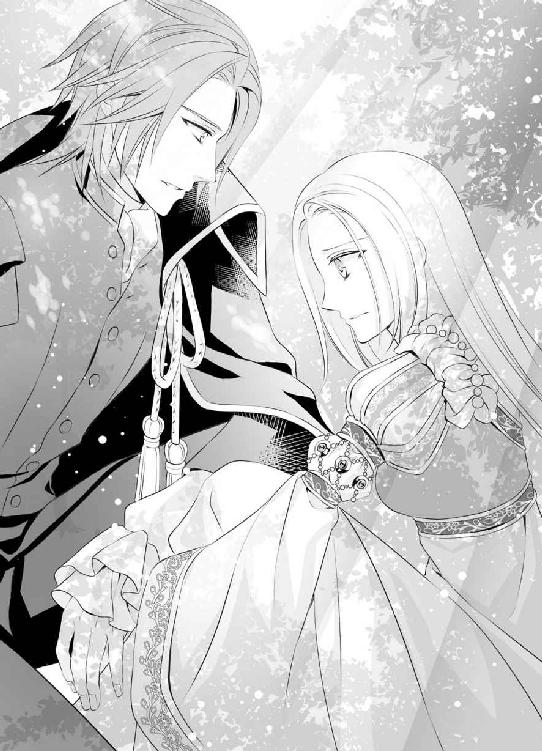
「それは......いつからですか？」
「いつから？」
思わず訊いてしまうも間髪入れずに訊き返され、ブランシュは焦った。顔をのぞき込もうとするディークハルトの視線を避け、俯いたままの顔を少し横向けながら答える。
「木はしっかりと根づいているし、花も咲きほこっているので、造ったばかりには見えなくて......時間をかけて造られた庭なのかと......」
感じたことをそのまま言葉にして伝えると、ディークハルトが感心したような息を吐いた。
「ああ、そのとおりだ。よくわかったな。あなたの噂を聞いて、なんとか花嫁にしたいと、毎日会いに行くようになってからすぐに造り始めた。毎日あの場所であなたを待っている間、景色も雰囲気もよく身体に刻まれたから、再現度には自信がある」
その自信をみなぎらせたような声にはブランシュの頬もかすかに緩んだが、『噂』という言葉がディークハルトの口から出てきた時を逃さず、問いかける。
「私の『噂』というのは、どういうものだったのですか？」
「え？」
ディークハルトはふいを突かれたような声を発したが、すぐに答えをくれた。その声音は優しく、ブランシュを元気づけるような雰囲気も含まれている。
「ロアージュ神聖国には実は白髪・白目の王女がいて、どこかに隠されているというものだ。数か月前くらいから急に耳にするようになった。あなたはずっとあの場所で静かに暮らしていたのに、どうして今になって、いったいどこから情報が漏れたのか、不思議なものだな......」
「ええ......」
ブランシュはどきどきする胸を懸命にこらえながら、更に核心に切り込んでいく。ここまできたら、胸に抱えている不安をもう本人に確かめてしまおうと思った。そうすれば侍女たちが話していたことが真実なのか、そうでないのかはすぐにわかる。
「噂を聞いて私に会いに来たのは、この国に『聖王女』の言い伝えがあったからですよね？」
「え？」
「白髪・白目の『聖王女』が、国を繁栄に導くというもの......その『聖王女』を連れ帰ったら、あなたの武勇伝がまた一つ増えるからですか？ でもごめんなさい......私にはやっぱり、そういう力はありません。『聖王女』などではありません」
「ブランシュ！ 俺は......！」
ディークハルトは勢い込んで何かを言いかけたがそこでいったん言葉を切り、口調と声音を変えた。
「以前にも言ったと思うが、俺があなたを花嫁にしたのは、あなたが『聖王女』かもしれないからじゃない。いや、始めは確かにそれがきっかけだったが、実際にあなたと会って気持ちは変わった。あなたが何者でも関係ない。ただあなた自身を俺のものにしたくなった。今もそうだ。だから俺はあなたに『聖王女』を求めてはいない」
「でも......ディークはそうでも、周囲は違いますよね？」
ディークハルトは真摯に気持ちを語ってくれたが、ブランシュはそれを遮った。侍女たちが話していたとおり、周囲がブランシュにそれを求めているのなら、かえってディークハルトが困った立場になっていることもあり得る。
国を繁栄に導く『聖王女』を妻にしたはずなのに、一向にその兆候がないと、後ろ指を指されるのはディークハルトなのだ。
「だったら私、やっぱりあなたの傍にいないほうが......」
その場から逃げかけたブランシュの肩をディークハルトが掴み、身体ごと向きあう体勢にした。
「何を言ってるんだ、ブランシュ」
「やっ......放して！」
ブランシュは身体を捩って逃げようとしたが、逆に息もできないほどに抱きすくめられた。強引に抱きしめられ、ブランシュはディークハルトの胸を強く押して、その束縛から逃れようとする。
「放してください......！」
ブランシュの頭に頬を寄せたディークハルトは、抱きしめる腕にますます力を込める。
「いや、放さない。あなたは思い違いをしている、ブランシュ。その誤解を解くまでは、俺はこの腕を絶対に放さない」
「いや！ もう、やっ......」
ブランシュにとってディークハルトの腕は、誰とも関わらないようにと思って生きてきた中で、何度拒絶してもくり返し差し伸べられた、かけがえのないものだ。自分は他人を不幸にすると思い込んでいた心を救い、助けてくれた大切なものだった。
それだけを信じてここまで来たが、自分の存在が彼の迷惑になっているのかもしれないと知ってしまった以上、何の憂いもなく身を預けることはできない。大切だからこそ、手放さなければならないという思いが大きい。
「もとは、数ある武勇伝の中の一つだったのでしょう？ だったらもういいじゃないですか。白髪・白目の人間を一度は国に連れ帰ったのだからそれを自慢にして、皇妃にするのはもっとふさわしい女性でも......」
つい本心とはまったく違う言葉が口を突いて出てしまう。それに対する返答は聞きたくないとばかりに耳を両手で覆っているのに、ディークハルトはそれを気にした様子もなく、頭に直接囁きかけるような近さで、言葉を続ける。
「......確かに始めは興味本位だった。それは認める。否定しない。そのことがあなたをこんなに傷つけているとは思っていなかった。すまない、ブランシュ......何度でも詫びる。許してくれ」
ディークハルトの腕の中で、ブランシュこそ何度も首を横に振る。
「ちが......違うの！ 謝るのは私のほうです！ 本当にたくさんのものをディークに与えられて......それなのに何一つ返せなくて......傍にいても、ただあなたを困らせてしまう存在でしかないのじゃないかと......」
「そんなことはない！」
応える声は力強くきっぱりとしており、そのことがブランシュの胸を痛くする。
「言っただろう。最初は確かに興味本位だったが、そこから本気の想いに変わるのに時間はかからなかった。すぐに本気で、他の誰でもなく俺が、あなたを幸せにしたいと思うようになった。変わり身が早いと非難するか？ でもあなたもそうだろう......始めは俺のことなど何とも思っていなかった。それどころか疎ましく思っていたはずだ。違うか？」
「それは......違わないです」
これまでの静かな日々を変えることが怖くて、自分が相手に与えるかもしれない影響が怖くて、ブランシュはディークハルトに背を向けて、遠ざけようとばかりしていていた。現に今もそうだ。
しかしその訪れを実は楽しみにしている自分に気がつくのにそう長い時間はかからなかった。ディークハルトの言葉を借りれば、彼と同じようにブランシュもまた、変わり身が早いということになる。
素直に自分の気持ちを吐露したブランシュの言葉に、ディークハルトの腕がかすかに緩む。肩にまわされていた右腕がブランシュの後頭部に移動し、その頭を彼の胸に押しつけるようにして抱きしめ直した。
「俺はまだ、あなたに伝える言葉が足りていなかったかもしれない......すまない、ブランシュ......心から愛しているんだ。俺の全身全霊の力で、あなたを幸せにしたい。何からも守りたい。あなたが笑顔でいられる場所を作りたい」
「...............っ」
両手でぴったりと塞いでいたはずなのに、ブランシュの耳にはディークハルトの言葉が全て届いていた。その中でもありったけの想いを込めて紡がれた今の言葉は、どれほど耳を塞いで背を向けようとしても、もうとても無視できるものではない。
熱い思いが胸に込み上げてきて、固く閉じたままの瞳に涙が溢れる。
「ディーク......私も......私も愛しています......私の世界は、あなたが全てです......」
「ブランシュ」
唇を震わせながら懸命に想いを言葉にすると、身体を強く抱きしめていた腕が解かれ、優しく口づけられた。想う人から同じような想いをぶつけられ、それを事実として受け取り、溢れる涙が止まらない。
ブランシュは両耳を覆っていた手をどけて、恐る恐るディークハルトの背にまわした。ただ唇を重ねるだけだった口づけが、深く激しくなる。
「んっ......んう......っ」
貪るような口づけに応え、ブランシュもディークハルトを積極的に求めた。改めて確認したお互いへの想いをもう一度確かめあうかのように、深く舌を絡め、どちらがどちらの身体かわからなくなるほどに、深く求めあう。
「ん、んっ......っあ......」
ドレスの上から背中を撫でていたディークハルトの手が、そのまま背中に並んだ釦を外し始めたので、ブランシュは身じろぎした。
「あ......だめ......ディーク、んんっ」
口づけの合間に拒否の言葉を紡ぐと、それを封じるように深く口づけられる。
「どうして？ あなたがくれた言葉を俺に確かめさせてくれ。あまりに嬉しくて、本当に自分に向けられたものなのか、信じられないんだ」
「本当です。本当だから......あっ、こんなところで......んっ」
「大丈夫。ここにはあなたの部屋からしか入れない。あなたのために造った庭だから、他の者が来ることはない。遠慮なく乱れて構わない、ブランシュ」
「そんな......あっ、ああっ」
釦を外して緩められたドレスは肩から下ろされ、ブランシュはディークハルトの唇を素肌で受け止めた。むき出しになった胸の膨らみに、当然のごとく雨のように口づけが降らされる。
「あっ、ああっ、だめ......っ」
それでもまだ躊躇するブランシュの身体を抱え、ディークハルトが木立の中に移動した。
「じゃあ、ここならいいだろう？ もし誰かがこの中庭に入ってきても、すぐには見つからない」
「でも......ああっ」
胸の頂の突起を強く吸い上げられ、ブランシュは背を反らせて悶えた。ディークハルトの手はドレスの裾を捲り、薄い下着に覆われた太腿を撫でてくる。
「ブランシュ、ここに」
地面の上に座り込んでしまいそうだったブランシュを気遣ってくれたのか、先に座ったディークハルトの脚の上に乗るように、身体を誘導された。
「でも......」
それでは彼が汚れてしまう。ブランシュはためらいを見せたが、気にするべきなのはその点ではなかった。大きく脚を広げてディークハルトの上に跨るような格好になってしまい、真っ白な頬を羞恥に染める。
「だめ......やっぱり」
「いいから」
逃げようとした腰を掴んで強引に座らされ、ブランシュは更に顔を赤らめた。布越しではあるがディークハルトの熱い昂ぶりが、脚を開かされると共に大きく開放する形になってしまった秘所のすぐ傍にある。しかもその存在を知らしめるために、ぐいぐい押しつけてこられる。
「いや......だめ......ぁ」
ただでさえ胸への愛撫で身体の奥には情欲の炎が灯ってしまったのに、官能を煽るような動きをされ、敏感な部分が濡れるのをこらえられない。このままでは自分の下着もディークハルトの服も汚してしまうかもしれないからと、ブランシュは彼の上から下りようとするのに、腰骨を掴んだ大きな手が、解放してくれない。
「逃げるな、ブランシュ。そのまま受け入れてくれ」
言うが早いか、ディークハルトはブランシュの下穿きを大きく引き下げ、脚から抜き取ってしまった。
「ああ！ いやぁ......っ」
恥じらうブランシュの腰を掴み直し、もう一度彼の上に座らせる。先ほどは服を着たままだったディークハルトも、ズボンの前をくつろげて、己のものを取り出していた。その上に直に腰を下ろされ、ブランシュは驚きに瞳を見開く。
「あ？ あぁ......っ」
逃げる間もなく、その上に深く腰を沈めさせられた。すでにたっぷりとした蜜を滴らせていた蜜壺に、剛直がずぶずぶと奥まで埋め込まれていく。
「ああっ......ああん」
後ろに倒れそうになる身体を支えるため、ブランシュはディークハルトの首に腕をまわし、縋るように抱きついた。するとその動きを利用され、更に奥まで楔を進められる。
「ああ......あっ、あ」
身体の奥深くまで、彼のものを受け入れてしまった。乱されている胸もとを除けば、ブランシュの服装はほぼ正常で、遠くから見れば綺麗な令嬢が、恋人の膝に座って抱きしめられている幸せそうな図だ。
しかし実際には、大きく膨らんだドレスのスカート部分の下で二人は深く繋がっている。その背徳的な行為に、ブランシュは首を振って抗おうとする。
「だめ......あ......こんな......っ」
「だけど全部挿入ってしまった。ほら、わかるか？ あなたの胎内が俺で埋め尽くされている」
「っあ......言わな......で......ああっ」
その事実をはっきりと感じさせようとでもいうのだろうか、大きく腰をまわされ、ブランシュは長い髪を振って悶える。
「あっ、ああっ......いや......あっ」
「言っていることと身体は真逆だな、ブランシュ。どんどん溢れてくる」
身体の奥から湧き出る愛液をかき混ぜるように、大きな音を立ててぐちゅぐちゅと胎内を攪拌され、ブランシュは首を振った。
「ちが......私、そんなんじゃ......ああっ」
「素直になればいい。俺と一つになれて嬉しいんだろう？ 俺は嬉しい。確かにあなたの言うとおり、煩わしいことを言ってくる者もいるし、朝から厄介な仕事もあったが必死で終わらせてここへきてよかった。この場所であなたと愛しあえるなんて思っていなかった」
ディークハルトが頭上を見上げた気配がしたので、ブランシュも固く閉じていた瞳を開け、つられるように上を見た。そこには木々の緑の葉越し、青い空が切れぎれに見えていた。
ディークハルトとあの湖の畔で会うのは早朝がほとんどだったので、昼の眩しい光の中で向きあうと不思議な気がする。しかも穏やかで静かなこの美しい光景の中、実は淫らに身体を繋いでしまっているのだ。そう考えると、ブランシュはそうとは意識せず、ディークハルトのものをきつく締めつけてしまう。
「っ......ブランシュ、あまり刺激しないでくれ、我慢が利かなくなる」
「え？ あ......や、あっ......私、そんなつもりじゃ......」
「ああ、でも身体のほうはそのつもりのようだ。悦んで俺を受け入れている。放すまいかと必死に絡みついてくる。悦すぎてすぐに達ってしまいそうだ」
「やっ......や、ああ......」
この格好のままでディークハルトがブランシュの胎内に欲望を放出すれば、いずれは下にいる彼の上へと流れ落ちてしまう。それは困るとブランシュは首を振る。しかしディークハルトには、違った意味に受け取られたようだ。
「わかった。じゃあ少しでも長く繋がっていよう。俺もそのほうが嬉しい」
「違うの！ ちが......あ、あん」
「何が違うんだ？ またそんな蕩けそうな顔をして......もっと淫らに啼かせたくなる」
ディークハルトは腰を掴んでいた手を大きく上下させて、彼の身体の上でブランシュの華奢な身体を激しく上下させた。
「あっ、ああっ、ああんっ」
太く硬いもので身体の中心を下から串刺しにされているような格好で、胎内を何度も大きく出入りさえ、ブランシュは首を振って悶える。
「待って、こんな......あっ、ああっ」
懇願してもディークハルトはその動きを止めるつもりはないらしく、しかもますます大きくしていく。
「やっ、あ......あんっ、ああぁっ」
ブランシュは長い白金色の髪を背中で揺らし、何度も白い喉をのけ反らせた。濡れた襞を大きく擦られ、胎内はかなりの刺激に震えているのに、その身体の奥を穿つかのような行為を止めてもらえない。
それどころかブランシュが淫らな声を上げれば上げるだけ、羞恥に白い肌を赤く染めれば染めるだけ、ディークハルトの行為は苛烈化していく。
彼に身体に打ちつけるかのように激しく腰を上下させられ、ブランシュは悲鳴を上げた。
「あんっ、いや......ああっ、ああ......っん」
「すごいなブランシュ、胎内がびくびくしている。極めてしまいそうなのか？ そのまま達ってしまえ」
身体を大きく上下させられると同時に下から突き上げられ、ブランシュはディークハルトの上に跨った恥ずかしい格好のままで、快感の頂に押し上げられた。
「あああっ、ぁ......あ──っ！」
絶頂が大きすぎて、ディークハルトの上でびくびくと身体が跳ねる。ついで襲ってきたのがとてつもない脱力感で、ブランシュはそのまま彼の上に突っ伏してしまいそうになる。しかしそうさせてはもらえず、倒れそうになった身体をまた起こされる。
「たっぷりと溢れたなブランシュ、もうぐちゃぐちゃだ」
その淫音を聞かせようとでもするかのように、ぐちゅんぐちゅんと淫らな音を立てて大きく胎内を出入りされ、極めたばかりの敏感な襞を擦られたこともあって、ブランシュは涙声で懇願した。
「やめてぇ......あぁ......ああっ......ん」
「いや、まだだ。もっと啼かせたい。もっと乱したい」
恐ろしい言葉と同時に、ディークハルトが地面にごろりと背中を倒した。今までは向きあって座っていた格好だったが、これでは完全に、ブランシュがディークハルトの上に乗った格好になる。
これまで激しい上下運動を強いていた腰の手も、その体勢を維持するに留まり、ブランシュはいったいどうしたらいいのかわからない。
「あの......ディーク......？」
恐る恐る呼びかけてみると、嫌な予想を全面的に肯定された。
「今度はあなたが自分で動いてみてくれ、ブランシュ」
「そんな......！ そんなこと、私できな......」
「いいや、できるはずだ。俺の動きにあわせて自然と腰が動いてしまっていることを、あなたも自覚しているだろう。それを思い出して、今度は自分で気持ちよくなるように動くんだ。そして俺も気持ちよくしてくれ、ブランシュ」
「ディーク......」
いたずらっぽい調子ではなく、優しげな笑顔で改まってそう頼まれればブランシュはいやだと言えない。ディークハルトが自分に与えてくれた多くのものに深く感謝している思いがあり、なんとかそれを返せないかといつも思っているからだ。
だからといって淫らな奉仕でその恩を返せと言われても困る思いのほうが大きいが、彼がそう望むのならと、ブランシュは深く顔を伏せたまま頷いた。
「わかりました。でも、うまく動けるかわかりませんけど......」
「大丈夫だ。その時は俺も手伝う」
それは喜ぶべき申し出なのか、それともやはりどうあっても自分で動かなければならない事態を嘆くべきなのか、迷いながらブランシュはたどたどしく、ディークハルトの上で身体を上下させ始めた。
「あっ......ぁ......っん」
身体の奥に彼のものが押し入り、抜け出ていく感覚が、それをただ受け止めている時よりもかなり大きい。これからどうなるのかの予想がつき、そのままに刺激が与えられるからかもしれない。身体の奥に湧き上がってくる快感が、自ら腰を上下させることで生み出されているのかと思うと、ひどくいけないことをしているかのような罪悪感に苛まれる。
「あ、あ......こんなぁ......ああっ」
ディークハルトの身体を勝手に使い、独りで快感を貪っているかのようだった。しかし決して独りではない。ブランシュの動きに従って胎内に取り込まれるディークハルトのものが、次第に大きさと硬さを増していくことがわかる。地面に横たわる彼の呼吸は荒く、表情もどこか悩ましげで、そんな顔をさせているのは自分なのかと思うと、ブランシュの胸の音も壊れそうに大きくなった。
「あんっ、あっ、いや......あっ」
否応なく高められる快感に引きずられるように、自ら動きを大きく早くしてしまう。
「あんっ、あんっ、あ......ああっ」
「いいぞブランシュ......なんて淫らな顔なんだ......」
「あっ、ああんっ、いや......いわな......で......っ」
「自分で腰を振って、快感を貪っていてもあなたは美しい......ただいつもの清廉さより妖艶さが勝って、もっと淫らなことをさせたくなる」
言葉で責められ、ブランシュは肌を粟立てた。もう今にも極めてしまいそうになり、しかしディークハルトの上に背を伸ばして跨っていることが辛く、前かがみになると、下から強く抱きすくめられた。
「あっ、あっ」
胸と胸をあわせるようにしながら結合部分を擦りあわせ、舌を絡めあいながら激しく抽挿される。
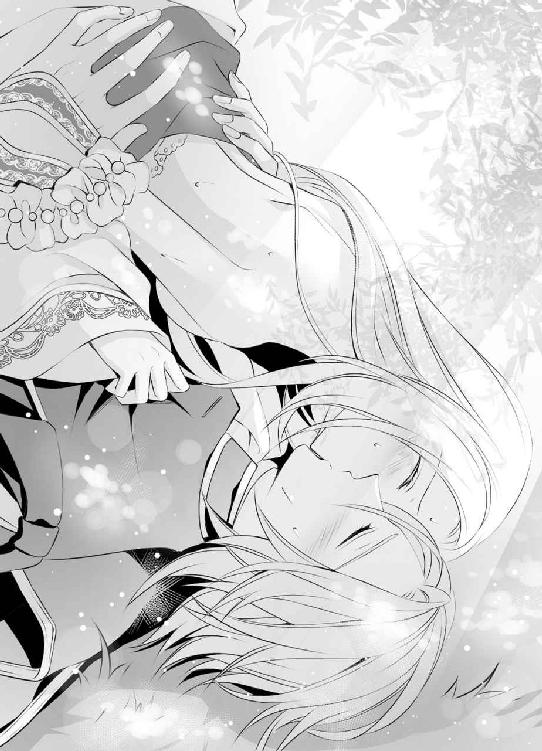
「んっ、んんっ......んんっつ！」
強く舌を吸い上げられながら頂点を極め、嬌声を発せられなかったブランシュは、その代わりのように四肢を痙攣させた。
「んっう......ん、んっ」
ディークハルトを受け入れている蜜壺が、まるで自分の身体の一部ではないかのように、どくどくと大きく脈打っている。それは胎内に吐き出されるはずの白濁を身体の奥まで取り込もうとする蠕動で、蜜壺全体が吐精を促すように、ディークハルトのものを強くしめつける。
「あっ、あっ......ぁ......」
ようやく解放してもらえた唇からは、ひっきりなしに熱い吐息が漏れ、嚥下できなかった唾液が唇の端を濡らしていた。
その顔を見上げ、ディークハルトは嬉しそうに笑う。
「ますます蕩けそうな顔になったな、そんなに気持ちがよかったか、ブランシュ」
「......っ......あ」
その問いに答えることなどできず、ブランシュは顔を背けてしまおうとするのに、顎を掴んでまたディークハルトのほうを向かされる。
「答えてくれ、ブランシュ」
まだディークハルトのものを深く受け入れたままの蜜壺がどくんと大きく脈動し、それが答えになったはずなのに、許してもらえない。言葉にするのは恥ずかしい事実を、ブランシュが口にするまで許すつもりはないらしく、ディークハルトはまっすぐに顔を見上げてくる。
消えていなくなってしまいたい心境になりながら、ブランシュはその言葉を口にした。
「気持ち......よかったです......あぁ......」
恥ずかしくて顔を伏せたブランシュを、顎に添えたままだった手で再び上向かせ、ディークハルトはもう一つ問いかけてくる。
「どちらがよかった？ 俺にされるのと自分でするの」
「そんな......！」
どちらと答えても、自分がとても淫猥な女になってしまう気がして、ブランシュは言葉になどできない。ディークハルトに動いてもらうのでも、自分で動くのでも、結局は快感を貪る行為には違いないのだ。しかもブランシュの本音は、更にもっと罪深いものだ。
「答えてブランシュ」
いつまでも返事をしないブランシュに焦れたように、ディークハルトが下から大きく突き上げてきた。
「きゃあっ、あっ......あ」
それで悲鳴を上げて快感に歪む顔を、ディークハルトにじっと見られているのかと思うと、それだけでブランシュの身体の奥からはまた新しい蜜が湧く。
「どちらがよかった？ 答えないのなら、このままめちゃくちゃに突き上げる。そのほうがいいか？」
「待って！ 私......」
不安定な格好で身体を揺さぶられると、またあっさりと快感の頂に上り詰めてしまいそうで、ブランシュは焦った。しかも今の体勢のままだと、その間の顔をずっとディークハルトに見られることになる。
蕩けそうな顔をしているとあまりに言われるので、行為の間自分はどれほど淫らな顔を彼に見せてしまっているのだろうと思うと、いたたまれない気持ちが大きかった。これ以上見られないためにも、せめてこの格好だけは、早く改めてもらったほうがいい。
「どちらも......どちらもです......あっ......ちが......っ」
嘘を吐くのは得意ではなく、正直な気持ちを答えたが、言ってしまってからしまったと思った。これでは淫らな性分を自ら暴露してしまったようなものだ。決してそうではなく、辱めから逃れるための答えだったはずなのに、ますます自分を追い詰めてしまっている感がある。
焦ったブランシュは両手を振り、必死に間違ったことをディークハルトに伝えようとした。
「違う......違うの......っん、私そんなこと思ってな......あっ、ああっ」
しかしディークハルトはブランシュの腰を掴み直し、すでに明らかな意志を持って下から大きく胎内を突き上げ始めている。
「わかった。これからは俺が動くのもあなたが動くのも織り交ぜて、もっと感じさせる......だからその淫らな顔をもっともっと見せてくれ」
「いや......も、見な、で......いや、あ、ああっ......っん」
言葉でどれほど抗っても、彼に与えられる刺激を心地いいとすでに知ってしまっている身体は易々と快楽に落ち、胎内に出入りするディークハルトのものを切なげに締めつける。
「淫らで美しい俺のブランシュ......もっと蕩けさせよう......」
ブランシュを苛むディークハルトの責めには終わりが見えず、このまま身体を揺さぶられ続けていると、理性を全て失ってしまいそうで怖かった。
「いやっ、や......ぁ、見ないで......あ、あああんっ」
四肢を引き攣らせて何度極めても、またゆっくりと抽挿を再開される。胎内をかき混ぜられ、ぐちゃぐちゃに乱されて、甘い声を上げさせられる。
「あんっ......もう、も......やあ......っ、あ」
「まだだ、ブランシュ......あなたが自ら俺を求めるようになるまで」
「そんな......あ、ああっ」
「何度でも、毎日でも、こうしてあなたを淫らに啼かせよう......愛している、ブランシュ」
「私も......私も愛してる......ディーク......ああっ！」
だからこそ、こうして身体を重ねる行為にも、溺れるほどの快感が生まれるのだとブランシュが実感した時、身体の奥深くでディークハルトのものが大きく膨らむ感覚がした。
「あああっ」
胎内に打ちつけられる飛沫の熱さと激しさに、ブランシュは涙を浮かべて肌を震わせる。その身体をしっかりと抱きしめ直し、ディークハルトは白濁を注ぎ続ける。
「これも気持ちいいだろう、ブランシュ」
「あっ、あぁ......気持ちいい......」
誘導されるままに思わず本音を漏らしたブランシュに、ディークハルトが嬉しげな笑顔を向けた。
「なんて顔をしてるんだ、ブランシュ......これまで見た中で一番淫らで、蕩けそうだ......」
「だって......あ、あぁ......っ」
身体の奥深くにディークハルトの精を受け、全てを浸食されるようなこの感覚が、幸せで毎回涙が浮かびそうな気持ちになるのだ。思いは身体に伝播して、白濁に侵される蜜壺はこれ以上ないほど彼のものを締めつける。その時に自分がどういう表情をしているのかまで、ブランシュは把握しきれない。
「嬉しくて......私......あ......」
その言葉をはっとしたような表情で受け止めたディークハルトが、快感の余韻に震えるブランシュの身体を抱き直し、耳もとで囁く声も変えてきた。
「そういうふうに言ってもらえて、俺こそ幸せだ、ブランシュ。ありがとう」
「はい......はい」
涙ながらにディークハルトの背に腕をまわすと、優しく口づけられた。
「愛している」
「私も、愛しています」
その思いを身体でも表すように、いまだに彼と深く繋がったままのブランシュの蜜壺はどくんと大きく脈動し、ディークハルトのものもそれに応えるように、最後の一滴を膣内にどくりと放出した。
チチチとどこからか小鳥の鳴く声が聞こえ、ディークハルトの腕の中でこの上ない幸せをかみしめていたブランシュはふと空を見上げる、
「え......？」
そこには木々の間を飛ぶ小さな鳥の姿があった。しかも一羽ではない。同じ種類だと思われるもう一羽と、戯れるように飛んでいる。
頭上を見上げたまま呆けてしまっているブランシュの視線の先を追い、自らも木々の梢を見上げて、ディークハルトは嬉しげに笑った。
「ああ、あれか......あれは、俺の作った巣箱に初めて巣を作ってくれた二羽だ」
「俺の作った巣箱......？」
思いがけない言葉に首を傾げるブランシュの様子を見て、ディークハルトの笑顔はますます大きくなる。
「ああ、暇を見つけては作っている。そしてこの中庭の木に設置して......今はまだ数が少ないが、いずれはあの湖の畔でそうだったようにあなたの周りにたくさんの鳥が集まればいいと思っている。俺はもう一度あの光景が見たい。もちろん、あなたがいやでないならだが......」
「いやなはずありません......！」
湖の畔で鳥たちと戯れるひと時は、ブランシュにとって大きな心の支えになっていた。今はその場所をディークハルトと二人で過ごすひと時に取って代わられたとはいえ、やはり心安らぐ思いがすることは間違いない。
それを知っていて、新しい環境の中でも設けてやろうという気遣い。これまで毎日、あの湖の離宮を訪れながら、忙しい公務も一日として欠かさず、その上この中庭をブランシュのために整えてくれていたことを思うと、またその愛情に感謝する気持ちが深くなる。
「ありがとう」
誰が何を言おうとその気持ちを信じていようと、そしてためらうことなく、自分も同じほどの愛情を返していこうとブランシュは想いを新たにし、身体にまわされたたくましい腕にそっと頬を寄せた。
その後、二人は乱れていた服を整えてから何食わぬ顔で部屋へ戻った。幸い、侍女たちの掃除はもう終わっており、部屋には誰の姿もなかったが、もし誰かいたとしたら平静を保てていたかはブランシュにはわからない。
中庭での行為が濃厚すぎて、身体に力が入らない。足がふらふらとし、椅子まで帰るのがやっとだった。身体の奥に異物感を抱えたまま腰を下ろすと、ディークハルトに笑われる。
「大丈夫か？ 本当は湯浴みして身体を綺麗にするまでしてやりたかったんだが、どうやら時間がないようだ」
二人が部屋へ帰ると、大切な用があるので今すぐ執務室へ戻ってほしいというオスカーからの伝言がちょうど届いたところだった。
「話？ 今日はいつも以上に長くあいつと仕事をして、おかげでブランシュのところへ来るのが遅くなったんだから、話ぐらいする機会が午前中にいくらでもあったはずなんだが......」
ディークハルトはのんびりと支度をしているため、早急にと言われてきたらしい伝言係は気が気ではない。
「申し訳ありません。ですが急な知らせだったようで......！」
次第に顔色を失くしていく様子を見ておられず、ブランシュは進言した。
「ディーク......急いであげて」
その声に、ディークハルトがさもいいことを思いついたとばかりにふり返る。
「じゃあブランシュも一緒に来てくれ。執務室にいてもいいし、その奥の休憩部屋......覚えているだろう？ あそこで待っていてもいい。あなたが待っていると思えば、仕事の効率も格段に良くなるはずだから......ぜひ！」
「でも......」
以前、あの部屋で公務が終わるのを待っていた時は、その後濃厚にディークハルトと抱きあった。今日もまたそのつもりなのかと考えたが、ほんの今まで中庭で濃密に抱きあっていたのにと思うと、ブランシュは気後れする。
その思考を読んだようで、ディークハルトがにやりと意味深に笑いかけてきた。
「何を想像しているんだ、ブランシュ？ 俺はただ、仕事の後のお茶をあなたと飲みたいだけだ」
「あ......」
彼にはそういう意図はなかったのに、自分ばかりが艶めいた方向に考えてしまい、勝手に顔を赤くした現状が恥ずかしく、ブランシュの頬はますます赤くなる。
「わかりました。それなら私もご一緒します！」
慌てて立ち上がりかけ、脚に力が入らない状態だったことをすっかり忘れており、よろりとその場に倒れそうになった。
「あ......」
「大丈夫か？」
すぐにそれを支えてくれたディークハルトが、耳もとに唇を寄せて低く囁く。
「ご希望ならもちろん、そちらの要望も叶えるが？」
「き、希望なんてしていません！」
白い顔を真っ赤にして怒るブランシュを見つめながら、ディークハルトの深緑の瞳の目尻が下がる。
「ははは、そうか？ じゃあ俺の希望ということで......叶えてくれるよな、ブランシュ」
「え？ ......そんな！」
それではやはり、仕事の後でディークハルトとまた抱きあうことが確定になってしまう。
今度は顔を青くして呆然とするブランシュに、無理に答えを迫るまでは、ディークハルトももうしなかった。
「楽しみにしておく。さあ、これでこれからの仕事も、はかどりそうだ」
「ディーク！」
非難の声を上げながらも、二人で過ごせる時間がまた持てることは嬉しいというのがブランシュの本音だった。それが純粋な茶会でも、艶めいたひと時でも──。
しかしオスカーの大切な話を聞いた後に、二人にそのような幸せな時間が訪れることはなかった。
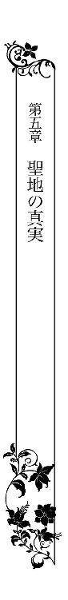
「何をのんびりしているんだ。急ぎだと言っただろう！ だいたいお前はいつも......」
ブランシュを連れたディークハルトが執務室の扉を開くと、部屋の奥からオスカーのものと思われる厳しい声が飛んできた。ブランシュは思わずびくりと身体を震わせる。
対して隣に立つディークハルトは、片手を上げて鷹揚に笑ってみせた。
「悪い。だがこれが最速だ。それで？ ようやく仕事が終わったばかりの俺をもう一度呼び戻すほどの急ぎの用とはなんだ？」
「いや、それは......」
急いでいたはずなのに微妙に言葉を濁すオスカーは、どうやらディークハルトの隣にブランシュの姿を認めて躊躇しているようだ。困惑したような視線をちらちらと向けてくる。ブランシュは気を利かせて自分から申し出た。
「あの、私......休憩室に行っていますね」
しかしディークハルトに、素早く腕を掴んで制止される。
「いや、あなたも一緒にいていい」
「でも......」
ディークハルトはブランシュの顔を見つめ、力強くて頷いてから、部屋の奥にある執務机の脇に立つオスカーへと視線を移した。反対脇にはユリウスの姿もある。
「用件はたぶん今朝話していたあれだろう？ だったらそろそろブランシュの耳にも入れておいたほうがいい......偵察隊が戻ったんだな。それで......どうだった？」
どうやら重要な話のようなのに、本当に自分がここにいていいのかとブランシュは迷う。
「......いいんだな？」
オスカーの問いかけも、ブランシュの同席を再度確認するものだったのだろうが、ディークハルトは思案する様子もなくあっさりと答えた。
「ああ、構わない。そもそもずっと隠しておけるものでもない」
「まあそうだな」
きっぱりとしたディークハルトの言葉にため息交じりに同意してから、オスカーは驚くべき話を始める。
「結論から言えば、情報は正しかった。ロアージュ神聖国の王都で、今日の未明、暴動が起きた。首謀者はおそらくごく一般の国民。幸い規模が小さく、すぐに鎮圧され、現在は街も平穏を取り戻しているそうだ」
「そうか」
オスカーの口調もそれに合槌を打つディークハルトの声も淡々としており、まるでなんでもないことであるかのように語られているが、それはブランシュにとっては聞き捨てならない話だった。
「......暴動？」
思いがけず耳にした祖国の名前と、その後の言葉がうまく頭の中で結びつかず、呆然と呟くことしかできない。
ブランシュの祖国──ロアージュ神聖国はヴァリド神教の聖地を有する国として、古くから他国に一目を置かれてきた存在だ。国民は敬虔なヴァリド神教信者ばかりで、争いを好まず穏やかな国民性であることは、広く国外にも知られている。
その祖国で暴動が起きたということが信じられず、ブランシュは何度も瞳を瞬かせた。
「そんな......！」
立ち竦むブランシュの肩をディークハルトが抱き寄せ、部屋の奥へと移動を促す。そうしながら、オスカーに問いかける。
「原因は？ 何もなければ暴動など起きないだろう」
「おそらく、これまで蓄積してきた不満が一気に噴出したといったところだ。ごく小規模なものは以前からあったようだが、それが次第に頻繁に、大規模になってきている。それを抑える宮廷の──ひいては王室の権威が弱まってきているということだろうな」
ロアージュ神聖国の王室を貶めるような発言をしたオスカーが、それを詫びるように自分に向かって頭を下げるので、ブランシュも慌てて下げる。その瞬間、オスカーのものとは違う声が部屋に響いた。
「でも、何度もくり返し起こる......しかもその規模がだんだん大きくなってるってことは、よほど切迫した状況でもあるんじゃないの？ 急いでどうにかしてほしいのに、王室が動いてくれない問題だとか......」
声の主はユリウスで、ディークハルトは話の続きを促す。
「何か知ってそうだな、ユリウス......神聖国で何があった？」
「王都で最近、原因がよくわからない病気が流行っているらしいよ。有効な治療法もまだ不明みたいだ......ただ、ヴァリド神教の聖地へ行くと、症状が和らいだり治ったりするらしくて、もともと信心深い国ではあるけど、おかげで教会の求心力が急激に高まっている感じかな。ちょうど王室と入れ替わりだね」
「へえ......興味深い話だな」
ブランシュを伴ったディークハルトが部屋奥の執務机に到着する頃には、二人の報告はすでに大筋が終わったようだった。椅子に座ったディークハルトは机に肘をつきながら、それぞれに指示を出す。
「じゃあそれに関しては、引き続きお前が情報を集めてくれ、ユリウス。場合によっては正式に援助を申し出る必要があるかもしれない」
「わかった」
ユリウスはディークハルトの言葉に頷くと、たった今ブランシュたちが入ってきたばかりの部屋の出入り口へと向かう。金色の髪を揺らして瞬く間に出て行ってしまった。
「暴動に関しても、これ以上大規模になったり続いたりするようなら、神聖国の王室に協力する形でうちの軍を派遣してもいい......オスカー。あちらの意向を確認しておいてくれ」
「そうだな」
オスカーも深く頷くと、机の傍から離れた。部屋から出ていく際、自分に向かって頭を下げられたような気がしたので、ブランシュもそれにお辞儀で応える。
これで広い執務室にディークハルトと二人きりになったが、ここへ来る前に考えていたような甘い雰囲気にはなりようがなかった。
彼らのやり取りを聞く限り、ロアージュ神聖国は現在、かなり不穏な状況にあるようだ。暴動は初めてのことではないらしいし、王都で病も流行っている。
まるで何かに追いつめられているかのような息苦しさを久しぶりに感じ、ブランシュは手で胸を強く押さえた。
「ディーク、あの......大丈夫でしょうか？」
彼ができるだけの手を打ってくれていることはわかるが、それでも気持ちが落ち着かない。もっと何か、根本的にやらなければならないことが抜けている気がする。
（それは......）
神聖国に何かが起こるたび、それは自分が招いた不幸なのだと己を責め、祈りに明け暮れる日々を過ごすことが、これまでのブランシュの人生の全てだった。
白髪・白目という不吉な容姿の者は、関わるものを不幸にすると神聖国では恐れられている。その災いが周囲に及ばないよう、神に真摯な祈りを捧げることが自分の義務であったはずなのに、その日々から遠ざかり、こうして今、ブランシュが異国の地で幸せに暮らしていることは罪のように思えて仕方ない。
（私が離宮に......帰ったほうがいいんじゃないかしら......）
そして神聖国のために静かに祈りを捧げる毎日に戻る──それは、王女でありながら不吉な容姿に生まれついてしまった自分の、変わることのない務めであり、果たさなければならない役目なのではないだろうか。
（でも......）
しかしそれを実行すれば、自身の幸せからは大きく遠ざかることになる。長く孤独に生きてきたブランシュがようやく手に入れた幸せ──ディークハルトの隣にいる毎日を、自ら手放さなければならない。それは想像するだけで、身を切られるように辛いことだった。
（どうしよう......）
迷う気持ちはあるが、やはり危機に瀕している祖国を、見て見ぬふりはできない。
（............うん）
覚悟を決めて、ブランシュはディークハルトに向き直った。
「ディーク！ あの、私......」
祖国のために、自分も自分にしかできないことをするべきだと決意し、「離宮に戻る」と口にしかけたが、それは先回りして阻まれた。
「ブランシュ、あなたが言いたいことはわかるが、それは受け入れられない......言っただろう？ 俺はもう絶対にあなたを離さない。神聖国へはウィスタニア帝国ができるだけの支援をする。あなたは俺の花嫁として、今までどおりここにいればいい」
「でも......！」
身近で不幸があるたび、国に不穏な出来事が起こるたび、その原因は自分にあると自らの存在を責め、一心不乱に神に祈りを捧げる──それが義務であるという考えから、ブランシュはどうしても抜け出せない。
これまでそうして生きてきたし、そうすることでしか、自分の存在を肯定できなかった。その行為を禁じられても、すぐには受け入れられない。
「でも私は......！」
その反駁の思いまであらかじめわかっていたかのように、ディークハルトは言葉を続ける。
「と言っても、おそらくあなたは納得しないだろうから、あえて今、話を聞いてもらったんだ......後でどこからか噂を耳にして、無駄に悩ませてしまうよりよほどいいからな......ブランシュ、これが妥協点だ。どうしても気になるのなら、一度だけ神聖国の様子を見に帰ってもいい」
「ええっ？」
まさかディークハルトの口からそういう提案が出てくるとは思ってもおらず、ブランシュはつい大きな声を上げてしまった。
その様子にかすかに目を細めながら、ディークハルトは大きな手でブランシュの長い髪の先をそっと摘み上げる。
「最近ああいった報告が多くて......あなたならいつかきっとそう言い出すと思い、準備だけは先にしておいた......だからもしそうしたいなら、いつでも行っていい。ただし、俺も一緒だ。少し気になることもあるし、オスカーたちに任せた件とは別に、自分の目でそれを確かめたい」
「でも......」
あまりにも思いがけない申し出に、いつの間にかブランシュのほうが躊躇する側にまわることになってしまう。
「いいのですか？ あの......ここを留守にして......」
ディークハルトが何者なのかまだ知らなかった頃は、離宮への毎日の訪れも、変わった人物だと驚きつつ受け入れられたが、その正体がウィスタニア帝国の皇帝だと知ってしまった今は、ためらいのほうが大きい。
彼が一日の中でずいぶん長い時間を、この執務室にこもったり、実際にどこかへ行ったりと忙しそうにしている様子を、一番近くで見ているのだから尚更だ。
「私は別に一人でも......」
心の中では大きな不安を感じながらそう言いかけたが、途中で遮られた。
「いや、行くなら絶対に俺も一緒だ。あなたが一人で神聖国へ帰ることは許可しない」
「............」
それには庇護の意味もあるし、様々な不安回避の意味も含まれているのだろう。
ブランシュ自身、一人で祖国へ帰り、またこのウィスタニア帝国へなんの憂いもなく帰ってこられる自信はまったくない。むしろ不安のほうが大きかったので、ディークハルトがきっぱりと言い切ってくれて安堵する。
「わかりました。それでは......ついてきてくれますか？」
「ああ、もちろん」
約束の印のようにそっと唇を重ねてから、ディークハルトの表情に少しいたずらめいたものが混じった。
「心配しなくても、俺の留守の間のことなら、何の問題もなくオスカーが処理してくれる」
「あ......！」
それに関しての苦情を、初めて会った際にオスカーから述べられたことを思い出し、ブランシュは大きく瞳を見開く。しかも自分は、これからはディークハルトが城を空けることのないよう、しっかり見張っていてくれと頼まれたのだった。慌てて顔を跳ね上げる。
「あの！ やっぱりだめです。ディーク......」
彼についてきてもらうなど迂闊に了承してはいけなかったのだと、ブランシュは今更ながら焦るのに、ディークハルトはそれもあらかじめわかっていたようで、さっさと席を立つ。
「何を言ってるんだ。あなたも了解したことだろう。そうと決まればすぐに行こう。今ならオスカーもいない」
「だめです！ やっぱりこんな......」
制止しようとするブランシュの手を引き、ディークハルトは大股で出入り口へと向かう。
「大丈夫だ、数日くらいまったく問題ない。それに、こうして問答しているよりすぐに動いて、なるべく早く済ませて帰るほうが、あいつの助けにもなると思うが......どうだ？」
しょせんブランシュの制止程度では、ディークハルトがこうと決めたことを覆せるはずもない。確かに彼の言うとおり、無駄なやり取りを続けているよりは、少しでも早く動いたほうがよほどいいという結論にたどり着く。
「そう......ですね」
ブランシュが賛同の意を見せたことに気をよくし、ディークハルトはその肩を抱いて更に歩みを速めた。
「よし、急ごう」
少し楽しそうな色を含んだその横顔が、祖国の不穏な情報を耳にして沈んでしまいそうだったブランシュの気持ちを、わずかに明るくしてくれたことは確かだった。
ディークハルトが操る馬に乗せてもらい、ブランシュはその日のうちにロアージュ神聖国の王都へと向かった。生まれた土地とはいっても、遠く離れた湖の離宮で育ったブランシュにとっては、そこは初めて訪れる場所だ。背後にディークハルトの存在を感じることが頼もしかった。
話に聞き、ブランシュが幼い頃から心の中で想像していたものとは、王都の雰囲気はまったく異なっていた。もっと多くの人が行き交い、活気に溢れていると思っていたが、通りを歩く人の数は少ない。馬も馬車も数えるほどしか通らない。
家々も扉や窓を閉め、まるで誰も住んでいないかのようだ。しかし煙突からは細い煙が立ち昇っており、店舗と思しき場所にはわずかながら人の出入りがあるので、決して無人ではない。
街全体が重く沈んだ雰囲気で、ウィスタニア帝国の帝都の賑わいとは比べものにもならなかった。
「............」
言葉もなく風景をじっと見渡しているブランシュは、髪色を隠すために外套の頭巾を深く被っている。目のすぐ上までを覆い、瞳の色もよく見なければわからない。白髪・白目であることを隠すための扮装だったが、その必要もないほど、出会う人は少なかった。
「確かに様子がおかしいな。前に来た時は、もっと賑やかな街だと思ったが......」
ディークハルトが呟いている内容を聞く限り、やはりこれは王都の本来の姿ではないらしい。『原因のよくわからない病が......』とユリウスが語っていたことを思い出し、ブランシュは背後に座るディークハルトの顔を仰ぎ見た。
「どうした？」
「大丈夫でしょうか......あの......ディーク、もしあなたが感染などしたら......」
祖国に異変が起きていると聞き、ブランシュはとてもじっとしておられずここまで来たが、果たしてそれにディークハルトを巻き込んでよかったのだろうかと、憂える気持ちが大きくなる。
彼はウィスタニア帝国の皇帝であり、もしものことがあってはならない身だ。共にいてくれることは心強いが、やはり自分一人で来るべきだったのではないかと後悔するブランシュに、ディークハルトは明るい笑顔を向ける。
「心配するな。ユリウスからさっき届いた最新の情報によれば、どうやら人から人へと感染する病ではないらしい。短期間の滞在で発症した旅人もいない。身辺にじゅうぶん気を配って、少しの間なら何の問題もないだろう。自分の身も、もちろんあなたも、俺が必ず守る」
「はい」
頼りになる笑顔を見つめていると、やはり心が落ち着く。ブランシュはディークハルトに感謝しながら、前方に視線を向け直した。
左右に商店らしきものが軒を連ねる大通りは、まだ日も高いというのに人影がまばらだ。前方から、疲れた様子の男性が歩いてくる。
「少し話を聞いてみるか？」
ブランシュが頷くと、ディークハルトは馬を止め、すれ違う男性に声をかけた。
「すまない、どこか泊まれる宿を探しているんだが......」
男性は立ち止まり、ゆっくりとした動きで馬上のディークハルトとブランシュを見上げた。動きに精彩がなく、疲れたような表情だ。瞳の色を凝視されないように、ブランシュは顔を伏せた。
「どうしてもここに用があるんじゃなきゃ、もっと先の街まで進んだほうがいい。ここはだめだ......」
深いため息を吐きながらの言葉に、ディークハルトが問い返す。
「どうして？」
「知らないのか？ だったら尚更先に進んだほうがいい。この街は......いいや、この国は呪われている」
（............！）
思いがけない言葉を聞き、ブランシュは外套の頭巾の陰から男性の顔を盗み見た。疲れ切った様子の男は、苛立ちを含んだような表情をしている。
「神聖国が？ そんなことはないだろう......ここは大陸でももっとも神の加護が厚い国のはずだ」
新しい情報を聞き出すためか、ディークハルトが何も知らないふうを装って問いかける。男はもう一度、深々とため息を吐いた。
「いいや、この国はもう終わりだ......」
そのまま歩き出してしまったので、さすがにもう一度呼び止めることまではできない。男性が遠くなってから、ブランシュはディークハルトに問いかけた。
「どういうことでしょうか？」
「さあ......だが、謎の病気の流行と関係している可能性は高いな。他にも話を聞いてみよう」
「はい」
進むうちに、人と人が争うような声が聞こえてきた。しかしよく聞けば罵倒しているのは一方のほうばかりのようだ。その口調はかなり激しい。
「あんたらのせいだろう！ 俺たちは何も知らないで犠牲になったんだ......娘を返してくれ！女房を返してくれよ！」
涙交じりの罵声を浴びせているのは、町人ふうの若い男だった。対して彼に詰め寄られているのは、街を守る警邏隊と思しき制服に身を包んでいる屈強な体格の男で、思いがけない状況に、ブランシュは慌てて頭巾を深く被り直す。
（何......？）
若い男がその後もくり返している言葉によれば、彼はどうやら例の病で幼い娘と妻を亡くしたらしかった。やり場のない怒りを、街の人々を守る役目の警邏隊の男にぶつけているのかと思われたが、どうも様子がおかしい。
「なんであんな恐ろしいことを、俺たち国民には秘密にしていたんだ！ ......しかも逃げられただって？ ......そりゃあ原因不明の病だって流行るさ......国まるごと呪われるに決まっている！」
男に掴みかかられた警邏隊員は、それをふり払うことこそしないが、かなり憮然とした顔をしている。
「俺たちだって何も知らなかった。知らずにもう何年も、この国のために働いてきた。明るい未来など決して訪れるはずのない国のために......知っていたのは国の頂点に立つ本当にごく一部の人間だけだ」
「くそおっ！」
警邏隊員の苦々しげな言葉を聞き、若い男は彼の襟もとを掴み上げていた手を放す。しかし苛立ちは増すばかりのようで、こぶしを握りしめ、誰にもぶつけようのない怒りを込めて、何度も地面を蹴った。
「くそっ。くそっ！」
「......行くぞ」
背後に座るディークハルトが低く囁き、馬を歩ませ始めたので、その様子を食い入るように見ていたブランシュははっと瞳を瞬かせる。
「......はい」
心に何か重くのしかかってくるような感覚がした。嫌な予感で血の気が引き、指先まで冷たくなる。しかし今のやり取りを見なかったことにはできず、緊張する胸を励ましながら、ディークハルトに問いかける。
「どういうことでしょうか？」
「さあ......な......」
いつになく歯切れの悪い返事は、彼もまた自分と同じ答えが頭に浮かんだからではないのかとブランシュは思った。それは二人にとって、遠くに見ていた喧嘩の中心に思いがけず自分が引っ張り出されたようなものだった。
（ひょっとして......）
男たちのやり取りの中で、『国民には秘密にしていた』『知っていたのは国の頂点に立つ本当にごく一部の人間だけ』という言葉がどうしても気にかかる。そういう表現で言い表されるものが、自分の存在以外にもあるのか、ブランシュは自信が持てなかった。
（やっぱり......私......？）
何かの拍子に、自分の存在が国民に知られてしまったのだろうか。そしてそのせいで、原因不明の病が流行っていると思われているのだろうか。
自分でもついそう信じてしまうような状況でも、他人からそう思われることはまた違っており、想像しただけでブランシュの心を深く傷つける。知らずに顔が俯いてしまう。
「大丈夫か？ あなたが辛いようならいったん帝国へ帰り、また俺だけで出直しても構わないが......」
心情を察してくれたらしいディークハルトが心配げに声をかけてきたので、ブランシュは顔を上げた。
「大丈夫です」
自分が祖国の人々から忌み嫌われる存在だということは、これまで強く自覚しながら生きてきたのだ。ディークハルトと出会う前の状態に戻ったのだと思えば、我慢できないことはない。
それに帝国へ帰れば、もうそれを意識せずに暮らせることもわかっている。それがどれだけ心の支えになっているかしれない。
「私は大丈夫です。先へ進みましょう」
「ああ」
通りを先へ進むと、今度は女性の声が聞こえてきた。
「お願いです！ どうか......どうかこの子を助けてください！」
まだ幼い子供を腕に抱いた母親だった。すれ違う人々は、気の毒そうな顔をしながらもどうすることもできずに親子の隣を通り過ぎていく。ブランシュは馬上でディークハルトをふり返る。
「あの、ディーク......」
力になれるかはわからないが、せめて話を聞いてあげたい思いで呼びかけると、力強く頷かれた。
「ああ、わかっている」
女性の傍でディークハルトは馬の歩みを止めようとしたが、それに先んじて彼女に近づく者があった。法衣に身を包んだ神官らしき人物だった。
「嘆くことはありません。すぐに聖地ムルカへと向かうのです。きっと神のご加護があることでしょう」
「ああ......神官様！」
女性は感極まって叫び、それまで遠巻きにして通り過ぎるだけだった人々が、彼女とその人物の周りに集まってくる。
「たとえ何に見捨てられても、神だけは決してあなたを見捨てたりなさいません。苦しい時も辛い時もあなたの傍にいて、そっと救いの手を差し伸べてくださいます」
「はい......はい！」
涙ながらに頷いた女性は、ぐったりとしたまま動かない子供を腕に抱き直して、顔を上げた。法衣の人物に指し示された西の方角へ向かって、一歩を踏み出す。二人のやり取りを見ていて、つられるように女性の後を追う者の姿もあった。
（ヴァリド神教の聖地、ムルカ......）
そこにいったい何があるというのだろう。ブランシュは外套の頭巾の下で首をめぐらし、女性に声をかけた法衣の人物を確認してみる。見覚えはないが、同じ神に仕える身だからだろうか、教育係として離宮を訪れてくれていたガルニエを彷彿させる雰囲気があった。
繁々とその姿を見つめるブランシュに、ディークハルトが問いかける。
「我々も行ってみるか？」
「......え？」
ブランシュは慌てて彼をふり返った。ディークハルトはいつになく真剣な顔をしている。
「聖地へ......だ。もとからそのつもりだった。ユリウスの話にも、そこへ行けば不思議と病が治ったり症状が和らいだりするとあっただろう。実際にどういうことなのか、自分の目で見てみたい」
「あ......」
何事も自分で確かめたものしか信じないディークハルトにしてみれば、それは当然の心情だ。ブランシュも、それを確認してみることはとても重要だと思った。
「はい、行きましょう」
素早く同意したのに、ディークハルトはまだ馬の向きを変えない。半身を捻ってふり返った格好のブランシュをじっと見つめている。
「ディーク？」
呼びかけると、それまで手綱を握っていた手が一本、ブランシュの外套の頭巾の中へと入り、そっと頬を撫でてきた。
「あなたにはもっと辛い思いをさせるかもしれない。すまない」
「あ......」
ブランシュの存在が国民に知られてしまった確証はまだないが、もし今回の流行病の原因だと思われているのならば、聞くに堪えない言葉が耳に入ってくるかもしれない。それをディークハルトは心配してくれているのだと、ブランシュにもわかった。
自分は大丈夫だという意味を込めて、首を横に振る。
「私は平気です。あなたがいてくれるなら」
たとえ世界中から否定的な態度を取られても、彼が味方でいてくれるのなら、ブランシュは顔を上げることができる。前を向くことができる。不自由な生活の中でも、それほどの相手と出会えたことがありがたく、嬉しい。
感謝の思いを込めてその顔を見つめていると、顔を近づけたディークハルトにそっと口づけられた。
「それは約束する。何があってもあなたを離さない」
「はい」
その約束に何よりも心を支えられて、強く頷くブランシュに、ディークハルトは馬の進路を西へと変えながら、語りかける。
「せっかく王都へ来たのに、ほんのわずかの滞在になってしまったな」
ディークハルトは残念そうな口調で語ったが、それまで大通りの遥か先に見えていた王城に背を向けることになり、ブランシュは残念なようなほっとしたような複雑な心境だった。
「いいんです」
きっぱりと首を横に振る。
「私のいるべき場所はここではありません」
それは以前、王都で生きることを許されなかった自分を慰めるため、ブランシュがよく口にしていた言葉だった──しかし今は違う。
「もっと他にあります」
手綱を握るディークハルトの腕にそっと頬を寄せながら語ると、強く抱きしめ直される。
「そうだな」
その居場所を与えてくれたことへの感謝を深く感じながらふり返り、もう一度彼とかすかに唇を重ねた。
王都から西へ進んだ土地にあるムルカという地域に、ヴァリド神教の聖地とされる場所はあった。小高い丘の上に石造りの神殿が設けられ、月に一度の聖ヴァリドの日や、女神ファルーナの生誕日などは多くの信者で賑わうと話には聞いていたが、特に特別な日ではない今日も、丘を登る道には長蛇の列ができている。
「なるほど......王都に住む人々が、ほぼこちらへ来ている状態なんだな」
感慨深そうにディークハルトは人の列を見渡しているが、ブランシュにはある意味、異様な光景のようにも思えた。
王都で出会ったわずかな人々と同じように、彼らは誰もが疲れ切った顔をし、深く俯きながら丘を上る。それなのに丘を下ってくる時には、ほとんどの者が晴れ晴れとした顔をして、元気に下りてくる。その変わりようが急すぎて、まるで現実ではないもののように見える。
「命に関わるような難しい病が、神殿を訪れただけで劇的に治るなんて......どういうことなのでしょうか？」
思わず声に出して疑問を呟くと、頭巾の上からディークハルトに頭を撫でられる。
「それを知るには、俺たちも実際に並んでみるしかないだろうな。特に祈りを捧げたいわけでも、身体の調子が悪いわけでもないが......」
言うが早いかディークハルトはひらりと馬から下り、ブランシュも下ろして、近くの木に馬の手綱を結んだ。列に並び、目の上に手をかざして、とても見えそうにはない先頭があるはずの丘の頂上を眩しげに見上げる。
「長い時間がかかりそうだな」
「ええ」
若く健康なディークハルトとブランシュにとっては、待つことはそれほど苦痛ではなかった。しかし列の中には、小さな子供もいれば老人もいる。症状が重篤な者もおり、できれば彼らを先に行かせることはできないかと、ブランシュは気がつけば長い列を交渉しながら何度も往復していた。
「どうか、お願いします。とても辛そうなんです」
しかし一刻も早く神殿に着きたい思いがあって並んでいるのはみな同じで、願いはなかなか聞き入れられない。仕方なく、帝国から荷造ってきた物の中から食べ物や飲み物を配り、少しでも症状が改善されないかと薬をわけ与えることが、今できる全てだった。
「ありがとう、お陰で楽になったよ」
「助かります」
それでも多くの人がブランシュに感謝して、ほんの少しずつわけあった物資を喜んでくれる。初めて会った祖国の人々に、これだけ多くの正の感情ばかり向けられることは、ブランシュにとって初めての経験だった。
「いいえ！ これぐらいしかできなくてごめんなさい......」
「なんて優しい娘さんじゃ......」
「まるで女神ファルーナの化身のようですね」
「あんた、いい嫁さんをもらったな」
「ああ、自分でもそう思う」
手放しでブランシュを褒められ、ディークハルトも嬉しそうだ。しかし長い列の中でそこだけ光でも射したかのように和やかだった場所は、ほんの些細なきっかけから脆くも消し飛んでしまった。病人たちが並ぶ列に横から吹きつけるように、突然、激しい風が吹いたのだ。
「きゃあっ」
「うわっ」
人々は風に煽られて声を上げたが、次の瞬間、それは本物の恐怖を感じさせる悲鳴に変わった。
「きゃあああっ」
「やめろ！ 近づかないでくれ」
「うわああ......どうしてこんなところに......！」
上手く動かない身体に必死で鞭打って、人々が一気に逃げ去った中にぽつんと取り残されたのは、ブランシュとディークハルトの二人だけだった。
突然の風に被っていた頭巾が取れ、白金色の髪を晒したブランシュの周りから、人々は必死の形相で逃げ出した。ほんのつい先ほどまで、口々にブランシュを褒め、女神の化身とまで言ってくれた人々は、彼女が本当の姿を晒した途端、誰一人としてその場に残らなかった。その事実が胸に痛い。
「ブランシュ......大丈夫か？」
心配げに声をかけてくれるディークハルトがいなかったら、どうなっていただろう。悲しみのあまり、ブランシュはその場から逃げ帰っていたに違いない。しかし彼が隣にいてくれたので、なんとかその場に踏み止まれた。
「大丈夫......です......なるべく目立たないように行動したほうがいいのに......私のせいでごめんなさい」
震える声で必死に言葉を紡ぎ、笑顔も取り繕って、もう一度頭巾を頭に被り直そうとしたが、ディークハルトにそれを阻まれる。
「もう隠さなくていい。今のでだいぶ先のほうまで情報は伝わっただろう。ここからは被っても被らなくても同じだ。だったらあなたはそのままでいい......今日も綺麗だ、ブランシュ」
これまで目にした中でも、もっとも優しげな表情で笑いかけられ、白金色の髪に口づけを落とされ、せっかく我慢した涙をブランシュはこらえきれなくなってしまいそうになる。
「ディーク......」
その腕に一度強く抱きしめられてから、ブランシュはディークハルトと共に丘を登り始めた。幸か不幸か、ブランシュの姿を見た者は少しでも離れようとするため、二人の前には自然と道が開く。
「おかげで到着が早くなりそうだ」
「ええ」
冗談めかしたディークハルトの言葉には笑顔で答えたブランシュだったが、聞こえてくる他の人々の声はかなりひどいものばかりだった。
「おい、あれが元凶じゃないのか？」
「どうしよう、目があった！ 俺、もう死ぬかもしれない......」
「なんでここにいるんだ。消えてくれよ」
心ない言葉に傷つくたびに、ディークハルトと繋いだ手に力が込められる。
「このぶんならすぐに着きそうだな」
「ええ」
もともとブランシュへの愛情を隠そうとしないほうではあるが、今のディークハルトは特に態度があからさまだった。ブランシュを自分のすぐ傍に引き寄せ、事あるごとに触り、口づけ、そうまでしても何の変化もないことを周りに見せつけているようにも感じる。
その優しさと、自分だけは何があっても絶対に味方だと常に態度で示してくれることに、ブランシュは感謝するばかりだった。
神殿前に着き、そこに広がる泉の前で、礼拝前の清めとして聖水を飲んでいた人々も、ブランシュの姿を見ると必死の形相で逃げ惑う。取り落とされた聖杯を拾い、精緻な模様を日に透かして眺めながら、ディークハルトは薄く笑った。
「なあ、ブランシュ......王都で流行っているという原因不明の病......本当に病気だと思うか？」
「............え？」
彼は突然何を言い出したのだろうと思いながらも、ブランシュはロアージュ神聖国に入ってから出会った、その病だと思われる人々の様子を思い返してみた。
（みんなとても疲れていて、だるそうで......発熱している人や意識がはっきりしない人もいた......）
症状を見れば病気のように思えるが、そうでない可能性もないわけではない。ディークハルトはいったい何が言いたいのだろうと、ブランシュは言葉の続きを待つ。
「少し気になることがあると、帝国を出る前に言っただろう？ 多くの人が一斉に発症して、同じことをおこなうと症状が治まる......それは病気というより、何かの中毒症状に似ていると思ったんだ」
「中毒......？」
思ってもいなかった発想に、ブランシュは瞳を瞬く。ディークハルトは、拾い上げて手でもてあそんでいた聖杯を顔の高さまで掲げて匂いを嗅ぎ、残っていた液体をかすかに舐めた。
「もっとも多くの発症者が出たのが先月の聖ヴァリドの日。次が今月の聖ヴァリドの日だ。どう思う？」
「どう思うって......」
ブランシュのせいで恐ろしい病が流行したと信じている人々は、やはり神の怒りだと感じるだろう。しかしそうではなく、その本当の理由を探ろうとしている身としては、そこに何か意味があるのかよくわからない。
「私にはなんとも......それに、もし中毒だとしたら、原因は何なのでしょう？ そして、ここを訪れた人が一様に回復するのは......？」
様々に思案するブランシュの様子を満足げに眺め、ディークハルトは再び口を開いた。
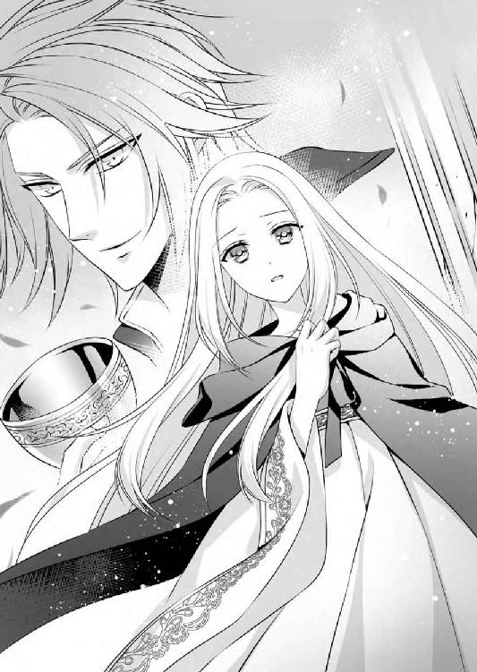
「正直言って、原因は俺にもまだわからない。でもここを訪れた者の症状が治まるのは、おそらくこの聖水のおかげだろう」
「聖水......？」
空になった聖杯を、ディークハルトはブランシュの目の前に差し出した。神殿に入る前に内側から身体を清めるという名目で渡されるその杯には、本来ならば聖地から湧き出る聖水が注がれている。
聖地に巡礼したことがある者なら誰もが知っている習慣だが、ブランシュは知識として知っていただけで、実際に目にしたのはこれが初めてだ。
持ち主が放り出して逃げてしまったせいでディークハルトが手にする聖杯は空だったが、わずかに残っている液体を舐めてみるように仕草で示された。
「......甘い？」
指示に従って恐る恐る舐めてみたブランシュは、それが無味の水ではなかったことに驚きを隠せない。
「そうだ」
ディークハルトはブランシュの手から聖杯を取り上げ、彼自身も指先ですくってもう一度舐める。
「おそらく毒消しの何かが入っているんだろう。ここまで来た者がすぐに具合がよくなる理由は、これで説明できる」
「それじゃ......」
「ああ、王都の人々は病気を患っているのではなく、何かの中毒症状を起こしていることは確定だ......問題はそれが何の中毒か、どうやって引き起こされたのかだが......毒消しの場がここであることを考えると......」
何かを語ろうとしていたディークハルトはそこでいったん言葉を切り、ブランシュの腕を強く彼のほうへ引いた。
「きゃあっ」
ディークハルトの胸にぶつかるように体勢を崩し、そのまま抱きしめられたブランシュは、抱きかかえられるようにしてその場から移動させられる。
「ディーク？ いったい......」
何が起こったのかと言いかけたが、最後まで言い終わらないうちにブランシュの視界にも、こちらへ向かって駆けてくる神官たちの姿が映った。
「いたぞ！ あそこだ。捕まえろ！」
大挙して押し寄せる神官たちの目的はどうやらブランシュの捕獲のようで、剣や弓の他に網を持った者の姿も見える。
「ブランシュをいったい何だと思ってるんだ」
ディークハルトは語気を荒げて言い放ち、抱きしめる腕に更に力を込めた。
「絶対に渡さない。少し無茶をするからしっかりと掴まっていてくれ」
「はい！」
ブランシュの返事と同時に、ディークハルトはこれまで向かっていた神殿奥とはまったく違う方向へ駆け出した。
その先に何があるのかは、ブランシュ同様この場所に初めて来たはずのディークハルトにもわかるはずはないのに、途中で行き止まりにぶつかることもなく、迷路のように複雑な回廊を迷わず進む。
「ディーク！」
愛する人の頼りになる姿を心強く思いながら、ブランシュは神殿内のとある区画へと、彼と共に逃げ込んだ。そこはどうやら神殿に仕える神官たちの住居部分のようだった。
まっすぐな通路に面して同じような形の建物が数多く並ぶ中、奥に一際大きな建物がある。それはもっとも高位の神官の住まいのようで、女神ファルーナの像が祀られた神殿にも一番近い。
通路の先を塞ぐようにその建物があるため、このままでは後ろから神官が追ってきた場合逃げ道がなくなってしまうと、ディークハルトはすぐにその場を立ち去ろうとした。
「こっちだ」
しかしちょうどその時、奥の一際大きな建物から出てきた人物の姿を見て、ブランシュは思わず彼を引き留める。
「待って！」
揃いの法衣に身を包んだ神官たちは誰もよく似て見え、見分けなどほぼつかないが、鈍色の法衣を着たその人物にだけは、ブランシュは見覚えがある気がした。離宮に隠れ住んでいた日々の中で、唯一外の世界との架け橋になってくれていた人物に、よく似ているように見えたのだ。
「......ガルニエ様？」
恐る恐る呼びかけたブランシュに、俯けていた顔を上げて向けられた視線は、確かによく知る人物のそれだった。
「これは......！ まさかこんなところでお会いするとは思ってもおりませんでした......そうですか。神官たちが騒いでいたのはあなたでしたか......お久しぶりです」
ブランシュが突然現れたことに驚いた様子はあるものの、ガルニエの表情に他の者のように嫌悪の感情はなく、以前と変わらない穏やかな眼差しを向けてくる。
ディークハルト以外は全てが敵のような状態の中で、ようやく味方になってくれそうな人物と偶然の再会を果たし、ブランシュは心から安堵した。
「お久しぶりです、ガルニエ様......離宮を出た際には、ご挨拶もせずすみませんでした......」
ずっと気にかかっていたことを真っ先に謝ると、ガルニエは緩く首を振ってみせる。
「いいえ、それは気になさらなくて大丈夫です。いつかあなたにも新しい世界が開かれればいいと、私はずっと願いながらお会いしていましたから......」
「はい......」
確かにガルニエは面会のたびに、何か変わったことはなかったかとブランシュに訊くのが習慣だった。長くその変化は訪れなかったが、ついにディークハルトとの出会いを果たした時、それを報告することなく離宮を出たことが気になっていたため、厳しい状況下ではあるが、こうして伝えられたことが嬉しい。
「ありがとうございました......」
頭を下げたブランシュとその隣に佇むディークハルトを、ガルニエは周囲に視線を配りながら手招きした。
「ここでは落ち着いて話もできないので、まずは私の部屋へどうぞ......神官たちは、今は冷静な判断力を失っていますが、頃あいを見計らって私のほうから話をしますから、どうぞ非礼をお許しください」
「こちらこそ、お騒がせして申し訳ありません。どうぞよろしくお願いします」
ガルニエの案内に従いブランシュは一歩を踏み出そうとしたが、ディークハルトはその場所を動かない。まだ事情を説明していなかったと、ブランシュは慌てて彼をふり返った。
「ディーク、あの......この方は私が離宮にいた頃ずっとお世話になっていた方で......」
しかし紹介の途中で、思いがけなく言葉を遮られる。
「知っている。ヴァリド神教会のガルニエ神官だろう？ いや......ごく最近、聖地に仕える神官たちを束ねる立場になったそうだから、今は神官長と呼んだほうがいいのか......」
「............え？」
自分よりも彼のほうがよほど情報に詳しいことにブランシュが目を瞠っていると、ガルニエから直接返答があった。
「よくご存じですね......ウィスタニア帝国皇帝陛下。お会いしたのは初めてだったでしょうか？」
「そうだ」
即座に頷いたディークハルトはいったん空を見上げてから、ガルニエに視線を戻した。
「お言葉に甘えてお邪魔させてもらおう」
「はい、どうぞ......」
言葉上は穏やかなやり取りが続いていたが、二人がお互いに距離を取りあい、相手の出方を探っているふうなのはブランシュにもわかる。ここは両方と面識がある自分が、間を取り持つ働きをしなければと、先に立って歩き始める。
「急ぎましょう」
通路の奥にある一際大きな建物へと進んだ。
「それではガルニエ様は、私が離宮を出たことをかなり後になってお知りになったのですか？」
「そうです。先月、恒例の訪問の前に突然、あなたが離宮を出られたと聞いて驚きました......どうしていらっしゃるかと思っていたので、お元気そうなお姿を見て安心しました」
「本当にすみませんでした。ありがとうございます......」
ガルニエの住まいだという建物に着くと、ブランシュは入ってすぐの居間で、勧められるままに彼と向きあって椅子に座った。しかしディークハルトは、それを断って窓際に立っている。
いったいどんな思惑があってそうしているのかが気になりながらも、ブランシュはまずはガルニエと話をすることが大切だと思っていた。離宮を出た際の事情を詳しく説明する。
「ガルニエ様に相談してから出ようかとも思ったのですが、急ぎすぎてしまって......」
それは不必要だからまずはとにかく出発しろと、そういえばポーラに進言されたのだったと思い出し、ブランシュはその息災が気になった。
「ガルニエ様、あの......ポーラはどうしていますか？」
「え？ 今も一緒なのではないのですか？」
問いかけると逆に聞き返されてしまい、ブランシュは困惑する。
「いいえ。私が離宮を出たことを王都に報告してから、帝国へ来ると言っていたのですが、まだ来なくて......」
「それは心配ですね。でも宮廷で彼女を見かけたことはありません。あなたが離宮を出たことを、私は国王陛下から直接お聞きしました」
「そうですか......」
それではポーラはいったいどこへ行ってしまったのだろう。国王からガルニエに説明があったことを考えると、事情を国王に説明するまではちゃんとポーラがおこなってくれたようだが、その後の足跡がつかめないことが、ブランシュは辛く悲しかった。
顔を両手で覆って俯いていると、背後でディークハルトの声が響く。
「ブランシュ」
慌てて顔を上げたブランシュは、目の前に信じられない光景が広がっているのに、大きく瞳を瞬かせた。
「............え？」
いったいいつの間に部屋の中へ入ってきたのか、そこには武装した神官が数人、ガルニエを背に庇うようにして立っている。強引に押し入ってきたのかと思ったが、そうではない。彼らに指示を出しているのは、そのガルニエだ。
「抵抗するようなら力ずくで構いません。多少怪我をしてもいいので、逃げないように拘束しなさい」
「はいっ！」
自分を見つめるガルニエの瞳に、これまで見たこともない冷たい光が宿り、ブランシュがどきりと胸を跳ねさせた瞬間、剣を持った神官たちが目の前に迫ろうとした。が、それに先立ってディークハルトが間に割って入り、ブランシュの腕を強く引く。
「ブランシュ！ こっちだ！」
出入り口に向かうのかと思ったがそれには背を向け、ディークハルトは窓へと向かう。あらかじめ鍵を開けておいたのか、ブランシュを胸に庇いながら肩を激しくぶつけ、硝子を強引に破るようにして外へ転がり出た。
「追いなさい！」
ガルニエが命令を下している声を信じられない思いで聞きながら、ブランシュはディークハルトに抱えられるような格好で、その建物から離れる。しかし前方から、また違う武装の神官たちが迫ってくる。
「くそっ」
ディークハルトは建物と建物の間に入り、狭い通路を逃げたが、その前方にも人影が現れた。
「いたぞ、ここだ！」
「追い詰めろ！」
進路を全て塞がれ、ディークハルトとブランシュは完全に退路を断たれてしまった。庇うように抱きしめてくれるディークハルトの胸に縋りながら、ブランシュは激しい後悔の念を感じる。
「ごめんなさい！ ごめんなさい......」
以前から親身になってくれていたガルニエと偶然の再会を果たしたため、疑いもせずに彼は味方なのだと思ってしまった。そのせいでこうして更なる窮地に立たされることになってしまい、ディークハルトに申し訳ない。
「ごめんなさい」
謝り続けるブランシュの白金色の頭を、ディークハルトは強く自分の胸に引き寄せた。
「謝らなくていい。大丈夫だ。こうなることはわかっていてあの男の部屋へ行った。おかげで確証も得た」
「え......？」
何の話だろうと目を瞬くブランシュをいっそう自分に引き寄せ、ディークハルトは腰に佩いた剣の柄に手をかける。
「これぐらいの人数、なんでもない」
素早く剣を抜き、神官たちに対峙しようとしたのだろうが、ブランシュはその手を掴み、全力で阻止した。
「だめです！ ここはヴァリド神教の聖地です。血を流すようなことをしてはいけません！」
「しかし！」
その聖地に仕えることが役目のはずの神官たちは、武器を手にブランシュに迫る。それでも自分たちだけは聖地への崇拝の思いをなくしてはならないと、いつになく熱くブランシュは語る。
「私のためにこの地で武器を取るようなことはしないでください。必要ありません。それぐらいなら......あなたが罪を犯すくらいなら、私は自分から彼らに捕まります！」
「ブランシュ！」
「お願いです、ディーク......あなただけは無事にここから帰るためにも、どうか......！」
「くそっ」
ブランシュの願いを聞き入れ、ディークハルトは抜きかけていた剣をもう一度収めた。しかしブランシュを庇い、神官たちに応戦する体勢だけは取る。
「わかった。素手でどこまでできるかはわからないが、やってみる」
「ディーク！ そうではなくて、あなたはもう逃げて......」
ガルニエの命令で神官たちが追っているのはブランシュだ。ディークハルトだけならばこの場から逃げ出すことは簡単だろうに、彼にその発想はない。
「それはできない。あなたを置いていくつもりはない」
「でも！ 私のことはいいから......お願いだから......！」
抱きしめてくれる腕を必死に押し返そうとするが、逆によりいっそう強く抱きしめられる。
「馬鹿なことは言わないでくれ。俺は絶対にあなたを離さない。その誓いはどんな状況でも変わらない」
「ディーク......」
目の前に迫った神官たちの剣を、ディークは大きく身体を反らして避けた。
「きゃあっ」
常にブランシュを庇いながらでは動きも制限されるのに、それをまったく感じさせず、巧みに避け続ける。
「こいつ......！」
神官たちも躍起になって剣をふり回すが、ディークハルトのほうが上手だった。神官たちの手から叩き落とされ、地面に転がる剣の数が次第に増えていく。
（すごい......！）
その腕の中で、見事な動きを見て驚くばかりのブランシュだったが、違う方向からまた神官たちが現れると、焦る気持ちが大きくなった。
「ディーク！ あちらから......！」
「くそっ、きりがない」
彼の言うとおり、どれだけ退けてもまた新しい神官がやってくるのでは、いつかはディークハルトの体力のほうが尽きてしまう。そうなる前に、彼だけでも逃げてほしいとブランシュは願うのに、その懇願は退けられる。
「もうあなただけ逃げてください」
「それはできない」
「ディーク！」
「絶対にしない！」
少しずつ場所を移動しながら、二人は神殿の入り口付近にまで迫っていた。参拝のために列を作っていた人々が、いったい何事かと驚きながら、神官を退け続けるディークハルトの様子を見ている。その息が次第に上がってきていることに、ブランシュは気が気ではなかった。
（誰か......！）
多勢に無勢の状況を見かねて、神官たちを止めるか、自分たちに加勢をしてくれる者はいないだろうか。願いを込めてブランシュが周囲を見回しても、気まずげに誰もが視線を逸らす。
人から恐れられ、不吉と言われる容姿であることに、これほどの悔しさを感じたことは初めてだった。
（私のせいで......）
疲れ切って動きに精彩を欠いていくディークハルトの姿をすぐ傍で見上げながら、胸が張り裂けそうな思いになる。自分がいなければ彼がこんな目に遭うこともなかった。その思いばかりが大きくなる。
（もしもの時は......）
ディークハルトが怪我を負ったりすることのないように、どれだけ彼が引き留めようとしても、ブランシュは最終的にはその傍から離れるつもりだった。その時期を見計らうように、息を詰めている現状が辛い。
（本当は離れたくない。ずっと一緒にいたい......）
それはディークハルトばかりでなく、ブランシュ自身の願いでもある。しかしそのために彼が傷つくようなことがあってはならない。
その腕の中から自ら抜け出す時を計るブランシュは、ふと、自分の姿を見た時とはまた異なる人々のどよめきが、遠くで起きていることに気がついた。
（......何？）
気がついたのはブランシュばかりではなかったようで、ディークハルトに剣をふり下ろしていた神官たちも、その動きを止めてどよめきの起こっているほうを見る。
「何だ？」
驚いていないのはディークハルトばかりだった。絶え間ない攻撃がようやく途絶えたことにほっと息を吐いた彼は、ブランシュだけに聞こえるほどひそやかな声で、「ようやく来てくれたか」と小さく呟く。
「え？」
あのざわめきのもとが何なのか、ディークハルトは知っているのかと驚いたブランシュは、訊ねるようにその顔を見た。ディークハルトは言葉ではなく態度で示すように「見てみろ」とばかりに丘を登り終わった場所を視線で示す。
「幸運の王子......」
「王子だ......」
はっきりとその言葉が聞き取れるほどのざわめきの中を、夕焼けに濃茶色の髪を輝かせてその場に姿を現わしたのは、十二、三歳ほどの年齢と思われる少年だった。立派な身なりをしており、物腰も優雅だが、ブランシュが驚きに目を瞠らずにいられなかったのは、彼が自分とそっくりな顔をしていたからだ。
「あ......」
一見すると少女のようにも見えるその美少年は、よく見れば背後に多くの人を従えていた。服装や年齢や性別などに統一性はなく、様々な人がいるところを見ると、この神殿を目指して丘に長い列を作っていた人々かもしれない。その証拠に、少し見たような顔も混じっている。
（これは何......？ いったいどういうこと？）
いったい何が起きているのかわからず瞳を瞬かせるブランシュの前で、少年は地面に座り込んでいる男性に手を差し伸べた。
「大丈夫ですか？ あなたも身体の具合が悪くてここへ？」
「あ......はい」
天使のような笑顔に一瞬魂を抜かれたようになった男性は、問いかけにはっと我に返り、慌てて頷く。
「だったらこの丸薬を一錠、口に含んでください。高い参拝料を払わなくても、症状はそれですぐに緩和されるはずです」
「でも......」
少年が左手に持った麻袋の中から取り出し、手のひらの上に乗せてくれた丸薬を、男は戸惑うように見つめる。
少年の言うように、神殿に入って女神ファルーナの像に祈りを捧げるには、ある程度の参拝料が必要だった。命にかかわる問題だからと、列をなして丘を登っていた人々の中でそれに文句を言う者はいなかったが、無償で与えられるのなら、少年が勧める丸薬のほうも試してみた者は多かったのだろう。
結果、ほとんどの者に効いたようで、神殿に向かって列を作っている者はもうほぼいない。わずかに残っていた入り口前の人々に、少年は丁寧に丸薬を配ってまわった。
「みなさんが病気だと思っているその身体の不調は、実は病気ではありません。ある食べ物に意図的に含まれていた毒物によって、引き起こされた中毒症状です」
「ええっ！」
「なんだって......！」
「そんな......」
人々は驚き、うろたえているが、少年の説明を聞いているうちに、その表情は納得したものへ変わっていく。
「聖ヴァリドの日に、教会から配られる聖餐のパンがありますね。先月か今月、それを口にしたのではありませんか？」
「したな......」
「ああ、食べた。でもそれがいったい何なんだ」
「どうやらそのパンに、中毒症状を引き起こすようなものが混入されていたようです。食べても症状が出なかった人もいるし、症状の重さもそれぞれなので、無作為に入れられていたのではないでしょうか」
「そんな！」
「いったい誰が？ どうして、そんなことを......！」
憤る人々を宥めるように軽く手を上げ、少年は真摯な口調で語った。
「教会で配られたということから考えてみてください。聡明なみなさんなら、すぐに正しい答えにたどり着けると思います」
「............」
口を噤んだ人々は、一人、また一人と少年が渡した丸薬を口に入れる。それですぐに息苦しさが緩和された者もいたようで、驚きの声が上がった。
「本当だ......ずいぶん楽になった」
少年に向けられた感謝の眼差しが、教会への不審な目に変わり、それがブランシュたちを取り囲んでいる神官たちに向けられるようになるまでに、そう長い時間はかからなかった。
武器を手にした神官たちも、聖餐のパンに何かが混入されていたという話は初耳だったようで、しきりに視線を交わしあっている。
「どういうことだ？」
「いや、......私は何も聞いていない」
「これはいったい何の騒ぎですか？」
何食わぬ顔でその場に姿を現わしたのは、先ほど身に着けていたのより数倍豪華な法衣に身を包んだガルニエだった。長く引いた裾には金刺繍の装飾が施され、王冠めいた帽子には宝石が煌く。
混乱する神殿前の状況を一瞥し、神殿に入ってすぐの場所に置かれた大きな椅子に座り、階段下の人々を見下ろす姿は、まるで一国に君臨する王のような威厳を備えている。
神官たちに囲まれたブランシュとディークハルトを、その場にいないかのように視界から除外し、ガルニエが声をかけたのは例の少年に対してだった。
「ミッシェル王子殿下。このようなところまでわざわざ足をお運びいただき、何のご用でしょう？」
ブランシュははっとした思いで、ガルニエが声をかけた少年の姿を改めて見直した。それはこれまで一度も会ったことはないが、王都で元気に暮らしていると話にだけ聞いていた、彼女の弟のミッシェル王子だった。
（そう、やっぱりそうだったの......）
人々が彼のことを『幸運の王子』と呼んでいたし、あまりにも顔かたちが自分に似ていたため、ひょっとしてそうなのではないかという思いはあったが、確証を得てから改めてその姿を見つめると、感慨深いものがある。
彼はブランシュとよく似た顔立ちだったが、瞳の色はもう少し濃い水色で、髪は艶やかな濃茶色だ。そうであることが自分のことのように嬉しく、ブランシュの目頭は思わず熱くなる。
（よかった......）
自分は白髪・白目でこの国に仇なす存在にしかならないが、弟は見た目に問題もなく、『幸運の王子』と国民に慕われている。年のわりにしっかりもしており、これから父王を助け、ロアージュ神聖国を盛り立てていってくれるだろう。こういう状況下ではあるが、その姿を見ることができたことに、ブランシュは感謝の思いだった。
その感慨をよそに、ミッシェルとガルニエの間では、静かな舌戦がくり広げられている。
「王都で近頃流行っている病は単なる病気ではなく、王室の権威を貶めて自分たちの影響力を強めるために、何者かが意図的に引き起こした人災かもしれないと親切に知らせてくださった方がいて、僕はそれを確かめにここへ来ました......僕自身、あれは何かの中毒症状ではないかと疑って、作っていた緩和剤がようやく形になったところだったので、苦しんでいる人たちにそれを一刻も早く渡したい気持ちもあって......」
「知らせる前から気づいていたのか......しかも自作の緩和剤......なかなか強かなお坊ちゃまだな」
感心したようにディークハルトが呟いているところをみると、どうやらミッシェルに連絡をしたのは彼のようだ。そういえばしきりに空を見上げ太陽の位置で時刻を確認しながら、誰かを待っているふうだったことをブランシュは思い出す。
（そうだったの......）
ディークハルトは嬉しげだが、実際にミッシェルと対峙しているガルニエの表情は、ひどく苦々しげだった。
「それは、我々ヴァリド神教会を侮辱しているのですか？ いくら聖地を有する国の王子だからとあまりに言葉が過ぎると、あなた自身のためにもこの国のためにもならないと思いますよ。そもそも全ての災いは、この国の王女──あなたの姉上が、白髪・白目として生まれたからでしょう？」
その場にいた全ての者の視線が、自分に集まったことを感じ、ブランシュは身が竦むような思いがした。
「............！」
確かにそう自覚して生きてきたが、こうして公衆の面前で公言されると、自責の念がいっそう強くなる。
「私は......」
ずきずきと痛む胸を手で押さえながら謝罪の言葉を紡ごうとしたが、それまで背後にいたディークハルトが、背に庇うようにブランシュの前に出た。
「それ以上ブランシュを侮辱することは俺が許さない。その無意味な迷信を口にして彼女を苦しめるのなら、二度とその口が利けないようにしてやる」
言うが早いか長い外套の裾を翻して、ディークハルトは腰に佩いた剣を抜いてしまった。
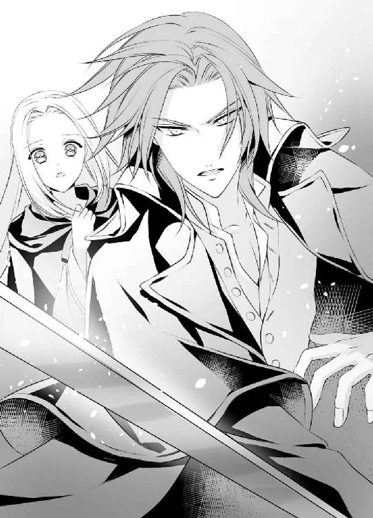
「ディーク！」
悲鳴を上げるブランシュを顔だけふり返り、濃緑の瞳を細めて困ったように笑ってみせる。
「悪いな、ブランシュ。やっぱり俺は、あなたを傷つける者は許せない。それが誰だろうと、何だろうと、俺が排除する。大丈夫だ......もしそれで何を失ったとしても、あなた以上に大切なものなど俺にはない」
「でも......！」
焦るブランシュの声に重なるように、ガルニエが口を開く。
「それは、ウィスタニア帝国はヴァリド神教の教えを否定するということですか？」
「俺個人の問題だ。すぐに国を引きあいに出すな」
「それではウィスタニア皇帝陛下は、女神ファルーナのご加護は必要ないと？」
「そんなものはいらない。俺の女神ならここにいる」
「ディーク！」
言葉の一つ一つは嬉しくても、それでもし彼に何か災いが起こればと考えると、ブランシュはとても手放しで喜べなかった。
「だめです！ そんなことを言ってはだめ......！」
必死で訂正させようとするのに、擁護の声が思いがけないほうから飛んでくる。
「いいのではないですか？ 僕も......全ての災いの元凶はあなただと、責任を転嫁するような宗教なら、そんなものは必要ないと思います......お姉さま。他に罪人は確かにいるのに......」
「あ......」
ミッシェルが水色の瞳をまっすぐ自分に向けており、その言葉に心を打たれたこともあり、ブランシュは胸に熱いものが込み上げた。
「ミッシェル......」
生まれてすぐに湖の離宮に隠され、ひっそりと生きてきた自分をミッシェルが姉と呼んでくれた──それだけでもたいへんな感動であるのに、ディークハルトと同じように彼もまた、ブランシュの幸せを願ってくれている。その事実が泣きたいほどに嬉しい。
こらえきれない涙を隠すように顔を伏せたブランシュは、次にガルニエの不機嫌そうな声を聞いた。
「これは......女神ファルーナの化身、『幸運の王子』と呼ばれる方の発言とも思えませんね、ミッシェル王子殿下」
「そんな呼び名は、僕が望んで得たものではない。お姉さまを侮辱する迷信と同じくらいにくだらないものです」
「王子？」
ガルニエがひどくうわずった声を上げたので、いったい何が起こったのだろうとブランシュは顔を上げてみた。そこではミッシェルが、神殿に入る際に手を清めるための水を、頭から被ったところだった。
「ミッシェル！」
「王子！」
驚きの声を上げる周囲を制し、彼が濡れた髪をかき上げると、艶やかな濃茶色がはがれるように、その髪から消える。
「え......？」
驚きに目を瞠っているのはブランシュだけではなく、その場にいた者ほぼ全員で、中でもガルニエはあり得ないものを見たかのように大きくぽかんと口を開けている。
ミッシェルが濡れた髪を布で何度か拭くと、髪の色はもうほぼ布のほうへ移ってしまった。現われたのはブランシュのものと変わらない見事な白金色の髪で、そうして眺めると瞳の色も薄くなったように見える。色素的には髪も瞳も、ブランシュに勝るとも劣らない白さだった。
「それで？ 僕はみんなに何と呼ばれているんだっただろうか、ガルニエ神官長」
ガルニエは苦虫を噛み潰したような顔をしながら、その質問に答える。
「女神ファルーナの化身、『幸運の王子』です......ミッシェル王子殿下」
「お姉さまと同じ白髪・白目なのに？」
「それは......」
言葉を失くしたガルニエからブランシュへと、ミッシェルはゆっくりと視線を向け直した。
「僕が生まれた時、母はとても驚いたようです。また白髪・白目の子が生まれてしまったと......でもお姉さまを手放した時のような後悔はもうしたくないと、正しい髪色は外部にまったく漏らさず、そう──父上の片腕であったガルニエにも秘密に──髪を濃茶に染めて育てるように言い残してから亡くなりました。父は今でも、お姉さま一人に辛い思いをさせていることを申し訳ないと言います。僕からも謝らせてください......僕だけ、普通に王子としての生活を送って......ごめんなさい」
「そんなこと気にしなくていいの！」
ブランシュはこれまで、自分が白髪・白目で生まれたせいで両親には迷惑ばかりをかけたと思っていた。それで悲嘆のうちに母はなくなり、父王は政治にやる気をなくしてしまったのだと──。
それなのに想像もしていなかったほどの愛情を伝えられ、憤りの気持ちなど沸くはずもない。喜びと感謝の思いばかりが深くなる。
「私はいいのよ、これで......お父様とお母様に愛されていたのだと確認できただけで幸せだし、あなたは頼もしい弟だし、それに今の私には、大切な居場所があるし......」
自分を背に庇うようにして剣を構えているディークハルトの広い背中に、ブランシュは感謝の眼差しを向ける。
「お姉さま......」
その視線の先をミッシェル王子も追った時、低い唸り声のような声が二人のすぐ傍で響いた。
「勝手なことを言うな、呪われた姉弟め......！」
はっとした思いでブランシュがふり返った時には、ガルニエが伸ばした腕がミッシェルを捕らえていた。聖杖の中に仕込まれていた剣を抜いたガルニエが、それをミッシェルの首もとにあてがい、ブランシュに向き直る。
「大切な弟を亡くしたくなかったら、今回の流行病の元凶は自分であると認め、もう一度離宮へ戻りなさい、ブランシュ王女。今度こそ、どこへも逃がさないように生涯幽閉してさし上げます」
「貴様ぁ、ガルニエ！」
すかさず飛びかかろうとしたディークハルトに、盾のようにミッシェルを向け、ガルニエはあくまでもブランシュに向かって話し続ける。
「災いを退けたとして教会の権威がじゅうぶんに高まり、この国から王室がなくなって私が頂点に立ったら、その時はまた弟と感動の再会をさせてあげます。呪われた王女・王子を封じた英雄として私が尊敬の念を集めるように......できるだけ長く生きてくださいよ。この国の全ての災いの元凶として、今後もずっと利用できるように......」
「私は......」
喉もとに剣を突きつけられた弟の姿に、顔色を失くしたブランシュは掠れた声を発する。ミッシェルの命を守るために、自分はガルニエの要求に応じて離宮へ帰ると口にしかけた時、鋭い声が飛んだ。
「ブランシュ！」
胸を射抜くような声を発したのは、ブランシュとガルニエの間に立つディークハルトだった。こちらには背を向けたまま、どういう表情をしているのかはわからなくても、彼が何を言わんとしているのかはブランシュにはよくわかる。
（でも......）
その選択を選ぶ勇気が自分にはないと首を振りかけた時、正面から自分を見つめる真摯な瞳と目があった。
（あ......）
それはブランシュと同じ淡い空色のミッシェルの瞳だった。自分よりはよほど揺るぎない意志を秘めたその瞳に見据えられ、ブランシュは思わず空を仰ぎ見る。
（私......）
暮れゆく空はその色を濃くし、もうブランシュの瞳と同じ色ではなかった。闇を一滴溶かし込んだかのようなその色に、自分にはない強さを感じ、ブランシュは固く瞳を閉じる。
（私は......！）
固くこぶしを握りしめ、決意を固めて瞳を開いたブランシュは、ガルニエに向かってきっぱりと宣言した。
「私はもう、湖の離宮へは戻りません......呼び寄せるという不幸も、自分の力で退けてみせます。大切な人は......この手で守ります！」
これまで出したこともないような声でブランシュが言い切った瞬間、強く吹き上がった風に白金の長い髪が舞い上がり、あたかもその背後に天啓がひらめいたかのように、光が射した。
「な......そんな馬鹿な......！」
ガルニエを含めたその場に居たものが、みな驚いたように動きを止めた中、ただ一人ディークハルトだけが、その宣言に笑顔含みの声をかけながら、立ちすくむガルニエの手から剣を叩き落す。
「よく言った、ブランシュ！」
瞬く間にミッシェルを解放し、逆にガルニエを捕らえたディークハルトは、誇らしげにブランシュを見つめた。その視線をすぐに、拘束したガルニエへと移す。
「驚いたか？ だが俺には意外でもなんでもない......白髪・白目の『聖王女』は国を繁栄に導くという言い伝えが、ウィスタニア帝国にはある。ヴァリド神教会でも、その言い伝えをまったく把握していなかったわけではあるまい？ だがお前は、自分にとって都合のいい伝承ばかりをさも現実であるかのように重んじた。白髪・白目のブランシュを不吉として、全ての災いをブランシュのせいにした。その行為は許しがたい。俺は絶対に許さない」
強く戒めたガルニエに向かって吐かれる言葉は強く、周囲を震えあがらせるほどの迫力があるが、再びその視線がブランシュに移れば、眼差しにも声音にも愛しさが増す。
「誰が何と言おうとブランシュは俺にとって唯一無二の存在だ。俺の女神だ......ブランシュ」
普段ならば顔を真っ赤に染めて背けてしまうその言葉を、ブランシュは甘んじて受け止めた。その懐の大きさ、強さ、優しさにいつも感心してばかりのディークハルトの、隣にいるのにふさわしい人間になりたいと強く思う。その遥かな理想への第一歩を、ようやく踏み出せたように思う。
「ありがとう......ディーク」
浮かびそうになる涙を必死にこらえながら、毅然と顔を上げてお礼を言うと、すぐにディークハルトからも返事があった。
「俺のほうこそ、ありがとう......ブランシュ」
最愛の人の心と身体を守るため、神の前の不敬も顧みず抜いた剣を、ディークハルトがようやく収める。その様子を見ても、もうブランシュに恐れはなかった。
信仰とはどれだけ主観的で盲目的なものなのか、奇しくも自分の存在でその証明をすることになってしまったブランシュにとって、もっとも尊敬し畏怖する相手はディークハルトだと、これからも胸を張って誰にでも言える気がした。
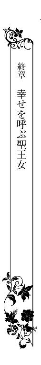
光溢れるうららかな午後、高い木々に囲まれたひっそりとした湖の畔では、ブランシュが長い髪を揺らしながら久しぶりの散歩を楽しんでいた。周囲には嬉しそうに鳥たちが飛びまわっており、隣にはよく似た髪色のミッシェルと、ポーラの姿もある。
「それにしても......まさかポーラが、私がいなくなった報告をした後、またこの湖の離宮に戻って隠れ住んでいたとは思わなかったわ......」
別れた時とまったく変わらない一分の隙もない服装で、影のようにブランシュの背後に控えるポーラは、申し訳なさそうに頭を垂れる。
「はい。実は国王陛下とミッシェル様の気遣いで、住まわせてもらっておりました。姫様をここから逃がしたとわかったら、私が教会側からどんな尋問を受けるかわからないということで......」
「月に二度、ここを訪れていたガルニエ様は、実は私を監視に来られていたのね......それで、離宮を出ることはお知らせしないでいいと、最後にあれほど急がせたのね。ようやくわかった......」
「はい。黙っていて申し訳ございませんでした」
「いいのよ、あの不自由な生活の中でも、実は幾重にも守ってもらっていたのだとこうして知ることができたから......今はただ、嬉しいだけ......」
生まれてすぐにブランシュをこの離宮へ移動させたことも、そうすることでせめて命だけは守ろうという両親の愛情からの行為だったのだとわかれば、胸に深く根づいていた悲嘆の思いも少しずつ薄れていくのを感じる。
ブランシュと同じ白髪・白目のミッシェルは、これからは髪を染めることなくありのままの姿で生活すると決めたらしい。だからブランシュも、何を気にすることもなく普通に王宮を訪れればいいと笑う。
「ウィスタニア帝国へ嫁いでしまわれたことはわかっていますが、時々は父に会いに来てくだされば嬉しいです。月に一度、お姉さまの姿を見ることがなくなってから、すっかり落ち込んでしまっているので......」
「月に一度？」
何のことを言われているのだかわからず、ブランシュは首を傾げた。さらりと肩から滑り落ちた長い髪と同じ色の髪を風になびかせながら、ミッシェルはブランシュが思ってもいなかった話を語る。
「はい。お姉さまはご存知なかったでしょうが、父は月に一度だけ、この離宮をこっそりと訪れていました。僕も何度か一緒に来たことがあります」
「でも......」
しかしブランシュは、これまで父王からの訪問を受けたことはない。そのためこの離宮に閉じ込められてから、一度も会うことなく暮らしてきたとばかり思っていた。
いったいどういうことだろうと戸惑っていると、ポーラが説明をくれる。
「毎月の大礼の日は、祈りの時間だけではなく、一日中礼拝堂を行ったり来たりしてらっしゃったでしょう？ その時に......」
「......あ！」
終日祈りに明け暮れるという名目で普段より豪華に装い、その格好のままこの湖まで出ることも許されていた不思議な日のことを、ブランシュは思い出す。
「まさか、あの時に？」
「そうです。国王陛下が離宮を訪れられていました。教会の手前、姫様と実際にお会いになることはありませんでしたが、物陰からいつも見守ってらっしゃいましたよ」
「知らなかった......」
孤独で不幸だとばかり思っていた自分の人生が、実は陰ながら両親の愛情に支えられていたのだという事実は、ブランシュの心を温かくしていく。
「だから時には、ウィスタニア皇帝の許可をもらって遊びに来てください。よければ皇帝陛下もご一緒に......僕も楽しみにしています」
「ええ。ありがとうミッシェル」
初めて言葉を交わした五つ年下の弟と、別れを惜しむように何度も抱きあってから、ブランシュはポーラとも別れた。
「お食事の準備をして待っております。ゆっくりとしてらっしゃって大丈夫ですよ」
「ありがとう、ポーラ」
心遣いに頬を赤く染めながらブランシュが向かったのは、山査子の繁みがあるあの場所だった。ブランシュに先立って飛んでいった鳥たちが、繁みの根元に座り込んでうたた寝をしている人物の肩へ止まる。
「ディーク」
呼びかけても珍しく瞳を開かないディークハルトの前で、ブランシュは地面に膝をついた。少し俯き加減に頭を垂れているディークハルトは、ずいぶんぐっすりと寝入っているようにも見える。無理もない。ウィスタニア帝国から馬を駆ってロアージュ神聖国へ入り、王都を訪れた後はすぐにヴァリド神教の聖地へ向かい、神殿についてからはブランシュを抱えるようにして逃げ回って、剣を持った神官たちに素手で対峙してと、昨日一日で彼はどれだけの体力を使ったかしれない。
昨夜は珍しくブランシュと寝室も別にして早めに床に就いたが、いくら寝ても疲労が残っているのは当然だと思えた。
「私のせいでごめんなさい......そして、ありがとう」
精一杯の感謝の気持ちを込めて頬に口づけると、そのままディークハルトに抱きしめられる。
「きゃあっ......起きていたのですか？」
驚くブランシュの顔を、鼻と鼻が触れそうなほど近くからディークハルトが見つめた。
「もちろんだ。あなたの気配を近くに感じて眠っていられるはずがない。昨夜は弟君の手前、部屋が別だったからな」
頬に頬を寄せ、それからゆっくりと唇を重ねられた。啄むように何度も口づけ、耳もとで囁かれる。
「ほんの少しの間でも、離れているのはやはり寂しい。この腕を解きたくない」
「はい......」
それはブランシュもまったく同じ思いだったので、どきどきと胸の音を大きくしながらも頷いた。背を撫でていたディークハルトの手が、身体の前面にまわってくる。
「ディーク、でもこんなところで......」
「少しだけだ」
ブランシュの戸惑いを退けて、それはドレスの胸もとに忍び込み、白い肌に直接触れてきた。
「は、あっ......」
ぴったりと身体を寄せているので、どこから見ても単に抱きあっているようにしか見えないだろうが、実は隠れて官能的な触れあいをしているというのは、ブランシュの心を高まらせる。ひどくいけないことをしているかのようで、胸の音と身体の緊張がますます大きくなる。
「んっ......や......」
胸の膨らみとその先端の蕾をてのひらで弄ぶように揉まれ、熱い息を漏らした。後戻りができなくなる前に止めてもらわなければと思うのに、ディークハルトの手を制止できない。
「だめ......あ......」
胸もとから引っ張り出された膨らみに、唇を寄せられた。軽く吸い上げられ、舌先で転がされ、ぞくぞくする感覚が背中を駆け上る。
「あっ、や......」
逆の膨らみもドレスからさらけ出され、下から持ち上げるようにして大きく揉まれた。後ろに逃げそうになる身体を抱き止められ、胸に顔を埋めるようにして引き寄せられる。
「きゃあっ......あっ......！」
大きくドレスの裾を捲った手が、太腿を撫で上げた。
「待って......あ......」
「あの中庭でしたように、俺の上に乗れるか？」
耳もとで熱く囁きかけられるので、ブランシュは必死に首を横に振る。
「無理......！ 無理です......っん」
ミッシェルとポーラは先に離宮へ帰ったが、この場所は館からも遠くに見える。二人で寄り添うような格好はともかく、もっと親密な行為を連想させるかのような格好は、なるべくしたくない。
ブランシュの返事を受けて、ディークハルトは胸もとに伏せていた顔を上げ、その場に立ち上がった。
「じゃあ、仕方がない」
言うが早いかブランシュを腕に抱き上げると、繁みの中へ入ってしまう。そこは大きな木を中心に少し開けた場所になっており、ブランシュは木の幹に背中を預けるような格好で立たされた。
「少し我慢してくれ」
ドレスの裾を大きく捲ると、薄い下穿きにディークハルトは手をかける。
「え？ や......」
身の危険から腰を引こうとしたブランシュの身体を木に押しつけるようにして、そのまま下穿きを引き下ろしてしまった。さらけ出された秘所に、ディークハルトの指が直接触れてくる。
「待って......や、ああんっ......」
花弁を開かれ、その奥まで指先で探られながら、熱い息と共に囁きかけられた。
「濡れているな、これなら大丈夫だ」
下穿きを完全に抜き去った脚を一本、大きく抱え上げられ、下から身体の中心を貫かれるような格好で、大きくて硬いものをぐいぐいと蜜壺に挿入される。
「ああっ、こんな......ぁ......っ」
向かいあって立ったままの格好で身体を繋がれてしまい、ブランシュは恥ずかしさと信じられないような思いで何度も首を横に振った。その頬に大きな手を添え、ディークハルトは深く口づけてくる。
「んんっ......ん、んぅ......」
ねっとりと舌を絡ませながら、下では大きく彼のものが蜜壺を出入りしていた。抱え上げられている片脚が次第に大きく開かされていくのに応じて、その動きも激しくなる。
「んっ、んんっ......っふ、あ......」
まるで獰猛な獣に激しく求められているかのようだった。普段とは違う角度で胎内に挿入ってくる熱棒が、蜜壺の中で暴れ、快感に濡れる襞を強引に擦りたてる。
「んう......あ、ああっ」
唇を解放され、ブランシュがこらえきれなかった嬌声が艶めかしく辺りに響いた。熱い吐息と感極まったような声に混じり、激しく身体を繋ぐ結合音が、ぬちゅぬちゅと静かな湖畔にやけに大きく響く。
「あっ、いやぁ......あん、あんっ」
身体に与えられる強い刺激と、これまでにない経験に、がくがくと腰を揺らしてブランシュは咽び泣いた。強引に高められた快感は、身体の奥で今にも弾けそうになっている。それなのにディークハルトが激しい抽挿を緩めないので、息つく暇もない。
「やっ、あ......ああっ......あぁあああん」
腰を使って下から何度も大きく突き上げられ、ブランシュはあっけなく快感の波にさらわれた。びくびくと四肢を痙攣させて、身体をのけ反らせる。
「ああ......こんな......や、ぁぁ......」
屋外で、しかも立ったまま攻められ、それなのに達してしまったことが信じがたく、ブランシュはすっかり力の抜けきった身体を震わせる。その間もディークハルトの抽挿は緩まず、びくんびくんと脈動している膣内を、強引に擦られ続けている。
「待って......ま、あっあん......だめぇ......っ！」
極めたばかりだというのに、新たな快感を従順に享受してしまう自分の身体が信じられず、ブランシュは激しく首を振った。白金色の髪がさらさらとかかる白い双丘に手を伸ばし、掴みながら、ディークハルトは下から突き上げるような挿入を更に深くする。
「あっ、あっ」
膣奥を抉るような深い突き上げをくり返され、ブランシュはかろうじて地面についている片脚までも宙に浮いてしまいそうだった。身体を支えておられず、前かがみに倒れそうになると、ディークハルトがブランシュの身体を反転させる。
「え？ あ！ あああっ」
身体を繋いだ格好のまま、強引に後ろ向きにされ、蜜壺の中を剛直にぐるりとかき混ぜられたブランシュは大きな声で喘いだ。
抱え上げられていた片脚を地面に下ろされ、自分の脚でしっかりと立てる格好になったはいいものの、後ろからディークハルトに刺し貫かれているような恥ずかしい体勢だ。
しかも身体を大きく前に倒され、彼に向かって臀部を突き出したようなあられもない姿にされる。
「しっかり掴まっていろ」
言葉に従って目の前にあった木の幹に夢中で手を伸ばすと、後ろから腰を打ちつけるようにして大きな挿入をされた。
「あああんっ」
ブランシュが大きな声を上げて背中をのけ反らせたのが気に入ったのか、ディークハルトは細い腰を両手で掴み、逃げられないように固定して、何度もその深い挿入をくり返してくる。
「あっ、あっ......あああっ」
挿入の深さと激しさは、向かいあって立っていた時とは比べものにもならなかった。腰を打ちつけられるたびに、その衝撃を受け止めきれず、身体が大きく前後する。その腰を自分のほうへ引き戻すようにして、ディークハルトは何度もその動きをくり返す。何度も──。
「あっ、あんっ......あ、あぁ......ん」
与えられる刺激が大きすぎて、ブランシュが何も考えられなくなってしまうのは早かった。ディークハルトに身体を激しく揺さぶられるままに、また快感を極めてしまう。
「あ、ああっ、あ──っ！」
脚から力が抜けてその場に倒れ込みそうになるのに、ディークハルトが腰を掴んだ手を放してくれない。
「や......は、ぁ......あっ、もう......やぁ......」
身体の奥から溢れた愛液をかき混ぜるように、胎内を大きく攪拌される。じゅぶじゅぶと耳を塞ぎたくなるような淫音が辺りに響き、溢れた蜜が太腿を滴り落ちていく感触もあるのに、ディークハルトはまだ交わりを解いてくれない。それどころか更に大きく、ブランシュの膣奥を穿ってくる。
じゅぼっじゅぼっと信じられないほどに淫らな音が、二人の結合部からは聞こえた。ブランシュは首を振ってその音を打ち消そうとするのに、いつまでも止んでくれない。それどころかディークハルトに押し入られるごとに、音は大きくなっていく。
「い、や......いやよ......ぉ......ああっ」
背後から覆い被さるようにして、ディークハルトが身体を倒してきた。背中に逞しい胸が重なり、身体の前面にまわされた手がむき出しになったままのブランシュの胸の膨らみを掴む。
「あっ、あぁ......っ」
身体の奥を深く穿たれながら、胸の膨らみを大きく揉みしだかれ、もはやブランシュの頭から正常な思考は飛んでしまいそうだった。そうでなければ、とても受け入れられない。これ以上はもう無理だと考える頭に反して、身体は次々と与えられる刺激を喜んで享受している。
いつの間にかそれほど快感に貪欲な身体になってしまっていたことが、恥ずかしかった。
「もう、や......あ、ああっ」
拒否の言葉とは裏腹に、蜜壺が嬉しげにディークハルトのものを締めつけてしまっていることはブランシュにもわかっている。でも認めたくはない。認めてしまえば淫乱な身体だということを、自ら認めることにもなる。
「ブランシュ......」
最後の理性を打ち砕くように、ディークハルトが耳もとに囁きかけてきた。
「好きだ、ブランシュ......好きだ......」
想いを刻むように抽挿をくり返され、ブランシュの中で何かが砕けた。
「私も......私も好き......ああんっ、あ」
気がつけばディークハルトの動きにあわせ、自らも腰を動かしていた。貪欲に快感を貪る行為に対する恥ずかしさは変わらないが、想いを言葉にすることで、単に肉体の快楽を求めているのではなく、お互いを深く求めているという思いが大きくなる。
身体だけではなくその全てを求めあっているのだと思えば、意図せず身体が動いてしまうことももう恥じることはない。
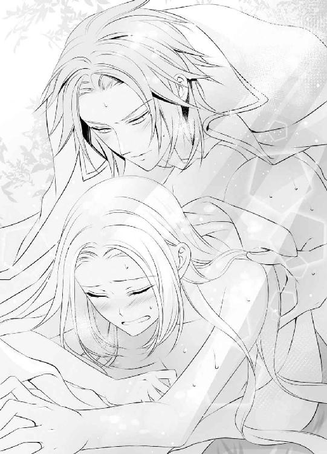
「あっ、あ......あ」
背後から羽交い絞めにするような格好で抱きしめられながら、ブランシュはディークハルトと共に、深い快感を享受した。身体の奥深くでディークハルトのものがこれまでになく大きくなっていることを感じる。その硬さと熱さで最奥を突かれることが、素直に気持ちいい。
「あんっ、あ......ディーク......っん」
まるで更なる抽挿をねだるように、ブランシュは腰をくねらせ、甘い声を上げた。その身体を腕の中に強く抱き込み、ディークハルトは抽挿を速くしていく。
「ブランシュ......っ、ブランシュ」
名前を呼びながら膣壁を抉り、凶悪なまでに大きく膨らんだものが、ブランシュの身体の奥で熱い飛沫を迸らせた。
「あああっ、あ......あっ」
その衝撃でブランシュはまた極めてしまい、ディークハルトの腕の中でぐったりと身体から力が抜ける。まるで抜け殻のように力が入らず、ただぴくぴくと快感の余韻を残している蜜壺に、熱い飛沫をたっぷりと注がれた。
どくどくと脈動しながら身体の奥に吐き出し続けられる白濁に、蜜襞の隙間まで余すことなく浸食される。こうして自分の全てがディークハルトのものになることが、涙が出るほどに嬉しい。
止まることのないかのような欲望を受け止め続けながら、ブランシュは小さく息を吐いた。
「あっ、ん......ディーク......」
「なんだ、ブランシュ？」
背中に乱れかかった長い髪を少し持ち上げて指で梳きながら、ディークハルトが優しく問い返す。
「好き......です......愛しています」
「............！」
軽く息を呑んでから、ディークハルトはブランシュの中に放出したものをかき混ぜるように、蜜壺に挿入したままの熱棒をぐるりとまわした。
「あんっ......あ」
欲望を吐き出したばかりのそれは、今すぐにでもまた激しい抽挿を再開できるほどに、もう硬さを取り戻している。
「そういうふうに言われると、せっかく解放してやろうと思ったのに、また手放せなくなる」
緩く出し入れを再開しながら紡がれた言葉に、ブランシュは涙に濡れた睫毛をそっと伏せて、頷いた。
「い......です。まだやめないで......あ」
「本当に？ もっと無茶をさせたくなるかもしれないが？」
「い、の......だからまだ......このまま......あ、あぁ......」
疲れた身体に再び律動を刻まれ始め、がくがくと脚は震えているが、まだディークハルトと離れたくない──その思いのほうが大きい。
吐き出された欲望とブランシュの中から溢れた蜜が混じりあい、かき出されて、彼を受け入れる場所はぐちゅぐちゅと淫らな音を響かせていたが、それでもブランシュは幸せだった。
「あんっ......あ、あぁ......」
誰にもまねできないような濃密な交わりをこれほどくり返しても、ディークハルトの体調には不安なところは何もない。むしろいっそう元気に、何事にも精力的になっているように感じる。
自分に関わることで相手が不幸になどなったりしない──初めてブランシュにそう信じさせてくれたのは、ディークハルトとの行為だった。
それにお互いを想う気持ちが重なり、求めあう思いが大きくなり、快感を享受することに幸せを感じるほどに、今は絆を深められたことが嬉しい。
「好き......です、ディーク......あっ、あぁ......」
「俺も好きだ、ブランシュ。絶対、離さない。ずっと傍にいる」
「はい......は......ああっ......」
約束を誓いに変えるかのような行為は、その後もゆっくりと長く続き、二人が館に戻ったのはもう夕暮れが近くなる頃だった。
翌日、ポーラを伴ってブランシュとディークハルトは湖の離宮を旅立った。
それに先立って前日に王都へ帰ったミッシェルは、教会の求心力を高めるためにガルニエが自ら人々を不幸に陥れ、それを全てブランシュのせいにしていたことをすぐに明らかにした。
ガルニエはヴァリド神教会から神官長の地位を剥奪され、罪人として王都の牢獄へ投獄された。彼がブランシュに迫った死ぬまでの幽閉を、奇しくも自分で受けることになった末路だった。
ミッシェルがありのままの髪色で過ごすと決め、ウィスタニア帝国に伝わる『聖王女』の言い伝えがロアージュ神聖国でも知られることになり、これからはもし白髪・白目の子供が生まれたとしても、自分のような迫害を受けずに済むらしいことがブランシュは嬉しい。
（本当によかった。これからはごく普通の子供として育って、ごく普通の幸せを手に入れて......）
それがどれほど素晴らしいことであるかを、ブランシュはもう身を以って知っている。それらは全て、ディークハルトがブランシュに与えてくれた。彼との出会いこそが、唯一無二の自分にとっての幸せだったのだと、強く自覚している。
「ディークが、好奇心旺盛でよかった......」
ウィスタニア帝国へ向かいながら、馬上でぽつりとこぼした呟きが、共に馬に乗っていたディークハルトの耳にしっかりと届いてしまった。
「なんだ、それは？」
ブランシュは頬を赤くしながら、俯く。
「だってもしそうでなかったら、わざわざ『聖王女』の噂を確かめに、こんなところまで来てくださらなかったでしょう？」
「それは......そうだな」
きまり悪げに視線をそらしたディークハルトの顔を見上げ、ブランシュはその頬にそっと手を伸ばした。
「でも......もう女神ファルーナの加護を拒否してしまったのだから、あまり無理はしないでくださいね」
ガルニエと対峙した時のやり取りを揶揄しながら囁くと、頬に添えた手を強く掴まれた。
「大丈夫だ。俺には俺だけの女神がついている。愛しい『聖王女』さま......」
それが誰であるかを証明するように、ディークハルトはブランシュにそっと口づける。
「んっ......」
ポーラも傍にいるのにとブランシュは焦ったが、隣で馬を歩ませていたポーラは、気を利かせて二人から顔を逸らしていた。
これまで見た中でももっとも上機嫌な顔をしたディークハルトが、馬の手綱を握り直す。
「まずはその女神に、オスカーの機嫌を直す手伝いをしてもらわなくちゃな」
「あ......」
ディークハルトがまた勝手に城を抜け出したことに、彼の腹心がどれだけ迷惑を被っているかと思うと、ブランシュは申し訳ない思いになった。
「そう......ですね。頑張ります」
神妙な顔で頷くと、ディークハルトに少し乱暴に頭を撫でられる。
「ははは、今のはただの冗談だ、真に受けなくていい。あなたはただ、俺の隣で笑ってくれればいい......」
「こう......ですか？」
真剣に笑顔を作ってみせるブランシュを前に、ディークハルトの笑顔こそ、ますます輝くようになっていく。
「そう！ その顔を見せてくれるだけで、俺は何でもできる気がする。いや......やってみせる！」
力強い宣言と共に、ディークハルトが馬の歩みを走りに変えたので、ブランシュは背からふり落されてしまわないように、彼に抱きついた。
ポーラも、慌てることなく馬で二人の後を追ってくる。
国境へと向かう長い道には、ディークハルトの嬉しげな声とブランシュの笑い声がいつまでも響いた。天高くから降り注ぐ日光に煌くブランシュの白金色の髪は、神々しいほどに光り、清廉な雰囲気の容姿と相まって、確かに彼女を女神めいてみせる。
きらきらと輝くその長い髪の色は、決して不吉なものなどではなかった。明るい未来を感じさせる、希望に満ち溢れた光のようだった。
あとがき
はじめましての方も、またお会いしましたねの方も、こんにちは。芹名りせです。
このたびは、『覇王と愛され聖王女の溺愛新婚生活』をお手に取っていただきまして、まことにありがとうございます！
ロイヤルキス文庫様では三冊目の著作となります本書は、これまでより少しダークなお話ということでロイヤルキス文庫ダークでの刊行です。装丁もそれらしい雰囲気になっていることと思います。といってもタイトルにありますとおり新婚物語なので、全編に愛が溢れておりますが......（笑）
とある理由から不幸な境遇にあるヒロインを、それをものともせずぐいぐい迫るヒーローが、大きな愛で包み込む物語です。どこまでも大きな愛を、ヒロインと一緒に感じていただけますと幸いです。どうぞ楽しんでいただけますように！
今回、担当様はじめ関係者の方々には、私の体調不良でたいへんご迷惑をおかけしました。こうして無事に刊行の運びとなりましたことに、本当に感謝です。出版の機会を与えてくださいました出版社様、その他この本ができあがるまでにご尽力くださった全ての方々に、この場をお借りしまして厚く御礼申し上げます。ありがとうございました！
またイラストの蘭先生には、日程的にご迷惑をおかけしたことはもちろん、ご丁寧に「イメージした国や時代などありますか」という問いかけをいただいたのに、「特にありません。お任せします」などと丸投げしてたいへん失礼しました。申し訳ございませんでした。
言い訳させていただくならば、せっかくファンタジーぽい世界観なので、蘭先生の素敵な衣装デザインを思う存分堪能したいという私利私欲が働いた次第です（笑）。すみません......。
結果、作っていただいたキャララフに大喜びでした！ このお話はヒロインであるブランシュの容姿が物語の大切な部分になってくるのですが、白目（実際にはごく淡い空色）などというあるまじき設定を見事に絵にしていただき、ただただ感謝するばかりです。見本誌が届きましたら、じっくりと眺めるのが楽しみです。お忙しい中、本当にありがとうございました！
最後になりましたが、この本を手に取ってくださったあなたに最大級の感謝を述べて、締めさせていただきたいと思います。心よりありがとうございました！ こうして新しいお話をお届けする場をいただけるのは、読んでくださったあなたのおかげです。またどこかでお目にかかりました時にはどうぞご贔屓に！
芹名りせ
「中庭の微睡」
ピピピ
顔に温かな日の光を感じながらしばしの微睡に耽っていたブランシュは、突然どこからか聞こえてきた鳥の鳴き声に、慌てて目を開いた。
「......え？」
瞬間、目に飛び込んできた風景に、淡い空色の瞳を瞬かせる。
「あ、そうだったわ......」
以前から聞き慣れた鳥の声がしたように思ったので、ここを湖の畔の離宮だと思って目を開いたが、ウィスタニア帝国のファンテス城の中庭だったと思い出し、周囲を見渡す。
「あれ？ ディークは......？」
天気がいいからとこの中庭に転がり、強引にブランシュも誘った夫──ディークハルトの姿がどこにもない。怪訝な思いで、ブランシュは何度も辺りを見回した。
ブランシュがディークハルトに連れられてこの城へ来てから半年が経った。途中、祖国の危機に瀕し、二人でロアージュ神聖国へ帰ったこともあったが、今は平穏で幸せな日々を過ごしている。
しかし変わりない日々の中、ブランシュに小さな驚きや喜びを与えてくれるのは決まってディークハルトで、今もその姿がないことに焦りを覚えている。
「ディーク！」
声に出して呼んでみると、驚くほど近くから返答があった。
「ここだ」
声につられてブランシュは傍に立つ高い木を見上げ、そのかなり高い位置の枝に、彼の姿を認めた。日の光が透けて燃えるように輝く金赤の髪。深い緑色の瞳。全身の色素が薄いブランシュとは対照的に、どこにいてもすぐに目立つ色彩を身にまとったディークハルトは、緑の葉の間で大きく破顔している。
その笑顔こそが何よりも眩しいと、ブランシュは胸を弾ませながら目を細めて問いかけた。
「そんなところで何をしているのですか？」
ディークハルトは少し決まり悪げに、自由に宙を跳ねている金赤の髪に指を突っ込む。
「いや、鳥の声がしたんでどの巣箱に巣を作ったんだろうと探してるんだが......どこにもないんだ」
「あ、私も鳥の声を聞きました！」
「だろう？」
ブランシュが一八歳までを過ごした湖の畔に似せてディークハルトが造ってくれたこの中庭には、木の上にいくつもの巣箱が置かれている。
それは鳥たちに餌をやることが日課だったブランシュのためで、鳥に囲まれたブランシュの幸せそうな顔を、ここでも見たいのだそうだ。
しかし周囲を高い城壁に囲まれた城の中庭にまで飛んでくる鳥はおらず、たくさんの巣箱はまだ空のままだ。
いよいよ記念すべき一羽目が訪れたのかと心躍らせたのに、どこにも巣らしきものがないとディークハルトはため息を吐く。
「いったいどこなんだ......」
以前のように鳥と戯れたい気持ちにも増して、ディークハルトの努力が実ってほしいと願う気持ちが、ブランシュの中でも強かった。
人に囲まれることにあまり慣れておらず、気を遣ってしまう自分がこの王宮で生きていくために、ディークハルトは実に様々に心を遣ってくれる。この中庭然り、忙しい公務の合間を縫ってはなるべく傍にいてくれること然りだ。
彼のためにも鳥の巣を見つけようと、ブランシュは立ち上がった。
「私も探します」
ディークハルトが登っている木に自分も登ろうと手をかけると、慌てて彼が滑り降りてくる。
「おいおい、『聖王女』さま......！」
時には茶化して、時には真剣な面持ちで、ディークハルトが口にするのはブランシュの呼び名だ。白髪・白目の『聖王女』が国に繁栄をもたらすという伝承がウィスタニア帝国にあり、若き皇帝であるディークハルトはわざわざ隣国までブランシュを探しに来た。幽閉されているという噂の湖の離宮まで──。
ブランシュの祖国のロアージュ神聖国には真逆の伝承があり、忌み嫌われる存在として隔離されていた日々が、今はもう遠いことのように思える。そう思わせてくれたディークハルトの愛情に、ブランシュは深く感謝している。
「こちらではないの？ それともこの木？」
ドレスの裾をひらひらと翻らせながら、先に立って木に登ろうとするブランシュにディークハルトは肩をすくめる。
「いいから、巣は俺が探すから......」
ブランシュは待っていろと言いかけたのだろうが、それを言い終わらないうちに、木によじ登っていたブランシュは途中で力が抜けてずり落ちてきた。
「きゃあああっ」
「ほら......だから言わんこっちゃない」
下敷きになって受け止めてくれながら、苦言を呈するディークハルトだが、その表情は怒っているふうではない。むしろ笑顔で、思いがけず間近で見つめあうことになった瞳には甘さが混じり、ブランシュはどきりと胸を跳ねさせながら長い睫毛を閉じる。
「ディーク......んっ」
二人がそっと唇を重ねた時、またどこからか鳥の声がした。
ピピピ
「あっ！」
今度こそ声がしたほうを即座にふり向き、ブランシュはディークハルトと共に繁みをかき分ける。彼が準備した巣箱ではなく、見事に葉が繁った低い木の枝と枝の間に、鳥自身が作った天然の巣があった。しかもすでに卵も生まれているようで、二羽の小鳥が仲良くそれを温めている。
「ディーク、見て......！」
寄り添う白い鳥と赤い鳥がまるで自分たちのようで、ブランシュは喜びに瞳を輝かせた。その表情を見つめるディークハルトの顔も喜びに緩む。
「ああ、いいものを見たな」
「いいもの？」
「俺たちにも近く、こういう幸せが訪れるかもしれないってこと」
「あ......」
幸せそうな鳥の姿に自分たちの姿を重ね、ブランシュは真っ白な頬を赤く染めた。ディークハルトが言うように、自分たちにも幸せのおすそ分けが貰えることを期待して──また彼と静かに唇を重ねた。
おしまい♥
『覇王と愛され聖王女の溺愛新婚生活』
電子第１版発行 ２０１６年８月31日
著 者 芹名りせ
発行所 株式会社ジュリアンパブリッシング
東京都千代田区九段北１‐５‐９‐３Ｆ
０３‐３２６１‐２７３５
※本電子書籍は左記の作品に基づき製作されました。
発行 株式会社ジュリアンパブリッシング
ロイヤルキス文庫『覇王と愛され聖王女の溺愛新婚生活』
(初版発行 ２０１６年５月30日)
(c)Rise Serina 2016
※本書の一部、あるいは全部を無断で複製複写（コピー）、転載、上演、放送することは法律で認められた場合を除き、著作権の侵害となるため、禁止します。